死亡地带
太空牛仔专属角色扮演游戏
德雷克兄弟同人杂志
2420年9月27日，标准时间06:05
定向波束传输：“战车号”飞船
传输开始
不明飞船请注意，这里是地球协约国“战车号”飞船。 你正进入死亡地带。 地球协约国的保护范围至西格玛3 - 020导航信标为止。 请注意，在你进入该区域前，你的入境信息未被记录在案。 请发出敌我识别信号，并规划返回母星区域的航线，或继续保持当前航向和方位。 重复：不明飞船，自西格玛3 - 020导航信标起，你将在这片区域独自行动。 暂停10秒等待确认： …… 好吧，祝你好运，祝你一切顺利。 “战车号”，完毕。 // 传输结束
德雷克兄弟同人杂志
官网：www.acoupleofdrakes.com
推特账号：@DrakeandDice、@NaviMusing
死亡地带
版权所有 © 2022 德雷克兄弟
保留所有权利。
未经出版方事先书面许可，不得以任何方式复制或传播本出版物的任何部分。
若你为个人使用而复印，可自行操作。此声明将视为你的“书面许可”。祝太空牛仔们游戏愉快！
——德雷克兄弟
致谢
- 编辑：S.A. 曼恩，推特账号：@nordaim
- 卡牌设计：桃源游戏（Peach Garden Games），感谢其提供用于随机生成地点的卡牌设计方案
- 灵感来源：黑鸟互动（Blackbird Interactive）开发的《硬核太空：拆船模拟器》（Hardspace: Shipbreaker），该游戏展现了在太空中对抗资本主义的主题
目录
- 引言 .......................................................... 01
- 全局概览 ................................................... 04
- 你的主要属性 ................................................... 04
- 你的次要属性 ................................................... 06
- 必知机制 ................................................... 07
- 拾荒者创建 ................................................... 10
- 飞船创建 .......................................................... 18
- 游戏机制 ....................................................... 20
- 指引系统 ....................................................... 20
- 待拆飞船 ....................................................... 22
- 飞船导航 ....................................................... 24
- 银行系统 ....................................................... 20
- 气闸 .......................................................... 27
- 拆船流程 .......................................................... 25
- 收益结算 .......................................................... 26
- 太空行走 .......................................................... 28
- 冒险推进 .......................................................... 29
- 飞船甲板蓝图 ....................................................... 30
- 飞船甲板说明 ....................................................... 30
- 1级待拆飞船 ....................................................... 32
- 2级待拆飞船 ....................................................... 34
- 3级待拆飞船 ....................................................... 37
- 4级待拆飞船 ....................................................... 40
- 威胁 ................................................................... 43
- 外星生物 .......................................................... 44
- 敌对拾荒者 .......................................................... 45
- 失控人工智能 .......................................................... 46
- 致命幽灵 .......................................................... 47
- 残忍海盗 .......................................................... 48
- 纳米虫群 .......................................................... 49
- 物资与服务 .......................................................... 50
- 信用点消费 .......................................................... 50
- 合作模式与对抗模式 ................................................... 56
全局概览
你将独自在此闯荡
但这正是我们喜欢的方式。在死亡地带，四周遍布着航天史上的“遗骸”，这些废弃飞船里藏着待你发掘的宝藏。但哪怕多一次心跳的时间，都可能让别人对你辛苦找到的珍贵战利品虎视眈眈——这意味着麻烦，而这片区域的麻烦已经够多了。
并非所有人都有成为“拾荒者”的资质。重力消失、灯光熄灭时，不少人会崩溃；手电筒开始闪烁时，很多人会对影子疑神疑鬼；还有人只顾着盯着氧气含量，却错过了眼前的机会；有些人甚至不知道如何通过主感应罩的三通道超控装置，去获取下方丰厚的收益。
但你不一样。只要你能依靠装备、智慧和勇气，就能在这些废弃飞船中赚得盆满钵满——要么成功，要么在尝试中丧命。
无论结果如何，你都得独自面对。没人会来寻找你，也没人知道你在这里。
死亡地带
欢迎来到文明的边缘，拾荒者。
这里是偏远地区的荒凉边境。最近的星球虽已配备地球协约国的初期技术，以支撑不断增长的人口，但要让这些星球变得宜居，还需要很长时间。地球协约国拥有繁华的核心区域，但这里距离核心区域遥不可及。
不过，你可不是来这里干苦力、拿微薄薪水的，对吧？你来到死亡地带，是为了打捞废弃飞船里的物资。当飞船变得过于老旧、危险而无法继续使用时，它们会被拖到这里，像垃圾一样丢弃在“潮汐线”上。超大质量黑洞“人马座A星”（SAG - A）会无情地将这些旧飞船吸入，压缩成奇点——这样，那些掌权者就再也不用为这些废弃飞船操心了。
我猜，他们对我们大多数人也是这种态度。在这片边缘地带，我们靠着智慧求生，努力勉强维持生计。要是“人马座A星”也能把我们吸进去，对他们来说或许更省事。
这里的生活就是最原始的边境模式，拾荒者。有人想在这片荒野中谋生，栖息地空间站构成了一个个“新兴城镇”；不少恶人在文明的缝隙中作祟；还有些固执的探索者来到这里寻找财富，在地球协约国技术繁荣的“残骸”中挖掘“黄金”——而你，正是其中一员。
如何游玩
《死亡地带》是一款由指引系统驱动的策略角色扮演游戏，支持1至2名玩家。游戏讲述了技艺娴熟却又身处绝境的拾荒者，在废弃星舰的残骸中搜寻，渴望获得丰厚收益的故事。
你需要准备的物品
- 一副普通扑克牌。
- 1或2个六面骰子（d6）。
- 几个小标记物：1个代表你的角色，3 - 4个用于标记出现的威胁。你可以用其他骰子、硬币或身边任何顺手的东西作为标记物。
- 一张打印好（或手绘）的角色表。
- 非必需但实用的物品：额外准备一些标记物，用于标记尚未收集的模块资源。这样能帮你记住资源的位置和剩余数量，方便之后返回获取。稍后你就会明白这样做的意义，放心。
游戏的核心循环是：创建一名拾荒者，驾驶飞船前往死亡地带，搜寻随机生成的废弃飞船。你要应对飞船内潜藏的各种危险，在风险中把握机会，最终返回基地，用辛苦赚来的战利品换取更好的装备、提升技能、偿还沉重债务，最终实现梦想，远离死亡地带。
建议你先通读一遍规则，了解各个部分如何衔接，然后再开始游戏。我们设计了大量简化机制，减少繁琐的记录工作，不必担心一开始就记住所有步骤——玩家工具包中附带了流程速查表，可帮你快速回顾游戏流程。
如果你的玩家工具包不慎丢失（毕竟太空里的“小妖精”总爱捣乱），可以回到母站（访问网站acoupleofdrakes.com）重新获取。
全局概览：游戏基础
要玩这款游戏，你需要用普通扑克牌的一部分，按照提供的飞船甲板蓝图摆放，随机生成可供搜寻的飞船。每张牌代表一个可供探索的“模块”，每个模块都有专属的提示和对应的机制（后续“指引系统”部分会详细说明）。探索过程中，你会获得不少资源助力，但这毕竟是一款高风险游戏——坏运气和过度冒险，都可能让你丧命。
本节将介绍属性的作用，并概述其他关键机制（后续章节会详细展开）。游戏过程中，你最常需要做的操作是掷一个六面骰子，然后根据结果行动。
通常情况下，骰子结果1 - 3代表失败，4 - 5代表部分成功，6代表完全成功。只要你一直掷出6，就不会受到游戏中的伤害。很简单，对吧？
你的主要属性
勇气（GRIT）
代表你的冷静、经验、运气和无形的优势。消耗1点勇气，可将失败的掷骰结果（1 - 3）转为部分成功（4 - 5）。注意：在一次打捞任务中，当你消耗最后1点勇气时，会触发一个“威胁”事件。在打捞阶段（包括模块探索、收益结算、拆船等环节）的任何掷骰中，都可按上述规则使用勇气。
装备（GEAR）
代表你的工具、库存零件、电池和应急解决方案。消耗1点装备，可在探索模块或应对其他需要掷骰的提示时，额外增加1个六面骰子（即掷2d6），取其中较好的一个结果作为最终结果。
照明（GLOW）
指“全能闪光仪”（OmniFlash）。它的光束足够用于照明，但若想彻底驱散星际间的黑暗，你可以让它释放全部电池能量，发出一道集中光束。这道光持续时间不长，但足以让你提前察觉前方可能出现的问题。电池组价格昂贵，但物有所值——除非你选择“虚空鼠”（Void Rat）职业，否则初始照明值均为1。
消耗1点照明，可在进入相邻模块前，查看该模块内的情况。注意：照明无法斜向使用，且若你的当前模块与目标模块之间存在空旷空间，照明也无法生效。
氧气（GAS）
准确来说是氧气（O₂）。好消息是，在对氧气的需求面前，所有人都是平等的。“呼吸易二代”（BreatheEZ Mk II）大气循环系统，是在太空虚空中避免窒息的黄金标准装备。它整合了背部安装的歧管、气罐和循环装置，正常情况下性能出色——但也有失灵的时候。
每当你进入一个新的飞船模块，或收到相关提示时，首先要检查氧气水平。开始探索一艘新飞船时，你的初始氧气值为6中的1（即1/6），氧气状态通过六面骰子的“失败区间”来体现，失败区间会逐渐扩大，模拟氧气系统的连锁故障。
- 游戏中：每次在飞船模块间移动时，若掷出2 - 6，氧气保持满值；若掷出1，失败区间扩大为1 - 2，此时需要掷出3 - 6才能通过氧气检查；若再次掷出1 - 2，失败区间扩大为1 - 3，以此类推。
- 若失败区间最终扩大到6（即掷出任何结果都算失败），除非你正处于气闸中，否则将耗尽氧气——下次好运吧。
负载（LOAD）
简单来说，就是你的便携包一次能装多少东西。所有打捞到的“战利品”，其负载值等同于它的信用点（Cred）价值。如果找到的战利品超出你的负载上限，你需要返回气闸，卸下战利品后，才能再次返回搜寻剩余物资。
次要属性
信用点（Cred）
即电子现金。当你将在死亡地带打捞到的负载物资存入飞船货舱后，出售这些物资就能获得信用点。你可以用信用点支付“维护费”（Upkeep）、偿还债务（Debt）、进行投资（Investments）或购买升级项（Upgrades）。在一次任务结束时，货舱中每1单位负载的物资，可兑换1点信用点。
维护费（Upkeep）
根据初始选择的飞船大小，每个人的基础维护费为3 - 7点（1点维护费对应1点信用点），每次从死亡地带返回后都需支付。若无力支付维护费，你的飞船会被银行扣押，但至少你能保住性命。购买部分升级项会增加维护费。
升级项（Upgrades）
若你想更高效地拆解大型飞船，或更轻松地找到目标飞船，升级项能帮上大忙。从拾荒者自身到飞船，所有方面都能升级。有些升级项能救命，但很多升级项会增加维护费，所以务必关注自己的财务状况。升级项的具体信息，请查看第50页的“信用点消费”部分。
债务（Debt）
代表你欠银行的钱。初始债务金额由你选择的融资飞船决定。你可以通过还款减少债务，也可能因接受银行的额外贷款，或银行计算复利而增加债务（银行的具体操作详见第21页）。1点债务相当于10点信用点。
投资（Investments）
只需支付偿还1点债务所需金额的一半，就能进行1次投资。每次投资都会产生收益，使你的维护费降低1点。1次投资的成本和持续价值为5点信用点。只要在本轮支付维护费前兑现投资，就能获得投资的全额价值。
必知机制概述
待拆飞船（Birds）
这是对死亡地带中废弃飞船的昵称。这里共有12种可供搜寻的飞船类型。你可以用扑克牌，按照“待拆飞船”部分（第30页起）提供的甲板蓝图，搭建出这些飞船的结构。
气闸（The Airlock）
是你飞船的一部分，用于撞开废弃飞船的某个模块，实现 docking 对接，开始打捞工作。气闸用“红鬼牌”（Red Joker Card）表示。
收益结算（The Payday）
除了沿途找到的零散物资和宝藏，每艘废弃飞船上都藏着一个“收益核心”——这是你此行的主要目标，用“黑鬼牌”（Black Joker Card）表示，找到它就能获得大量信用点。但找到收益核心并非总能实现，所以务必提前规划。
还有一种可能：你将气闸降落在收益核心所在的模块上，导致收益核心损坏——除非你购买了“扫描仪升级项”（Scanner Upgrade），否则无法提前知晓模块情况。只有清理完飞船的其他部分，你才能确认收益核心是否完好。
威胁（Threats）
死亡地带中的每艘飞船附近，或飞船内部，都可能存在潜在威胁。你的任务是在完成打捞工作的同时，避免引起不必要的注意。当你消耗最后1点勇气，或触发某些提示时，威胁就会出现。
拆船流程（Shipbreaker）
有时飞船会解体，甚至可能在你登船时发生。收到相关提示后，你需要掷骰子，并对照飞船的甲板蓝图，查看飞船解体的位置——希望你不用通过太空行走返回自己的飞船。
太空行走（Spacewalk）
有时，障碍物会挡住你前往收益核心的路；有时，意外事件会导致飞船一半结构爆炸，让你被困在距离气闸遥远的虚空中。这种情况下，你必须通过太空行走跨越鸿沟。
太空行走始终充满风险，有些拾荒者在这方面更擅长——请谨慎行动。
银行操作（Bank Roll）
每次从死亡地带返回后，你都需要与银行交互。根据结果，可能无任何变化，也可能银行会以1点债务兑换9点信用点的比例“提供信贷”（你可选择是否接受），或银行计算复利，导致你的债务增加1点。
冒险推进（Push）
想赌一把吗，牛仔？当你在打捞中发现红色牌模块（无论是战利品模块还是补给模块）时，可以选择“推进”这张牌。有可能获得更好的奖励，也可能遭遇更糟糕的情况。第29页会详细说明“推进”机制。
物资补给（Resupply）
维护费是一笔持续的开销，而物资补给也是如此。你在打捞中使用的氧气、勇气、装备和照明，都不是免费的。
任务间隙（即你尽力清理完一艘废弃飞船，返回基地兑现收益、准备下一次任务时），可以通过“信用点消费”部分（第50页起）的“备用零件”（Spare Bits）选项，补充你的资源。
氧气、勇气、装备和照明，每3个单位需花费1点信用点（可混合搭配购买），但必须以3个单位为一组购买。若购买的资源超出你的装备携带上限，多余部分可存入“备用资源库”（Spares Bank），留待后续使用。
游戏胜利条件
当你还清所有债务，且投资达到最大额度，同时没有死亡，就算赢得了《死亡地带》这款游戏。
扑克牌的使用方法
在《死亡地带》中，普通扑克牌用于搭建可供打捞的飞船。每张牌代表一个不同的“模块”，每个模块都有专属的提示和机制（后续“指引系统”部分会详细列出）。
扑克牌还用于触发“威胁”“推进”和“太空行走”的指引效果。
- 黑鬼牌（Black Joker Card）始终代表“收益核心”，在摆放飞船甲板蓝图的牌组前，需将黑鬼牌洗入该牌组。
- 红鬼牌（Red Joker Card）始终代表“气闸”，初始时放在一旁，待部署时再使用。
示例模块提示
9：紧急警报
“红灯刚刚亮起。警报声响起，同时传来冷静的合成语音，提示你前往逃生舱。拾荒者，你碰了什么不该碰的东西？”
掷1个六面骰子（d6）：
- 6：轻松解决。切断导线，继续工作。
- 4 - 5：消耗1点勇气，或在关闭警报的过程中检查氧气。
- 1 - 3：引起不必要的注意，触发1个威胁事件。
2：陷阱装置
“你听到咔嗒声了吗？那是绊线吗？谁会在自己的飞船上装绊线？
没关系，拾荒者，放轻松，保持冷静就好。”
掷1个六面骰子（d6）：
- 6：留意脚下，继续前进。
- 4 - 5：你可以拆除这个陷阱，但需要时间或一些零件。消耗1点装备，或检查氧气。
- 1 - 3：陷阱触发，你死亡。
拾荒者创建
很多人来到死亡地带寻找财富。只要你有一艘飞船，且对自己的安危不那么在意，就能在这些朝着“终点”缓慢螺旋坠落的废弃飞船中找到利润。或许对你来说，这就足够了——你并非只是沉迷于打破封锁的刺激感；或许你在这里寻找某样东西，某样在任何一颗宜居星球上都找不到的东西；又或许，你像我们大多数人一样，在逃避某些事物。
原因并不重要，重要的是你为何适合这份工作。你干这行多久了？运气还能持续多久？你有多少应对危机的手段？你的体力有多强？距离彻底破产还有多远？
《死亡地带》提供5种不同类型的拾荒者供你选择：老兵（Vet）、牛仔（Cowboy）、虚空鼠（Void Rat）、无赖（Scoundrel）和黑客（Slicer）。每种拾荒者都有专属的初始属性和特殊能力，请通读所有类型的介绍，选择最符合你玩法风格的角色。
关于初始属性的说明：拾荒者初始的勇气、装备、照明和负载属性，同时也代表你“免费”携带的最大数量。若你购买升级项，提升个人装备可携带的勇气、装备、照明或负载上限，需用钢笔在角色表的对应位置做标记，以明确新的上限。这个小技巧能帮你在消耗和补充资源时，更轻松地记录数值变化。
实用提示：你可以将额外资源放在负载中携带，或存入飞船的“备用资源库”。若在负载中携带勇气、装备或氧气，建议在角色表的“负载”栏中分别标注“Gr”（勇气）、“Ge”（装备）和“O₂”（氧气），方便记录。
老兵（The Vet）
你再也无法真正“回家”了。或许你没参加过统一战争，或许从未为了仇恨开过枪，但军旅生涯还是改变了你。退役后，平民生活对你来说格格不入——你身上有太多棱角，漂泊途中得罪了不少人。现在，你和我们一样，在这片荒凉的边境漂泊，努力谋生。至少这比坐在办公桌前强，对吧？
初始属性
- 勇气：3
- 装备：1
- 照明：1
- 负载：4
特殊能力
- 蛮力突破（Brute Force and Ignorance）：如果蛮力和鲁莽解决不了问题，就用更多蛮力。准备行动！当你在“3级障碍”（3 Barrier）掷骰失败时，可消耗1点勇气，选择转为成功。
- 物尽其用（Do More With Less）：你过去总能用更少的资源完成更多事，现在即便资源极度匮乏，你也能应对各种情况。当你找到“补给”（Supply）时，掷2个六面骰子，取较好的结果来获取补给。
债务影响（Debt Move）：孤立无援（Cut Off）
当你的债务达到9点时，将失去“蛮力突破”能力的效果。
人生目标（Aspiration）：归隐田园（Buy the Farm）
终有一天，你会获得曾被承诺的平静生活。在某个边境星球上，有一处你留意了很久的地方——清晨喝咖啡时，阳光刚好洒在山脊上，山间仿佛有歌声回荡。你把未来要建农舍的地方的风景照片，贴在飞船床铺上方。现在，你只需攒够信用点。
牛仔（The Cowboy）
在这片荒凉的边缘地带，并非所有人都是因为走投无路才当拾荒者。有些人和你一样，是为了荣耀、声望，以及那种只有在藐视星空的虚无时，才能感受到的炽热肾上腺素激增的快感。朋友，你有一颗狂野的心。
初始属性
- 勇气：4
- 装备：2
- 照明：1
- 负载：2
特殊能力
- 乐观面对（Can’t Help But Laugh）：这能让伤痛变得更浅，你懂的。当你找到“补给”但掷骰失败时，获得1点勇气。
- 太空驰骋（Yeehaw! See you Space Cowboy...）：进行太空行走时，只需抽到1张红色牌，就能跨越鸿沟。
债务影响（Debt Move）：高风险高回报（High Risk, High Reward）
当你的债务达到9点时，在离开所打捞的飞船前，必须检查该飞船的所有模块。
人生目标（Aspiration）：流芳百世（Never Be Forgotten）
你已经是业内最顶尖的存在了——过去的经历足以让老资历们都惊叹不已。但在这行里，名声就像呼吸一样转瞬即逝：有人退出，有人离开，有人丧命，故事也会渐渐被遗忘。你要做到极致出色，风光退休，让人们永远传颂你的名字。
虚空鼠（The Void Rat）
你到底多大了？身份证上的年龄肯定不准，但你的举止却透着老练。在死亡地带，这种情况并不少见——很多年轻人被废弃飞船中的财富吸引而来。啊，真想再回到年轻无畏的时光。保持警惕，虚空鼠，你或许能让我们所有人刮目相看。
初始属性
- 勇气：3
- 装备：3
- 照明：2*（注：初始照明为2）
- 负载：2
特殊能力
- 通风管穿梭（Vent Rat）：体型较大的拾荒者会错过很多绝佳的捷径和逃生通道。当你通过这些废弃飞船的通风管和通道爬行时，掷1个六面骰子，你会出现在对应威胁的起始区域。
- 备用光源（Spare Light）：它们大多在夜间出没……大多时候是这样。你初始拥有2点照明，且照明的最大上限永久增加1点。
债务影响（Debt Move）：回归基础（Back to Basics）
当你的债务达到9点时，必须将所有飞船升级项以半价出售，并用所得信用点减少债务。
人生目标（Aspiration）：逃离此地（Get Out of Here）
这并非不切实际的梦想。你只是想攒够钱，买一张离开死亡地带的船票，剩下的钱足够让你安稳度过余生。拾荒虽然能糊口，但说实话，这行里能活到退休的人寥寥无几。你不想变成那些落魄的“老油条”，你要逃离这里。
无赖（The Scoundrel）
无赖，你的名声可不小——至于评价如何，就得看是谁在说了。你一辈子都在躲避各种麻烦，但巧舌如簧和抛媚眼可打不开锁死的舱壁。归根结底，你还是得赚钱糊口，而身后的麻烦不会一直被甩在身后。保持警惕，领先一步。
初始属性
- 勇气：3
- 装备：2
- 照明：1
- 负载：3
特殊能力
- 应急修复（Just Get It to Limping）：你知道哪些地方可以偷工减料，却仍能让设备运转。支付维护费时，掷1个六面骰子：
- 1 - 3：正常支付维护费；
- 4 - 5：少支付1点维护费；
- 6：少支付2点维护费。
- 幸运脱险（Lucky Break）：在彻底报废前，总会有征兆。当飞船解体时，掷2个六面骰子，你可以选择其中一个结果对应的拆船线，作为飞船解体的位置。
债务影响（Debt Move）：追兵将至（Some Guys Are Coming）
当你的债务达到9点时，所有待拆飞船初始就会有一个威胁存在——这些威胁是“债务催收工程师”，其机制与“残忍海盗”完全相同。
人生目标（Aspiration）：赎回飞船（Get the Ship Outta Hock）
长话短说：事情搞砸了，你的飞船——那艘你曾用来干过无数“大事”的真正的飞船——被一些有权有势的敌人扣在了扣押场。细节不多说，但你欠了那些危险人物一大笔钱。要想还清债务，重回好日子，你必须比以往更努力（或更聪明）地工作。
黑客（The Slicer）
机器的运转规律仿佛会主动告诉你，黑客。无论是次级催化温度调节器、主管道压缩线圈，还是故障的舰载人工智能认知核心——只要有运转机制，你就能修好它。或许你已经携带了解决这里所有问题的工具，但死亡地带会让你的付出值得吗？
初始属性
- 勇气：2
- 装备：4
- 照明：1
- 负载：3
特殊能力
- 故障修复（I Can Fix This (Give me a second...)）：当你在“1级坏消息”（1 Bad News）掷骰失败时，可消耗1点装备，选择转为成功。
- 零件拆解（Cannibalize）：你总能找到需要的零件——飞船短期内不会在意这些零件的缺失。当你处于气闸中时，可随时补充2点装备，但每次补充后，本次任务的维护费需额外支付1点。在两次打捞任务之间，无论你需要补充多少装备，只需花费1点信用点就能填满。
债务影响（Debt Move）：勉强支撑（Mostly Duct Tape and Prayer）
当你的债务达到9点时，将失去“零件拆解”能力的效果。
人生目标（Aspiration）：研发杰作（Fund Your Masterpiece）
天才的烦恼往往是报酬微薄。你有一个想法，足以彻底改变这片未知星域的生活，但目前它还只是个想法。你需要信用点来实验、设计、迭代和研发这个杰作——到那时，你会让所有人刮目相看。
救援技师（The Resc’Tech）
瞧瞧我们这儿来了谁——大家眼中的救星。“救援技师”这个花哨的称呼，说的就是那些天生带着“天使翅膀”，总愿意拯救我们这些人的人。你是救命恩人，也是万人迷。或许你身上也带着点牛仔的不羁——不然，你怎么会来这种地方？
初始属性
- 勇气：3
- 装备：2
- 照明：1
- 负载：3
特殊能力
- 火速支援（Everywhere You Want to Be）：当同伴需要帮助时，你会全力以赴赶过去。消耗1点勇气，可向同伴所在方向移动最多3个模块，期间只需检查1次氧气。
- 精准救援（I Gotcha）：你携带了救援技师的标配装备——LA - 550型 ferromagnetic绳索发射器。当同伴的太空行走时间超出预期时，消耗1点装备，可将他们拉到你的模块中。
债务影响（Debt Move）：无力回天（Can’t Save Everyone）
当你的债务达到9点，危机逼近时，你总会想起那些没能拯救的人。此时你的勇气值减半（向上取整）；当你消耗最后1点勇气并触发威胁时，出现的威胁必定是“致命幽灵”。
人生目标（Aspiration）：弥补过错（Make it Right）
曾有一个家庭因为你不够快、不够优秀，失去了亲人。你希望通过拾荒赚取大量信用点，在拯救需要帮助的人的同时，给那些承受失去之痛的人送去足够的钱——或许无法彻底弥补，但至少能让情况好一些。
新手（The Rookie）
看看你，鼻子和指尖还带着重力性紫绀的痕迹。你是刚到死亡地带的吧？听着，新手（Blue），这地方可不能边学边干，更不能独自闯荡。找个老手跟着，打打下手，多听多学。等他们出事了，你就接手他们的飞船，剩下的自己琢磨。
初始属性
- 勇气：2
- 装备：2
- 照明：1
- 负载：4
特殊能力
- 新手好运（Beginner’s Luck）：你似乎很擅长低调行事，能应对死亡地带抛出的各种麻烦。当你消耗最后1点勇气时，不会像往常一样触发威胁。
- 指导学习（Walk Me Through It）：你虽然是新手，但教学本身也是一种收获。当同伴通过检查氧气，使用通讯设备帮你解决棘手问题时，你或同伴可获得1点勇气。
债务影响（Debt Move）：好运耗尽（Luck’s Runnin’ Out）
当你的债务达到9点时，你会意识到单纯的运气不足以拯救你——好在你也发现，自己的运气开始变差了。此时，你将失去“新手好运”的效果。
人生目标（Aspiration）：赢得尊重（Earn A Little Respect）
你已经听够了别人叫你“小鬼”“新手”或“菜鸟”。要想让别人把你当成真正的拾荒者，似乎只有打破常规，证明自己。银行在你签贷款合同时，用的是你的全名；当债务清零时，账单上也会出现你的全名——到那时，你就能得意地在那些看不起你的人面前炫耀了。
飞船创建
你的飞船
选好了拾荒者，接下来就得有一艘属于自己的飞船——没有飞船，你寸步难行……
游戏开始时，从下文中的三艘飞船中选择一艘。银行为你的新事业提供贷款，你只需在拾荒者的角色表上，记录下对应飞船的债务金额即可。
提醒：每1点债务相当于10点信用点。
货舱的大小决定了你每次能从废弃飞船中运回多少“负载”形式的战利品。
每艘飞船还配备一个小型“备用资源库”（详见第53页“物资与服务”部分），基础型号的备用资源库可在气闸中额外存放2点勇气、2点氧气和2点装备——而且初始时是装满的，很不错吧？
之后你可以换更大的飞船，但要注意“以旧换新价值”（Trade - in Value）。
姬鹬号（The Kildeer）
- 成本：3点债务
- 维护费：1点
- 型号：K - 113R
对刚起步、想尽量减少银行债务风险的拾荒者来说，姬鹬号是可靠的入门选择。它配备基础型号的备用资源库，但无法进一步扩展；还装有一个机械捕获臂，方便你在紧急情况下快速撤离废弃飞船。货舱不算宽敞，但足以让你每次任务都有不错的收益。
- 货舱容量：10负载
- 以旧换新价值：10信用点
寒鸦号（The Jackdaw）
- 成本：5点债务
- 维护费：2点
- 型号：JK - 43W
寒鸦号是一款灵巧的小型打捞船，货舱经过改进，配备基础型号的备用资源库，还预留了模块接口，后续可升级为5格容量的备用资源库。它常被认为是小有所成、眼光独到的拾荒者的选择——寒鸦号在死亡地带频繁穿梭，以至于“像寒鸦一样密集”（thick as Jackdaws）成了这里形容“混乱喧嚣”的常用说法。
- 货舱容量：20负载
- 以旧换新价值：20信用点
信天翁号（The Albatross）
- 成本：7点债务
- 维护费：3点
- 型号：AL - 47S
如果必须一次性运走所有战利品，信天翁号就是你的不二之选。它拥有超大货舱和充足的扩展模块接口，能满足拾荒者对物资的最大需求——对认真干这行的“拾荒老手”来说，信天翁号是一款昂贵但实用的“奢侈品”。它可升级为7格容量的备用资源库。
- 货舱容量：30负载
- 以旧换新价值：30信用点
游戏机制
银行系统
拾荒者，你欠着债呢——这是这行的常态。你以为飞船是自己送上门的？防护服是别人送的？氧气是免费的？来到这片偏远星域的运输费可不便宜，而要想在这里发家致富，初始投入足以让最近的信贷站里那些“钱串子”垂涎三尺。他们很乐意给你足够的“绳子”（贷款），但无论如何，他们都会收回投资。
游戏开始时，在拾荒者的角色表上，记录下购买第一艘飞船所产生的初始债务。注意：债务≠信用点，两者换算可没那么简单——每1点债务需要用10点信用点偿还。
若你的债务达到10点，你只有一次打捞机会来偿还部分债务——否则银行会没收你的资产，把你扔进“财富回收所”，直到你还清所有债务。到那时，你在死亡地带的生涯就结束了。
紧急贷款
运气不好？维护费太高？忍不住想买暂时买不起的昂贵装备，不在乎代价？那就申请一笔高利贷吧！只要你的债务低于9点，银行就愿意以1点债务兑换5点信用点的比例，给你发放贷款。
银行掷骰
每次从打捞任务返回后，掷1个六面骰子，根据你当前的债务等级，对照“银行掷骰表”查看结果。
根据掷骰结果，银行可能会计算复利，导致你的债务增加1点；也可能会“提供信贷”——以1点债务兑换9点信用点（你可选择是否接受）。
银行掷骰表
| 债务等级 | 掷骰结果对应效果 |
|---|---|
| 1 - 3点债务 | 1：计算复利（债务+1）；2 - 4：无变化；5 - 6：提供信贷（可选择是否接受） |
| 4 - 6点债务 | 1：计算复利（债务+1）；2 - 5：无变化；6：提供信贷（可选择是否接受） |
| 7 - 9点债务 | 1 - 2：计算复利（债务+1）；3 - 5：无变化；6：提供信贷（可选择是否接受） |
待拆飞船（Birds）
死亡地带中藏着无数潜在的宝藏，但知道哪艘废弃飞船藏着下一个“收益核心”，才是赚钱的关键。空间站里有售卖“残骸登记册”“广谱传感器”之类的设备，但在你明确目标前，只能依靠拾荒者的直觉和运气。进入死亡地带寻找待拆飞船时，需掷两次六面骰子：
确定飞船等级：
- 1 - 4：1级飞船
- 5：2级飞船
- 6：3级飞船
- 4级飞船：需购买相应升级项（详见“物资与服务”部分的“打捞债券”）后，才能解锁。
确定飞船类型：根据掷骰结果，对照下文中的表格查看飞船类型。
- 商船（Merchant）：物资丰富。打捞商船时，无论是否找到收益核心，每次离开飞船时，都能额外获得“飞船等级数”的信用点（例如1级商船额外+1信用点，2级商船额外+2信用点）。
- 军船（Military）：补给充足。打捞军船时，所有“2级补给”（2 Supply）模块，在正常结果基础上额外+1补给。
- 民船（Civilian）：无额外奖励。
飞船类型对应表
1级飞船
| 掷骰结果 | 飞船类型 | 额外效果 |
|---|---|---|
| 1 - 3 | 民船（Civilian） | 无 |
| 4 - 5 | 商船（Merchant） | 1级财富奖励：离开时额外+1信用点 |
| 6 | 军船（Military） | 物资充足奖励：“2级补给”模块结果额外+1 |
2级飞船
| 掷骰结果 | 飞船类型 | 额外效果 |
|---|---|---|
| 1 - 2 | 民船（Civilian） | 无 |
| 3 - 4 | 商船（Merchant） | 2级财富奖励：离开时额外+2信用点 |
| 5 - 6 | 军船（Military） | 物资充足奖励：“2级补给”模块结果额外+1 |
3级飞船
| 掷骰结果 | 飞船类型 | 额外效果 |
|---|---|---|
| 1 | 民船（Civilian） | 无 |
| 2 - 4 | 商船（Merchant） | 3级财富奖励：离船时额外+3信用点 |
| 5 - 6 | 军船（Military） | 物资充足奖励：“2级补给”模块结果额外+1 |
指引系统
指引系统是死亡地带一切机制的核心。每当你翻开一张牌，进入废弃飞船的新模块（下一节“飞船导航”会详细说明），都需要从指引系统中读取一个提示。这些提示会告诉你，你找到的是“补给”“额外战利品”“障碍”，还是“坏消息”。
为了方便快速查询每个模块的提示，《死亡地带》会附带两本独立的“指引手册”（Oracle booklets）。每本手册都为普通扑克牌中的每张牌，设计了独一无二的提示。若你独自游戏，可根据心情交替使用两套提示；在合作模式或对抗模式下（详见第56 - 57页），每次打捞阶段后需交换手册。
飞船导航
准备生成待拆飞船时，先从扑克牌中取出红鬼牌（气闸）和黑鬼牌（收益核心），将剩余牌洗乱。根据飞船甲板蓝图的要求，抽取对应数量的牌，组成新牌组，然后将黑鬼牌（收益核心）加入这个新牌组。
将新牌组再次洗乱，按照你掷出的飞船等级和类型对应的蓝图（第30页起“飞船甲板蓝图”部分有图示），将牌面朝下摆放——这就是你要打捞的飞船。将未使用的剩余牌组放在一旁，但要保持随手可及。
选择一张牌，在其上方部署气闸（红鬼牌）。放置气闸时，不要查看下方的牌（除非你购买了“扫描仪升级项”，详见后续说明）。将代表你拾荒者的标记物放在气闸上，准备开始打捞。
模块移动规则
- 选择任意相邻的牌，翻开它，进入该模块前，需立即检查氧气。一旦翻开牌，就必须进入该模块，除非你在翻牌前消耗1点照明“查看”过该模块。
- 首次进入模块时，需根据牌的花色和点数，在指引手册中查找对应的提示并执行。
- 无法斜向移动，飞船蓝图中牌与牌之间的空白区域视为“太空”。
- 若你想存放负载，需返回气闸，将负载存入货舱（详见第27页“气闸操作”）。
- 每次移动到新模块（包括已清理过的模块），都需先检查氧气——牌面看起来小，但模块实际空间广阔，导航需要耗费大量时间。
- 若找到黑鬼牌（收益核心），需执行第26页的“收益结算操作”。
- 任何时候，你都可以返回气闸，执行“气闸操作”，结束本次死亡地带任务。
拆船流程（Shipbreaker）
死亡地带中的许多废弃飞船，已经在太空中漂浮、破损数十年了。应力裂缝可能在瞬间扩大，导致船体彻底断裂——速度比你吐口水还快。
收到“执行拆船掷骰”的提示时，掷1个六面骰子，对照当前待拆飞船的甲板蓝图，查看哪些部分会坠入太空（第30页有“飞船甲板说明”，可辅助查询）。拾荒者，最好抓稳点东西。
收益结算（The Payday）
拾荒者，这才是你来到这里的真正目的。沿途找到的零散战利品固然不错，但有些高价值物品要么棘手、危险，要么会随飞船一起报废——你可不会让这种事发生，毕竟它们太值钱了。
当你找到收益核心（黑鬼牌）时，掷1个六面骰子：
- 6：从以下选项中选择3项，视为成立。
- 4 - 5：从以下选项中选择2项，视为成立。
- 1 - 3：你寻找的收益核心已被拆解、损坏到无法修复，或变得过于不稳定/危险，无法运输。忽略以下选项列表，继续任务（无收益核心），或消耗1点勇气，正常获取收益核心。
收益核心选项列表
- 无需消耗勇气即可获取收益核心。
- 获取收益核心时，无需检查氧气。
- 获取收益核心不会导致飞船解体（无需执行拆船掷骰）。
- 获取收益核心不会引起威胁的注意（无需触发威胁）。
- 无论收益核心体积多大，都可一次性运输。
- 收益核心价值超出预期，额外+2负载和对应信用点。
注意：你未选择的选项，其相反情况会立即发生。毕竟，祸不单行，不是吗？
收益核心的负载值随待拆飞船的等级变化，具体数值可在各等级飞船的甲板蓝图页面查看：
- 1级飞船：4负载
- 2级飞船：6负载
- 3级飞船：8负载
- 4级飞船：10负载
收益核心类型表
掷三次六面骰子，分别确定收益核心的“主要部件”“次要部件”和“功能类型”（示例表格如下，具体可根据指引手册补充）：
| 掷骰结果 | 主要部件 | 次要部件 | 功能类型 |
|---|---|---|---|
| 1 | 重力分流器 | 辅助电源 | 能量调节 |
| 2 | 热交换器 | 应急阀门 | 温度控制 |
| 3 | 等离子馈送线圈 | 压力传感器 | 动力传输 |
| 4 | 大气缓冲调节器 | 流量控制器 | 环境维持 |
| 5 | 催化喷射核心 | 过滤装置 | 化学反应 |
| 6 | 导航数据库 | 定位模块 | 航向校准 |
气闸（The Airlock）
有时候，你可能满载战利品，氧气还没低到需要紧急撤离的程度——但那艘废弃飞船里，或许还有更多宝藏等着你发掘，能让你赚更多钱。
当你返回气闸时，掷1个六面骰子：
- 6：顺利存放战利品，可立即返回继续打捞。
- 4 - 5：从以下选项中选择1项执行。
- 1 - 3：从以下选项中选择2项执行。
气闸操作选项
- 气闸中的某个零部件损坏，需花费1点信用点修复（本次任务维护费+1）。
- 需临时制作储存方案，消耗1点装备。
- 存放战利品耗时较长，需检查氧气。
- 气闸突然松动，与废弃飞船脱离——本次任务结束。
注意：当你处于气闸中时，可直接从飞船的“备用资源库”中获取补给，无需执行气闸操作。
太空行走（Spacewalk）
拾荒者，我得跟你说实话——这行有个风险你必须知道。可能是飞船正在解体，可能是你从某个小破洞飘进了太空，也可能是有东西在追你……总有一天，你得进行太空行走。
你可以在任意两个相邻的模块之间进行太空行走，前提是：两者之间可画出直线（或斜线），且被空旷空间分隔（可能是飞船原始设计如此，也可能是飞船解体导致）。到达下一个模块后，仍需正常检查氧气。
进行太空行走时，掷1个六面骰子：
- 6：顺利跨越鸿沟，几乎无麻烦。
- 4 - 5：从剩余牌组中抽取1张牌。
- 1 - 3：从剩余牌组中抽取2张牌。
太空行走结果判断
- 若抽到红色牌（1张或2张）：可跨越鸿沟，但需消耗1种资源（勇气、装备，或检查氧气），并描述你如何使用该资源完成跨越。
- 若抽到1张红色牌和1张黑色K（或2张黑色K）：消耗1种资源，但仍不足以跨越。需再次掷六面骰子，按上述规则重新判断。
- 最糟糕的情况：若在抽到足够多红色牌（或掷出6）前，累计抽到3张黑色K——抱歉，拾荒者。或许有人最终会找到你，但那时候你的氧气早就耗尽了。如果你购买了“逃生套件升级项”（Egress Kit Upgrade），现在正是使用它的时候。
冒险推进（Push）
当你发现红色牌模块（无论是战利品模块还是补给模块）时，可以选择“推进”这张牌。“推进”意味着你愿意承担风险、多花时间，或进一步冒险，以获取更好的收益——若模块是战利品模块，你希望榨取更多利润；若模块是补给模块，你希望获取该模块中最多的补给。
选择“推进”后，从剩余牌组中抽取1张牌：
- 若抽到红色牌：
- 战利品模块：负载额外+2；
- 补给模块：无需掷骰，直接获取最大额度的补给。
- 若抽到黑色K：你的运气正在耗尽，将这张牌保留在手中。
- 若累计抽到2张黑色K：你的运气彻底耗尽，本次任务中无法再“推进”任何牌。此时需掷1个六面骰子，根据下表执行对应的后果，后果立即生效。
冒险推进后果表
| 掷骰结果 | 后果 |
|---|---|
| 1 | 所有“3级障碍”模块，若无“通行密钥升级项”（Passkey Upgrade），将无法通过。 |
| 2 | 在“1级坏消息”模块中，无法消耗勇气。 |
| 3 | 氧气等级降低1点。 |
| 4 | 飞船解体（按正常流程掷骰，对照飞船甲板蓝图查看拆船位置）。 |
| 5 | 你受伤了，本次任务剩余时间内，负载上限减半（向上取整，例如3变为2）。 |
| 6 | 触发1个威胁事件。 |
飞船甲板蓝图图例（DECK PLAN KEY）
飞船1
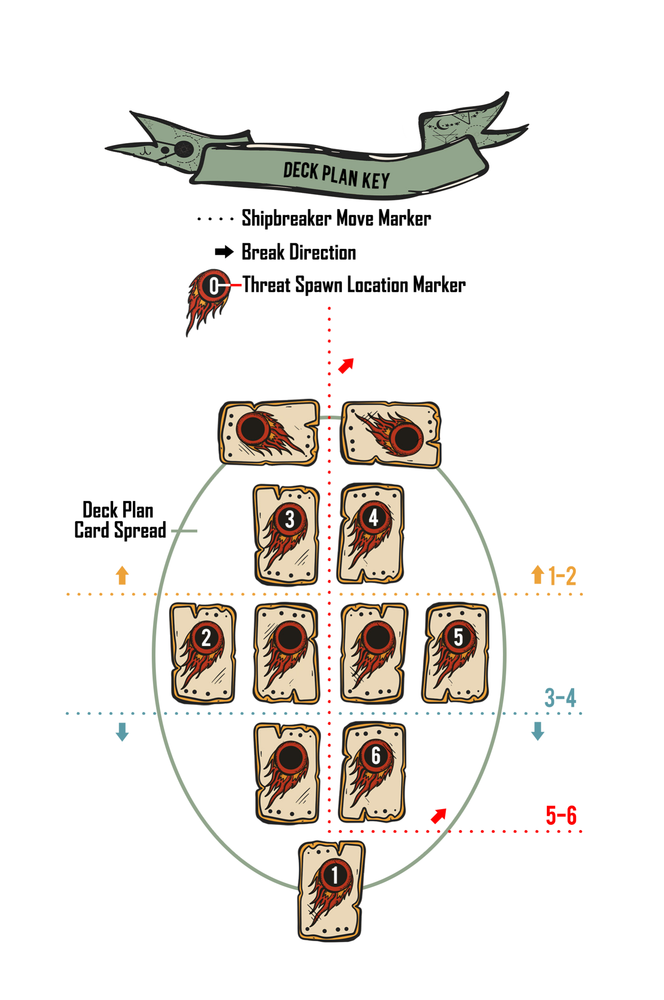
| 术语 | 用途说明 |
|---|---|
| 甲板规划图例（DECK PLAN KEY） | 整个图例的说明标题 |
| 拆船工移动标记（Shipbreaker Move Marker） | 表示玩家（拆船工）在甲板上的移动点位 |
| 拆解方向（Break Direction） | 指示飞船部件的拆解操作方向 |
| 威胁生成位置标记（Threat Spawn Location Marker） | 标记游戏中危险事件的出现位置（图中“0”为初始/示例标记） |
| 甲板规划卡牌布局（Deck Plan Card Spread） | 展示游戏卡牌在甲板区域的分布方式 |
飞船2
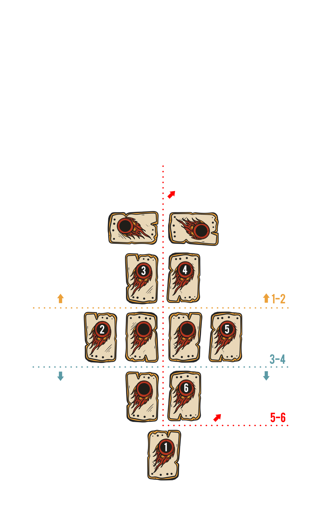
民用空间站“霍普号”（CIVILIAN STATION HOPPE）
等级1（Tier 1）
卡牌配置：10张+黑鬼牌（收益核心）
收益结算（PAYDAY）：4负载
目标飞船型号：民用级TRC17R型“追踪者号”（Tracer）
说明：人类民用R系列飞船是往返于协约国核心区域各空间站之间的廉价可靠交通工具。死亡地带中这类飞船数量繁多——要是有朝一日我们这些边缘地带的人被核心区域的权贵们纳入管辖，他们说不定会把这飞船的图案印上我们的旗帜呢。
飞船3
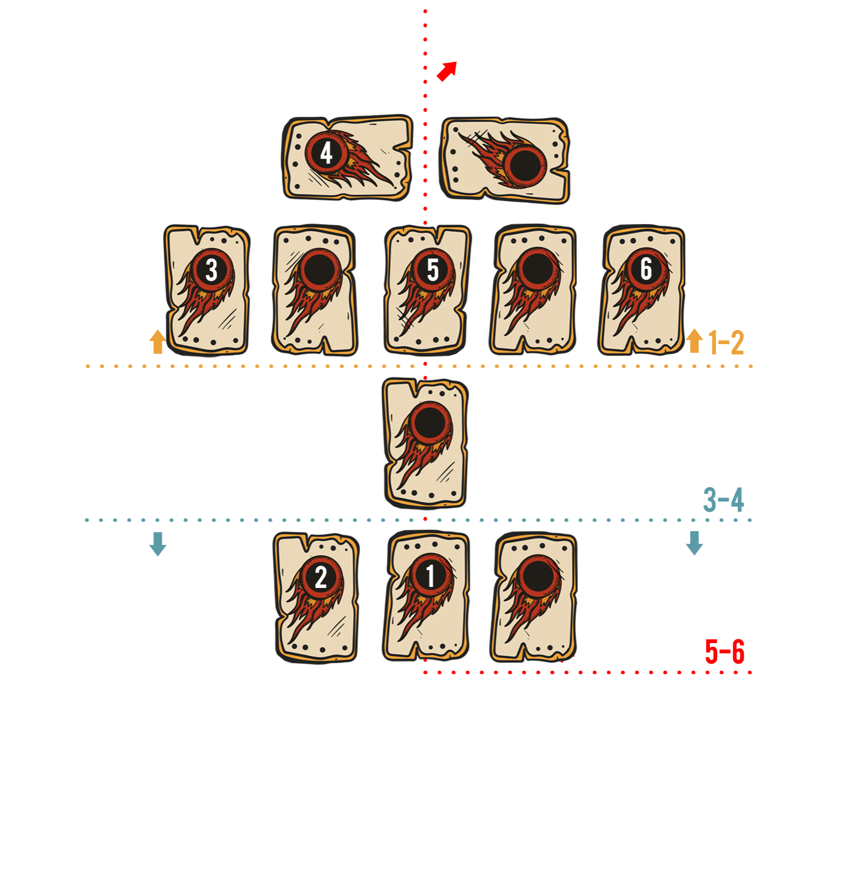
轻型货运飞船（LIGHT CARGO FREIGHTER）
等级1（Tier 1）
卡牌配置：10张+黑鬼牌（收益核心）（10 CARDS + BLACK JOKER // PAYDAY: 4 LOAD）
收益结算（PAYDAY）：4负载
目标飞船型号：商用级CM-23L型“骆驼号”（DESIGNATION: MERCHANT CLASS CM-23L "Camel"）
说明：民用商运L系列飞船说白了就是把驱动框架焊在中央脊骨上。货舱单元都是模块化的，靠电磁夹固定。这夹子用久了就爱出毛病，可得盯紧点。
飞船4
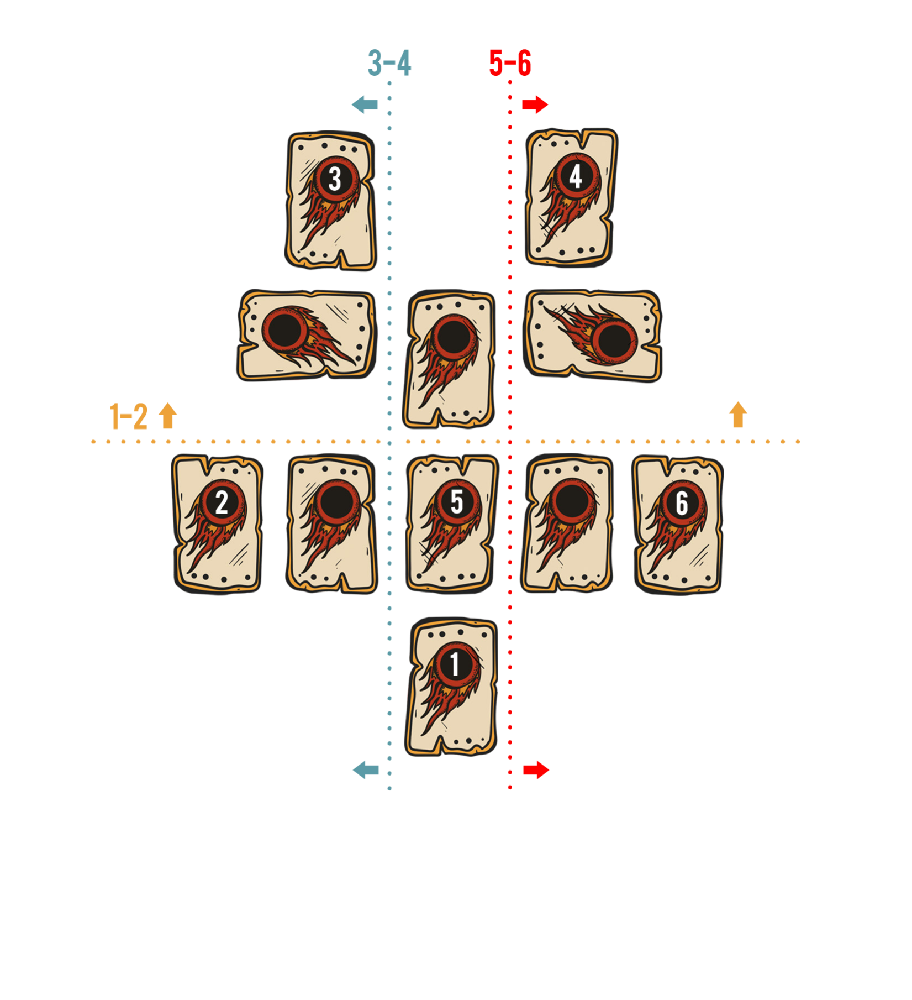
轻型民兵巡逻艇（LIGHT MILITIA PATROL CRAFT）
等级1（Tier 1）
卡牌配置：10张+黑鬼牌（收益核心）（10 CARDS + BLACK JOKER // PAYDAY: 4 LOAD）
收益结算（PAYDAY）：4负载
目标飞船型号：军用级SC/R-P10型“蝎子号”（DESIGNATION: MILITARY CLASS SC/R-P10 "Scorpion"）
说明：“蝎子”本是侦察舰，常被改作常规巡逻与维和任务用。它们最后的巡逻总会往这一带跑。这些老伙计见多识广，打交道可得小心点。
飞船5
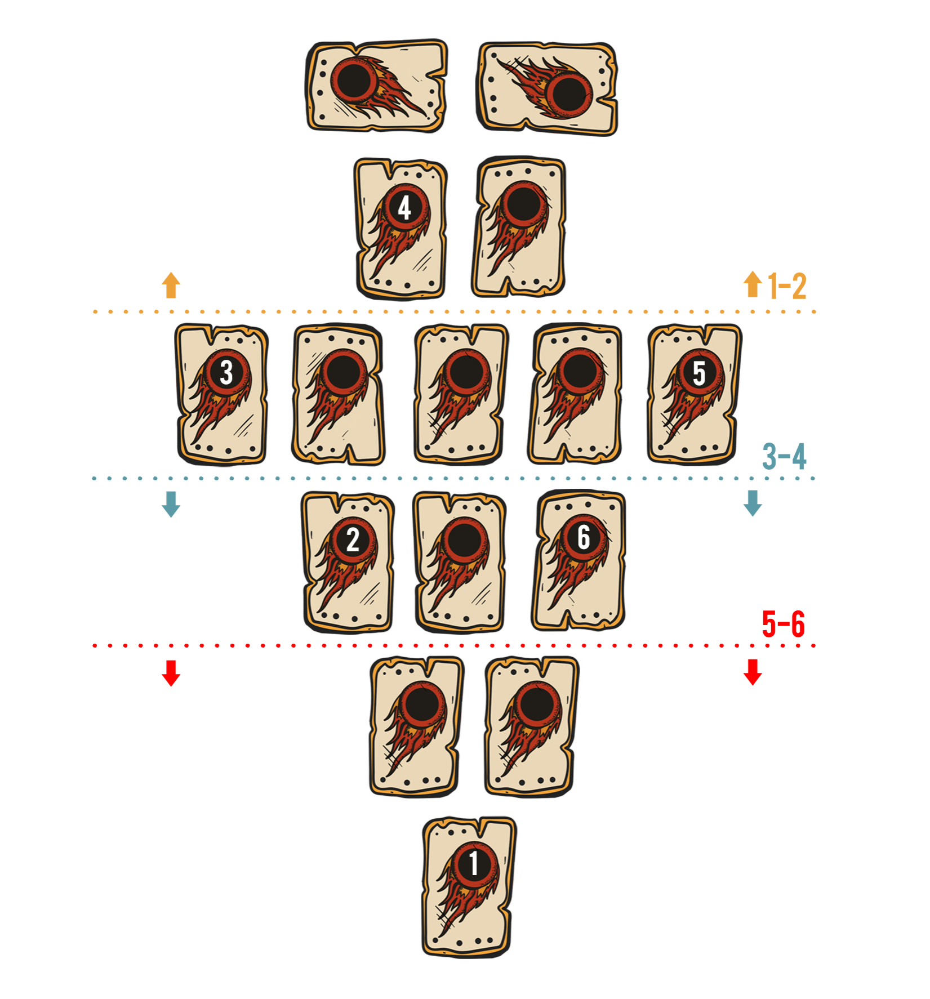
民用运输船（CIVILIAN TRANSPORT VESSEL）
等级2（Tier 2）
卡牌配置：14张+黑鬼牌（收益核心）（14 CARDS + BLACK JOKER // PAYDAY: 6 LOAD）
收益结算（PAYDAY）：6负载
目标飞船型号：民用级TRC-12K型“追踪者号”（DESIGNATION: CIVILIAN CLASS TRC-12K "Tracker"）
说明：人类民用K系列船配备了改进型驱动系统，还加了些舒适设施，能支撑更久的深空航行。问题主要出在这改进驱动的维修成本上——修不起的船最后往往就沦落到这一带了。
飞船6
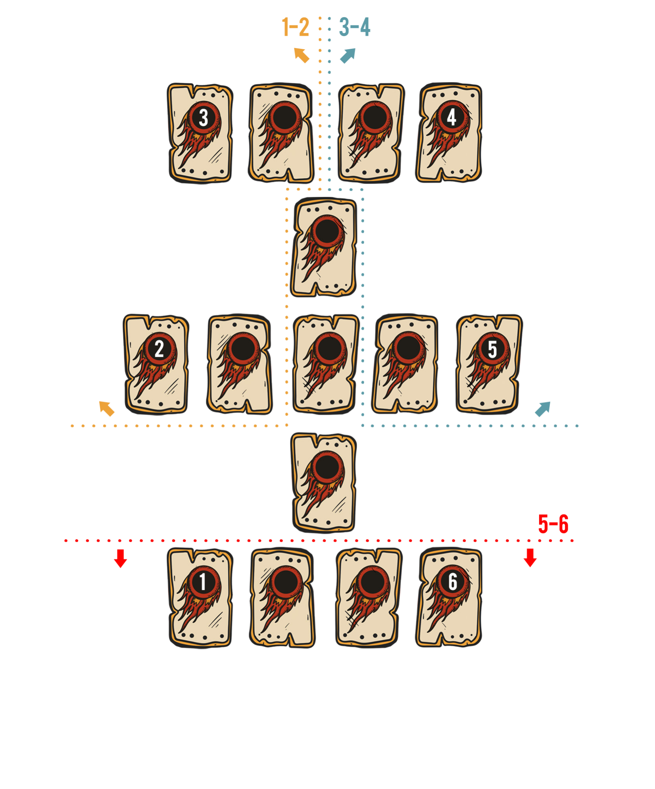
中型货运班轮（MEDIUM FREIGHTLINER）
等级2（Tier 2）
卡牌配置：14张+黑鬼牌（收益核心）（14 CARDS + BLACK JOKER // PAYDAY: 6 LOAD）
收益结算（PAYDAY）：6负载
目标飞船型号：商用级CM-42D型“准将号”（DESIGNATION: MERCHANT CLASS CM-42D "Commodore"）
说明：“准将号”继承了“骆驼号”的所有优势，还扩大了货舱、优化了布局，能以最少的船员安全完成航行。但这可不代表你（贝尔特人）能轻松安全地登船——小心那些夹缝区域。
飞船7
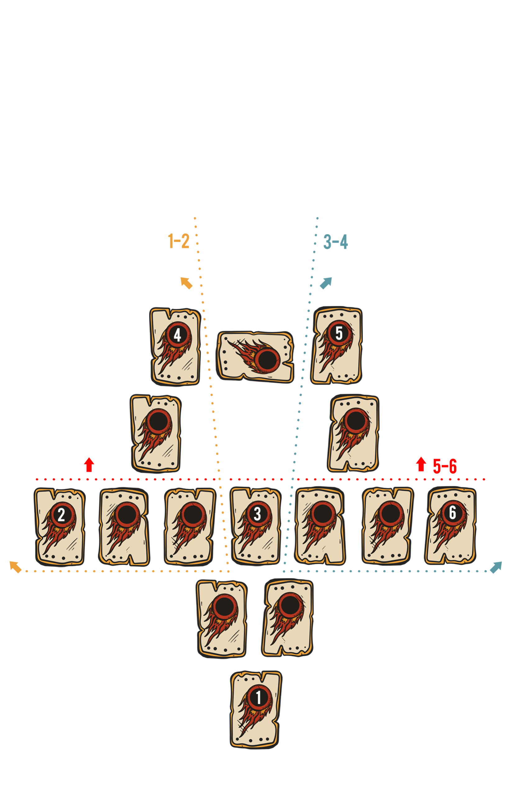
快速攻击护卫舰（FAST ATTACK CORVETTE）
等级2（Tier 2）
卡牌配置：14张+黑鬼牌（收益核心）（14 CARDS + BLACK JOKER // PAYDAY: 6 LOAD）
收益结算（PAYDAY）：6负载
目标飞船型号：军用级FA/R-31T型“雪貂号”（DESIGNATION: MILITARY CLASS FA/R-31T "Ferret"）
说明：别信协约国那些火箭小子的话。“雪貂号”是放大版的制空战斗机，曾是军用技术的顶尖代表。在统一战争中被打得够惨的那些，最后就被拖到这一带了。
飞船8
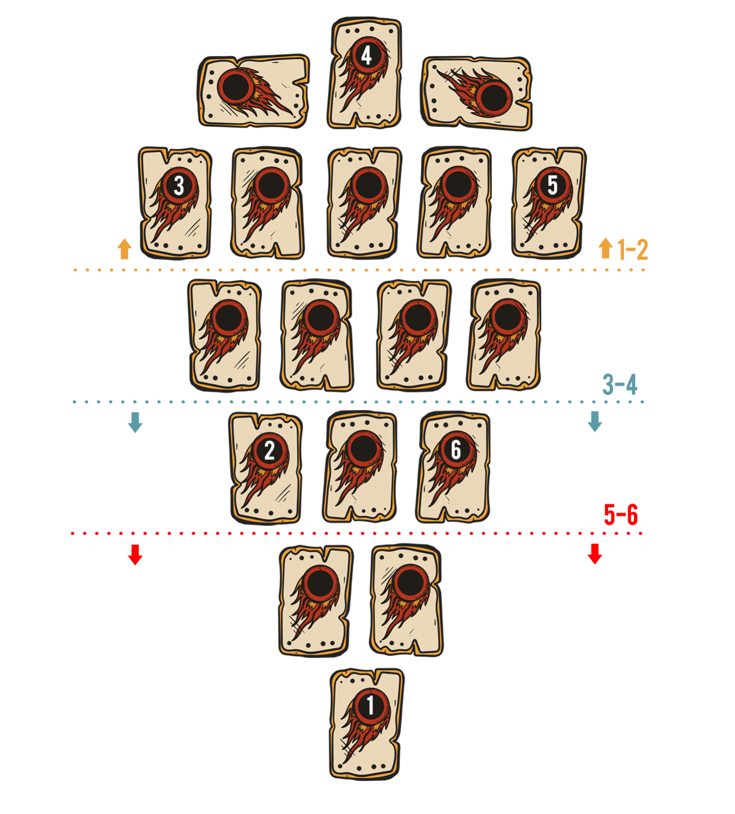
民用区域班轮（CIVILIAN SECTOR LINER）
等级3（Tier 3）
卡牌配置：17张+黑鬼牌（收益核心）（17 CARDS + BLACK JOKER // PAYDAY: 8 LOAD）
收益结算（PAYDAY）：8负载
目标飞船型号：民用级TRC-135S型“无痕号”（DESIGNATION: CIVILIAN CLASS TRC-135S "Traceless"）
说明：人类民用S级飞船外形流畅又亮眼，内饰奢华，就算在深空也能提供家一般的舒适。那宽敞的开放式甲板布局看着很诱人，但我跟你说，这只会带来另一类麻烦。
飞船9
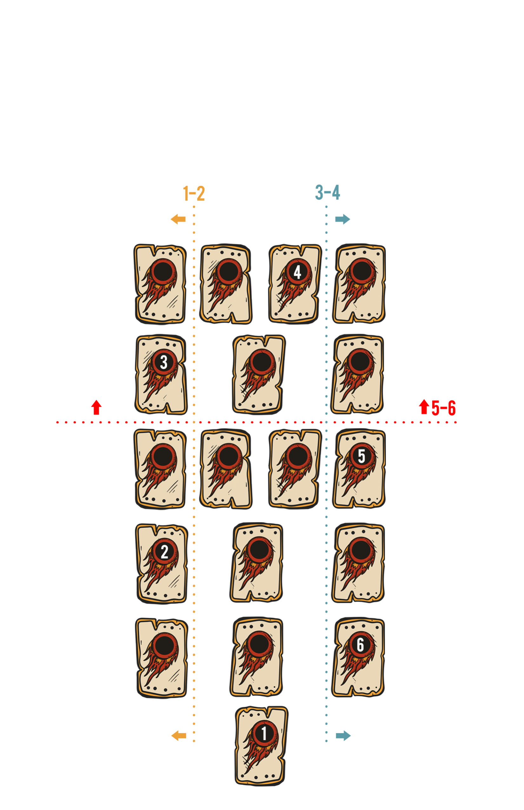
重型货运拖船（HEAVY FREIGHT HAULER）
等级3（Tier 3）
卡牌配置：17张+黑鬼牌（收益核心）（17 CARDS + BLACK JOKER // PAYDAY: 8 LOAD）
收益结算（PAYDAY）：8负载
目标飞船型号：商用级DM-D41R型“单峰驼号”（DESIGNATION: MERCHANT CLASS DM-D41R "Dromedary"）
说明：深空商运R型是艘老牌“巨兽”，协约国就是靠它一舱舱货物堆起来的。它和“骆驼号”是一路货色，就是多了几处“驼峰”。货舱夹是变大了，但靠谱程度一点没提升。
飞船10
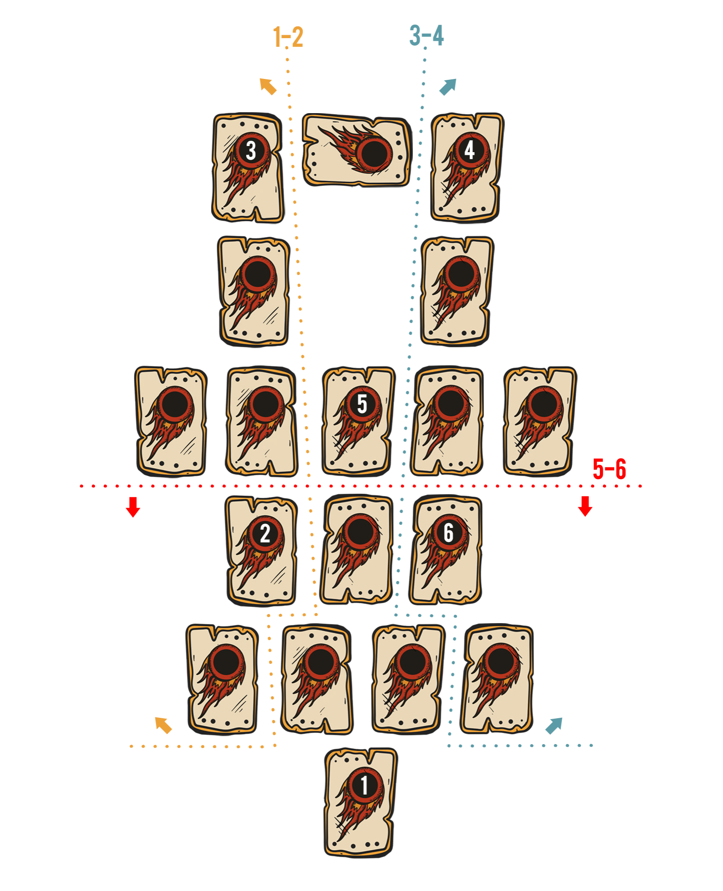
协约国驱逐舰（CONCORDAT DESTROYER）
等级3（Tier 3）
卡牌配置：17张+黑鬼牌（收益核心）（17 CARDS + BLACK JOKER // PAYDAY: 8 LOAD）
收益结算（PAYDAY）：8负载
目标飞船型号：军用级D/R-13G型“挽歌号”（DESIGNATION: MILITARY CLASS D/R-13G "Dirge"）
说明：这船以前被叫做“罐头里的战争”，但协约国的公关团队可不让这名字流传。“挽歌号”是一座飞行炮垒，能连续数周支援一支装甲枪骑兵部队和一整团协约国海军陆战队。
飞船11
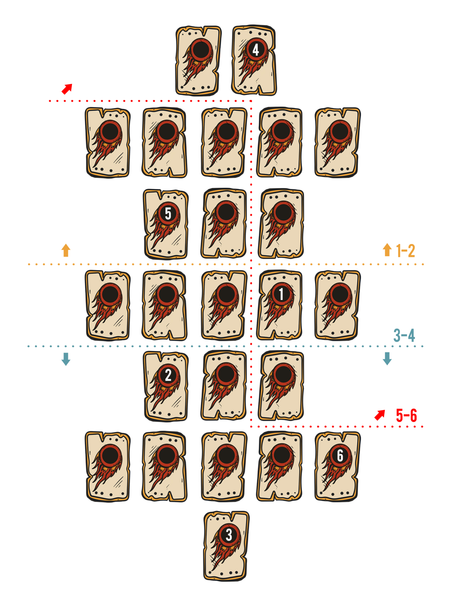
民用殖民驳船（CIVILIAN COLONY BARGE）
等级4（Tier 4）
卡牌配置：23张+黑鬼牌（收益核心）（23 CARDS + BLACK JOKER // PAYDAY: 10 LOAD）
收益结算（PAYDAY）：10负载
目标飞船型号：民用级TRC-H37型“火炬号”（DESIGNATION: CIVILIAN CLASS TRC-H37 "Torch"）
说明：贝尔特人，是“火炬号”驱散了黑暗。要是你不是在核心区出生的，那你兜里最后一个信用点都能赌——你的先辈能来到这未知深空，靠的就是“火炬号”的宽阔舱体和坚实船身。
飞船12
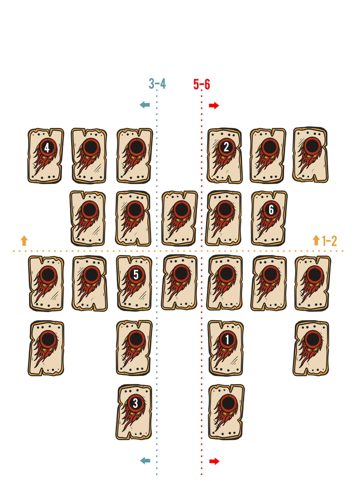
陋屋空间站建造船（SCOWHOUSE STATION CONSTRUCTOR）
等级4（Tier 4）
卡牌配置：23张+黑鬼牌（收益核心）（23 CARDS + BLACK JOKER // PAYDAY: 10 LOAD）
收益结算（PAYDAY）：10负载
目标飞船型号：商用级BS-W11W型“谷仓燕号”（DESIGNATION: MERCHANT CLASS BS-W11W "Barnswallow"）
说明：这是布莱特-施图姆韦尔联合机械公司的得意之作——“谷仓燕号”是一艘飞船运输舰，设计用途是运送建造人类浮动栖息地所需的全部物资与人员。外部侧翼有小型飞船舱，中央是巨大货舱，推力足以推动小型卫星。不过夹缝区域很多，别太贪心。
飞船13
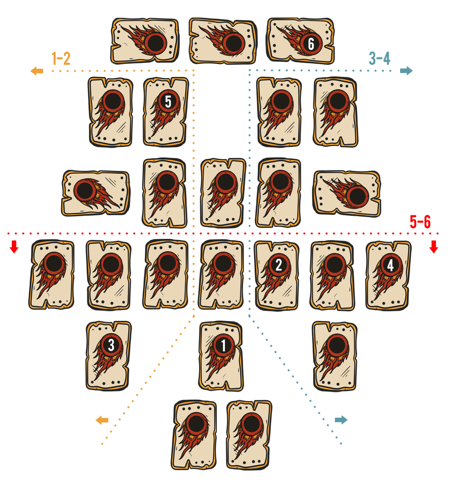
协约国重型护卫舰（CONCORDAT HEAVY FRIGATE）
等级4（Tier 4）
卡牌配置：23张+黑鬼牌（收益核心）（23 CARDS + BLACK JOKER // PAYDAY: 10 LOAD）
收益结算（PAYDAY）：10负载
目标飞船型号：军用级DL-T355型“无畏号”（DESIGNATION: MILITARY CLASS DL-T355 "Dauntless"）
说明：“无畏号”至今仍是协约国宣传里人类军事力量的瑰宝。统一战争中，不少该型号因战损被封存；后来新型“决斗者”舰服役（性能更强、速度更快、成本更低），剩下的就被丢到了贝尔特区域。但朋友，你现在踏上的可是死亡贝尔特的历史遗迹。
威胁（Threats）
这行的残酷现实是，事情并非总能顺利进行。有时候，即便你运气好、够努力，也无法避免麻烦——这就是你要面对“威胁”的时候。好消息是，很多拾荒者都曾从这类麻烦中脱身，活下来讲述自己的经历；坏消息是，更多人没能做到。
当你消耗最后1点勇气（或提示要求）时，掷1个六面骰子，根据下表生成对应的威胁，然后再掷1个六面骰子，确定威胁的初始位置（参考当前待拆飞船的甲板蓝图，蓝图中标有1 - 6的模块，即为威胁初始位置）。
威胁生成表
| 掷骰结果 | 威胁类型 | 详情页码 |
|---|---|---|
| 1 | 外星生物（The Alien） | 44 |
| 2 | 敌对拾荒者（Rival Scavengers） | 45 |
| 3 | 失控人工智能（Rogue AI） | 46 |
| 4 | 致命幽灵（Murderous Ghosts） | 47 |
| 5 | 残忍海盗（Merciless Pirates） | 48 |
| 6 | 纳米虫群（Nanite Swarm） | 49 |
用标记物标记威胁的位置。
每当你移动到一个新模块（检查氧气后），从剩余牌组顶部抽取1张牌，根据牌的花色，威胁会执行对应的行动（具体行动可在各威胁的详情页面查看）。
若飞船上同时存在多个活跃威胁，每个威胁需单独抽取1张牌，并独立行动。若任何一个威胁进入你所在的模块，或到达气闸，需按对应规则应对。
外星生物（The Alien）
在这片偏远地带发现的大多数生物，都还算容易应对——但这种生物除外。它有着几丁质外壳、利爪和尖牙，肯定是在这艘飞船停靠某个星球时偷偷溜上来的。不过，你能听到它在通风管里乱窜的声音，而且不难想象，它现在肯定很饿。
行动规则（根据抽取牌的花色）
| 牌的花色 | 行动 |
|---|---|
| 方块（Diamonds） | 向你所在方向移动2步 |
| 梅花（Clubs） | 向你所在方向移动1步 |
| 红桃（Hearts） | 出现在相邻的模块中 |
| 黑桃（Spades） | 向气闸方向移动1步 |
当外星生物与你处于同一模块时，掷1个六面骰子：
- 6：你躲过它的伏击，推倒周围的物品阻碍它，成功逃脱。
- 4 - 5：你成功脱身，但它紧追不舍——会跟随你进入下一个模块，你需再次掷骰。
- 1 - 3：你无法逃脱。抱歉，你被它吃了。
当外星生物到达气闸时，会找地方躲藏，等待你返回。当你回到气闸时，需执行与“外星生物和你处于同一模块”相同的规则，但需掷2个六面骰子，取较差的结果。
敌对拾荒者（Rival Scavengers）
贝尔特人，你看着像个靠谱的人——在这地方，靠谱的人可太少见了。不少贝尔特人会为了那些“肥得流油”的待拆飞船（Birds）跟你大打出手，而且现在似乎就有一群人盯上你了。保持警惕，赶在他们之前拿到你的收益（Payday）。
行动规则（根据抽取牌的花色）
| 牌的花色 | 行动 |
|---|---|
| 方块（Diamonds） | 向你所在方向移动2步 |
| 梅花（Clubs） | 向你所在方向移动1步 |
| 红桃（Hearts） | 清空他们当前所在模块（Module）内所有的战利品（Salvage）或补给（Supply），你无法再从该模块获取任何收益。 |
| 黑桃（Spades） | 向气闸方向移动1步 |
当敌对拾荒者与你处于同一模块时，掷一次六面骰子（d6）： - 6：你在他们发现你之前及时躲开。 - 4-5：你能脱身，但会有所损失。留下1单位负载（Load）；若你没有负载，则需检查氧气（Gas） - 1-3：他们强行把你押回你的飞船，并没收你收集到的所有战利品。
当敌对拾荒者抵达你的气闸时，会在你的飞船上安装追踪器。当你执行下一次打捞任务时，他们会在目的地等候（你对接飞船后，按常规流程掷骰确定他们在下次待拆飞船上的初始位置）。
失控人工智能（Rogue AI）
在我看来，人工智能（Artificial Intelligence）存在一个统一的核心问题：它是由人类设计的。这意味着，当我们把人类所有的傲慢、缺陷，以及对同类冷酷无情的可笑倾向塞进计算机后，这些特质只会变得更快速、更高效。贝尔特人，别相信任何带屏幕的东西。
行动规则（根据抽取牌的花色）
| 牌的花色 | 行动 |
|---|---|
| 方块（Diamonds） | 向你所在方向移动2步 |
| 梅花（Clubs） | 向你所在方向移动1步 |
| 红桃（Hearts） | 重置最近一个已清理的障碍（Barrier）或坏消息（Bad News）模块，将对应卡牌翻回正面朝下状态 |
| 黑桃（Spades） | 向气闸方向移动1步 |
当失控人工智能与你处于同一模块时，掷一次六面骰子（d6）： - 6：它嘲讽你，称你是“可悲的血肉之躯”，但暂时没有其他动作。 - 4-5：它用冰冷的机械目光盯着你。此后遇到所有“3级障碍”（3 Barrier）和“坏消息”模块，需掷两个六面骰子（2d6），取数值较低的结果作为最终结果。 - 1-3：它重置待拆飞船上所有“3级障碍”和1个“坏消息”模块，将所有已暴露的障碍物（Obstacles）翻回正面朝下状态。若你再次经过这些模块，需重新执行对应提示的操作。
当失控人工智能抵达你的气闸时，会入侵你的飞船。为防止它完全掌控飞船，你需要额外停机维修，维护费（Upkeep）增加3点。
致命幽灵（Murderous Ghosts）
你相信有鬼吗？也是，我猜你不信。但你肯定听过空间站里老油条们讲的那些故事：整船船员在太空中丧命，而他们的飞船里还萦绕着挥之不去的噩梦与绝望。我敢说，这些不过是光线的把戏，或是你宇航服里的环境重塑系统搞的鬼。但话说回来……说不定幽灵是相信你的存在的。
行动规则（根据抽取牌的花色）
| 牌的花色 | 行动 |
|---|---|
| 方块（Diamonds） | 向你所在方向移动2步 |
| 梅花（Clubs） | 向你所在方向移动1步 |
| 红桃（Hearts） | 引诱你向它靠近，你需向它的方向移动一步 |
| 黑桃（Spades） | 向气闸方向移动1步 |
当致命幽灵与你处于同一模块时，掷一次六面骰子（d6）： - 6：周围出现诡异现象，但你保持冷静，未受影响。 - 4-5：你必须立刻逃离这里。向与致命幽灵靠近方向相反的模块移动（或尽可能靠近相反方向的模块），之后需检查两次氧气。 - 1-3：逃离前，你的最大勇气值（Grit）永久减少1点。若没有与致命幽灵靠近方向相反的模块可供移动，则需进行太空行走（Spacewalk）。
当致命幽灵抵达你的气闸时，会彻底盘踞在那里。下次生成威胁（Threat）时，致命幽灵会一同出现，且初始位置就在你的气闸上。
残忍海盗（Merciless Pirates）
信不信由你，在死亡地带（Dead Belt）里，还有比拾荒更不光彩的赚钱方式。有些人就喜欢当“校园恶霸”，专抢那些没有还手之力的人。你听不到他们靠近的声音，但他们可能已经跟踪你很久了——对海盗来说，让拾荒者都知道自己是“稳定的收益来源”，算是一种“荣耀”。但即便如此，他们朝你开枪时，可不会手下留情。
行动规则（根据抽取牌的花色）
| 牌的花色 | 行动 |
|---|---|
| 方块（Diamonds） | 向你所在方向移动2步 |
| 梅花（Clubs） | 向你所在方向移动1步 |
| 红桃（Hearts） | 在他们当前所在模块设置致命陷阱，用标记物做好标记。若你进入该模块，会直接死亡 |
| 黑桃（Spades） | 向气闸方向移动1步 |
当残忍海盗与你处于同一模块时，掷一次六面骰子（d6）： - 6：他们还没发现你，赶紧离开。 - 4-5：他们用枪指着你，“友好”要求你把所有赚到的信用点（Cred）转账给他们，你需清空个人账户。 - 1-3：他们用枪指着你，“友好”要求你把所有赚到的信用点转账给他们，之后还会向你开枪。
当残忍海盗抵达你的气闸时，会从你的账户中抽取信用点——你每次在模块间移动，他们都会抽走1点信用点。直到你的账户为空，他们才会离开，但他们无法获取你的投资（Investments）资金。
纳米虫群（Nanite Swarm）
这是一群能自我复制的微型机器人，成千上万的“小家伙”聚在一起，像流动的沙丘。它们会分解一切类似原材料的物质，用来壮大自身规模。当它们寄生的飞船解体后，就会像鱼群一样，朝着下一个“食物源”漂移。无论是纳米碳装甲，还是你这种碳基生命体，在它们眼里没什么区别——所以最好赶紧行动，离它们越远越好。
行动规则（根据抽取牌的花色）
| 牌的花色 | 行动 |
|---|---|
| 方块（Diamonds） | 向你所在方向移动2步 |
| 梅花（Clubs） | 向你所在方向移动1步 |
| 红桃（Hearts） | 吞噬并摧毁它们当前所在的模块，移除该模块对应的卡牌，该区域变为空旷空间 |
| 黑桃（Spades） | 向气闸方向移动1步 |
当纳米虫群与你处于同一模块时，掷一次六面骰子（d6）： - 6：你在它们吞噬周围空间前，成功甩开了虫群。 - 4-5：你勉强逃离虫群，但会失去所有剩余的装备（Gear）；若你没有装备，则氧气等级提升1级。 - 1-3：虫群吞噬了整个模块，以及模块内的所有东西——包括你。
当纳米虫群抵达你的气闸时，会吞噬气闸，你的飞船也会随之被吞噬。若你购买了“穿梭机升级项”（Shuttle Upgrade），此时正是使用它的最佳时机。
信用点消费（Spend Cred）
拾荒者，任务完成了。你成功进入废弃飞船，保持冷静，搜寻物资，最终活着返回——现在，是时候享受辛勤工作的回报了。
你飞船货舱中每1点负载的物资，可兑换1点信用点，再加上途中可能获得的零散信用点——这些钱应该足够支付飞船维护费和物资补给了。
如果这点钱还不够，那你或许该考虑换个更赚钱的职业了——尤其是在你的飞船被扣押之后。或许可以去最近空间站的水培农场看看，他们总是需要人手。
激活升级项
购买升级项后，务必在飞船表上做标记，勾选“已激活”（Active），并将对应的维护费增加到总维护费中。或许不用我提醒你，但太空里的所有东西都需要维护。
停用升级项
你可以拥有升级项，但不激活它。在开始下一次打捞任务前，可选择停用升级项——停用的升级项无法使用，但下一次任务无需为其支付维护费。这在你资金紧张时很有用。
注意：若你从黑市购买了物品（详见第55页），别告诉我——但你要知道，非法物品（Illicit goods）无法停用。当然，就我而言，你并没有任何非法物品。
物资与服务（Goods and Services）
假设你已经还清了该还的钱，上次任务也赚了些信用点——你可能在想，这些新到手的财富该怎么用，对吧？拾荒者，别着急，看看下面的升级项表格，第52 - 55页有详细说明。
升级项表格
| 升级项 | 成本（信用点） | 维护费（信用点） |
|---|---|---|
| 备用零件（3个单位） | 1 | 0（一次性使用） |
| 勇气提升 | 3 | 0 |
| 装备补充 | 2 | 0 |
| 照明补充 | 3 | 0 |
| 负载提升 | 2 | 0 |
| 扫描仪 | 4 | 每级1 |
| 超控密钥 | 2 | 0（一次性使用） |
| 诱饵装置 | 3 | 0（一次性使用） |
| 应急氧气罐 | 2 | 0（一次性使用） |
| 应急净化器 | 4 | 0（一次性使用） |
| 长效呼吸器 | 6 | 0（一次性使用） |
| 基础备用资源库 | 5 | 1 |
| 豪华备用资源库 | 8 | 2 |
| 逃生套件 | 5 | 0（一次性使用） |
| 残骸登记册 | 8 | 1 |
| 广谱传感器 | 8 | 1 |
| 打捞债券 | 8 | 2 |
| 穿梭机 | 10 | 1 |
| 高级通讯器 | 4 | 1 |
| 投资 | 5 | -1（维护费降低1） |
升级项详情
备用组件（Spare Bits）
刷新你的装备，在飞船上预留更多所需物资用于补给（只要有空间）。花费1信用点（Cred），可兑换3个任意类型的资源：勇气值（Grit）、装备（Gear）、氧气（Gas）或能量（Glow）。
勇气值（Grit）
花点信用点打点关系，说不定能学到避开贝尔特区域危险处境的额外技巧。有些老贝尔特人愿意分享经验——只要你让他们觉得值。
装备（Gear）
更多实用工具：扳手、破解器、几根焊枪、跳线、磁偏转器、线路补丁，颜色五花八门。
能量（Glow）
多备几块电池给你的全光谱手电（OmniFlash）。与其诅咒黑暗，不如点亮蜡烛，对吧？
负载（Load）
背包暂时够用，但只要宇航服还有空位、行动时不会叮当作响，就能多塞个 pouch 或挎包。少跑几趟气闸，贝尔特人才能省心。
扫描仪（Scanner）
包含窄束谐振器、电磁光谱分析仪，以及付费订阅的飞船注册数据库。能在对接气闸前检查模块——缺点是无法接入飞船供电，可能是反馈干扰问题，也可能只是想卖你电池。每次出任务时，每升一级扫描仪，可检查1个模块。
覆盖密钥（Override Key）
被锁在模块外却急需通过？这是内置启发式绕过算法与硬编码安全覆盖子程序的电子卡，能强行打开封锁，但仅能使用一次。
诱饵装置（Crybaby）
有敌人紧追不舍？启动这个噪音盒并扔出去，它会模拟贝尔特人的动静（连咒骂都惟妙惟肖），敌人会朝它移动而非你。可将诱饵扔进相邻模块，敌人抵达该模块后会重新追杀你。
应急氧气瓶（Deadman Cylinder）
看到氧气调节器不妙？这是最低标准的生存装备，氧气量刚好够你回到气闸。可安全通过1个模块，无需检查氧气。
应急净化器（Emergency Scrubber）
在大型飞船上拾荒时，氧气会骤降。若在气闸远端操作棘手面板，这个碳净化器能延长空气清洁时间，让你走完最后几步。可安全通过3个模块，无需检查氧气。
长效呼吸器（Outlast Deepbreather）
太空求生的顶尖科技：氧气红线时，将巨针插入宇航服化学接口，让二氧化碳净化纳米机器人给组织供氧（分解快，应该没后遗症）。可安全通过5个模块，无需检查氧气。
备用资源库扩容（Spares Bank Expansion）
靠谱的贝尔特人总会需要更多资源存储空间来接大活（不含资源本身）： - 扩容1（经典款）：可额外携带5装备、5勇气值、5氧气 - 扩容2（豪华款）：可额外携带8装备、8勇气值、8氧气
逃生套件（Egress Kit）
计划常出岔子，这是我们这行的常态——拆开真空密封的“悲剧罐头”换收益。但情况太糟时，就得开溜：用逃生套件破洞脱身，或在太空漂移时推进回气闸。代价是无法带走任何东西，清空物品，留得小命下次拾荒。
残骸注册表（Wreck Registry）
像贝尔特区域废弃飞船的“藏宝图”，帮你更容易找到目标飞船。用注册表掷骰选飞船等级时，调整为： 1-2：等级1 3-4：等级2 5-6：等级3
残骸注册表宽频传感器（Broadpass Sensors for the Wreck Registry）
最糟的是赶到残骸却发现已被洗劫。宽频扫描能锁定最“肥”的目标，需配合注册表使用。两者同时生效时，掷骰选飞船等级调整为： 1：等级1 2-3：等级2 4-6：等级3
协约国首都打捞债券（Concordat Capital Salvage Bond）
需存活过任意等级3飞船并带回收益，解锁等级4协约国首都飞船。 这是“大联盟”：你熬过足够多太空残骸，获得“职业”机会。债券不便宜，但能让你合法进入等级4巨型太空残骸拾荒（或送命）。生效时，配合宽频传感器掷骰选飞船等级调整为： 1：等级2 2-3：等级3 4-6：等级4
穿梭机（Shuttle）
致命残骸上一个逃生点不够？再来一个！停靠主船后，可将穿梭机部署到另一位置（自己或搭档驾驶，若有），还附带5负载货舱。
[合作模式] 强化通讯器（Improved Comms）
带屏幕的高级货：搭档遇到麻烦时，你可检查氧气并额外给1个d6让其掷骰解决问题（效果同消耗装备），取较高结果，最低为4/5档结果。
黑市
-... .-.. .- -.-. -.- / -- .- .-. -.- . -（摩斯电码：“ALCORN”） [注] 违禁品不可出售或停用，维护费含“隐瞒成本”，紧急时可丢弃以减负。
[违禁] 巨型飞镖枪（Big Frickin’ Dart Gun）
[成本6信用点][维护费2] 简称BFDG，官方不承认其存在，本用于猎杀“不存在的目标”。装填“大型猎物麻痹剂”（非异种专用，成本3信用点），可瘫痪进入模块的外星威胁；也能对付海盗或敌对拾荒者——别说是我（老查里奥特）说的。
[违禁] 神偷盒（Crackerjack）
[成本6信用点][维护费2] 预装代码能碾压协约国系统，插端口可一键关闭失控AI，也能让纳米虫群失效。你真不该有这东西，对吧？
合作模式与对抗模式（Co-op and Rivalry）
创建两名拾荒者：
- 合作模式（Co-op）：两人共用一艘飞船，共同承担维护费；
- 对抗模式（Rivalry）：每人各有一艘飞船。
- 合作模式：需还清所有债务才能“退休”，获得胜利；
- 对抗模式：目标是比对手活得更久，或先“退休”，即为胜利。
每次任务后，别忘了交换指引手册！
合作模式和对抗模式的玩法与单人模式类似，但有以下调整：
合作模式回合规则
- 回合顺序：掷骰决定谁先行动，之后轮流行动。你的回合中，可扫描模块、部署气闸，或进入废弃飞船的新模块。
- 回合操作：你的回合中，可移动到1个新模块，并按提示执行互动；也可选择“推进”、消耗照明，或执行1次合作行动（同伴供氧、通讯支援、高级通讯支援），具体可自行决定。回合中，需大声朗读并回应每个新模块的提示。回合结束后，告知同伴该他们行动了。
- 同伴供氧（Buddy Breathe）：只要你们一起在模块间移动，就可以共用一个氧气罐。使用自己氧气罐的人，在进入新模块时，需检查2次氧气（只要还在共用氧气，就需如此）。
- 通讯支援（Comms）：同伴遇到麻烦了？检查氧气，花点时间通过通讯器指导他们——可将同伴当前的掷骰结果从“失败”转为“部分成功”（效果等同于他们消耗1点勇气）。
- 守住气闸（Hold the Door!）：只要有一人成功打开气闸，就能保持气闸开启。等待同伴时，每回合仍需正常检查氧气；同伴到达后，无需执行气闸操作。
对抗模式回合规则
- 回合顺序：两人各掷1个六面骰子，点数高的一方可先使用扫描仪或部署气闸。扫描（或使用照明查看）时，只需自己查看模块内容，无需展示给对手。之后，另一方可扫描或部署气闸。一旦部署好气闸，下一回合即可进入模块——即便对手仍在扫描。
- 特殊规则（Devil’s in the Details）：若只有一名玩家拥有“残骸登记册”或更高级的升级项，并用于定位待拆飞船，则该玩家先行动。
- 回合操作：你的回合中，可移动到1个新模块，并按提示执行互动；也可选择“推进”牌，或执行1次对抗行动（破坏、士气打击、干扰），具体可自行决定。回合中，需大声朗读并回应每个提示。回合结束后，告知对手该他们行动了。
- 干扰气闸（Tamper）：到达对手的气闸旁，消耗2点装备，卡住对手的气闸门。对手到达气闸模块后，需先检查2次氧气，才能执行气闸操作。
- 设置障碍（Sabotage）：消耗2点装备，在你当前所在的模块中设置一个危险路障——你自己无法再通过这个模块，对手也一样。
- 士气打击（Demoralize）：检查氧气，通过附近的通讯器辱骂对手，打击其士气。当你被士气打击时，掷1个六面骰子：
- 6：嘿，骂得还挺有意思。反而获得1点勇气。
- 4 - 5：听过更难听的。关掉通讯器，继续工作。
- 1 - 3：真是个混蛋。失去1点勇气。
结语
拾荒者，该说的都已经说了。
你现在掌握了在围绕“人马座A星”（那个吞噬一切的黑洞）旋转的地球协约国废弃飞船中“寻宝”所需的全部知识。
地球协约国的安全禁区已被你抛在身后，头顶上盘旋的危险暂时会在零重力环境中停留，而前方有无数机会等着你。
要知道，很多在这里的废弃飞船，最初启航时，船上的人都坚信能在死亡地带找到财富。他们或许满脑子都是有用的建议，即便没有，至少也有无线电里友善的声音，指导他们绕过难关……
我有点啰嗦了。毕竟，这里太孤独了，有时候能有人说说话也挺好。但别写悼词，别多愁善感。看好你的氧气，留意身后，紧盯目标。
敬那些老手（Old Hats）。
是他们用汗水、辛劳，以及对糟糕想法的执着（不撞南墙不回头，直到想法变好），铸就了这片死亡地带。
游戏流程
准备阶段
- 掷1个六面骰子，确定下一艘待拆飞船的等级；再掷1个六面骰子，确定飞船类型（详见第22 - 23页）。
- 根据“待拆飞船”部分（第30 - 42页）对应的甲板蓝图，布置游戏区域。
- 在待拆飞船的任意一个模块上部署气闸，开始探索。
打捞阶段
- 进入模块时，掷1个六面骰子检查氧气。根据需要，从1 - 6的范围中缩小“成功区间”（即扩大失败区间）。提醒：当失败区间扩大到6时，氧气耗尽，你将在太空中死亡。
- 可消耗照明，在进入相邻模块前，查看该模块的花色。
- 查看指引系统，根据模块提示行动：
- 应对提示时，可消耗装备，掷2个六面骰子，取较好结果。
- 可消耗勇气，将失败的掷骰结果（1 - 3）转为部分成功（4 - 5）。
- 提醒：消耗最后1点勇气时，会触发威胁。
- 遇到红色牌模块（战利品或补给）时，可使用“推进”机制（详见第29页），争取更好收益（或面临更糟情况）。
- 尽可能多收集战利品，记住：你一次只能携带不超过“负载上限”的物资。在角色表上，务必区分“补给”和“战利品”。
- 返回气闸，执行气闸操作，将负载转为货舱物资（详见第27页）。
- 提醒：只有拥有“备用资源库升级项”且有空闲空间时，才能存放补给资源。补给对生存至关重要，但无法直接转化为货舱物资（即不能兑换信用点）。
额外提醒
- 打捞商船时，无论是否找到收益核心，离开时都能获得“飞船等级数”的额外信用点。
- 打捞军船时，所有“2级补给”模块，在正常结果基础上额外+1补给。
重复步骤4 - 7，直到你准备（或被迫）撤离，或死亡。
休整阶段
- 将储存的货舱物资按1:1的比例兑换为信用点。
- 执行银行掷骰：根据结果，可能计算债务复利，或可选择接受“信贷”（详见第20 - 21页）。
- 支付维护费。
- 偿还债务或购买物资：可购买任意感兴趣的升级项，或进行投资以降低未来的维护费。
重复步骤1 - 11，直到你还清所有债务、投资达到最大额度，成功“击败系统”。到那时，拾荒者，回顾一下你的人生目标——如果你还活着，那你就已经实现了它（详见第11 - 17页各职业的人生目标）。
指引手册A
- 当前位置 ............................................................. 01
- 战利品 .................................................................... 02-03
- 障碍 .................................................................. 04-05
- 补给 ..................................................................... 06-07
- 坏消息 ................................................................. 08-11
- 捷径 ............................................................... 12
战利品(方块)
嘿，看啊，有战利品！
这些零碎玩意儿，你可以搜刮下来卖掉。找到战利品后，对比它的负载值和你剩余的负载空间——能装下就最好；装不下也没关系，大不了多跑几趟。
- 方块A：纪念品与珍宝（Keepsakes and Treasures）——有意思的是，那些曾把这里当家的人，最后留下的就只有这些小玩意儿了，不是吗？不过别为他们写悼词，毕竟废品商可不吃“情怀”这一套。负载：1
- 方块2：武器库（Arms Locker）——要是这世界能更开明些，我们根本不需要这些东西。但现实并非如此，所以武器库还是有用的。负载：2
- 方块3：应急口粮包（Packed Rats/S-Rats）——这些真空密封的口粮包，保质期长达120年，含有维生素、氨基酸、蛋白质和免疫增强剂，味道还算能接受。负载：2
- 方块4：平板与屏幕（Slates and Screens）——拾荒者，这玩意儿的好处就在于，你只要拆几个螺栓、拔几根线，就能把它搬走。负载：4
- 方块5：连接器与配件（Connectors and Fittings）——你知道吗？让这些老飞船能飞起来的配件，大多是金或铂做的。负载：2
- 方块6：普通零件（Nothin’ Parts）——这些不起眼的小零件，是维持飞船运转的关键。攒够一定数量，就能卖笔不错的钱。负载：1
- 方块7：厨房物资（Galley Supplies）——新鲜食物肯定早就没了，但烤箱、灶台这类厨具，还是能换点信用点的。虽然不风光，但好歹是笔收入。负载：5
- 方块8：生存装备（Survival Gear）——包括抗恶劣天气装备、应急避难所和各类工具。这些都是好东西，就是有点占地方，但绝对值得带。负载：4
- 方块9：无害违禁品（Harmless Contraband）——说真的，要是地球协约国愿意把这东西合法化，他们能赚翻。可惜他们不这么做，走私者才有机会赚钱——算他们倒霉，便宜你了。负载：2
- 方块10：医疗物资（Medical supplies）——包括手术设备、抗生素、药品、药膏等。在这片边境地带，这类物资总是很快就能卖出去。负载：5
- 方块J：现金（Hard Cred and Plenty of It）——星星照耀着这堆硬通货啊，拾荒者！不用经过中间商，也不用偷偷摸摸交易，就这么直接揣走，全是你的。负载：4
- 方块Q：完好的穿梭机（Intact Shuttle）——很少见有人会把穿梭机留下，哪怕是引擎坏了的也少见。说不定这玩意儿闹鬼呢。负载：0 / 价值：6信用点——任务结束时，需从你的飞船进行一次太空行走，才能把它拖回去。
- 方块K：稀有物品（What’s This Doing Out Here?）——这东西可不多见，说不定你这辈子都就见这一次。现在问题是，怎么把它弄出去。负载：8
障碍(梅花)
遇到障碍时，掷1个六面骰子：
- 6：成功通过障碍，后续仍可从这里通行。
- 4-5：冒险尝试一次就够了，通过后这个模块就会变成死胡同。将卡牌旋转45度，标记为“无法通行”。
- 1-3：无法通过，返回上一个模块，另寻路线。将卡牌旋转45度，标记为“无法通行”。
障碍类型详情
- 梅花A：卡住的舱门（Jammed Hatch）——标准STD MK III型虹膜式舱壁，正常情况下能开能关，但这一个肯定是廉价货，怎么推都推不动。
- 梅花2：焊死的舱门（Welded Shut）——不知道他们为什么要这么做，但这个舱室确实被焊得严严实实。得用工具撬开才行。
- 梅花3：堆满货物的通道（Stacked to the Rafters）——拾荒者，这里全是箱子，密密麻麻的，根本没什么别的东西，想过去可不容易。
- 梅花4：泄漏的冷却液（Venting Coolant）——这“蓝色奇迹”（Blue Wonder）能让反应堆、引擎歧管和各类电子元件保持低温，但凡事都有两面性——一旦它流到不该流的地方，能把你冻成冰块。
- 梅花5：辐射模块（Irradiated Module）——拾荒者，听到滴答声了吗？那是你的盖革计数器在响，辐射剂量正在上升——这也是你的倒计时声，得赶紧通过这里。
- 梅花6：无重力模块（Gravless Module）——是不是感觉变轻了？这个舱室的人工重力系统坏了，所有东西都在漂浮。想过去得有点技巧，要是有危险物品飘在里面，那就更麻烦了。
- 梅花7：变形模块（Buckled Module）——真空环境对这些老飞船可不友好。看起来，这个舱室在失压时被压变形了，想过去得挤一挤。
- 梅花8：被淹没的模块（Flooded Module）——水管肯定爆了个大裂口，不然他们也不会把这里当水族馆用。开门的时候可得小心。
- 梅花9：电弧 wires（Arcing Wires）——噼啪作响，火花四溅，世界还在运转。这些磨损的铜线和炽热的钨丝正在漏电、产生电弧，能不碰就不碰。
- 梅花10：遍地尸体（So Many Bodies）——这可不太妙。是急救舱？枪战现场？还是瘟疫爆发地？小心脚下，也留意四周——这地方闹鬼。
- 梅花J：酸性烟雾（Acidic Fume）——闻到了吗？当然没闻到，再等等就有感觉了。或者还是别等了——那烟雾正在腐蚀你的防护服，要是烧穿了，这会是你最后一次闻到味道。
- 梅花Q：危险货物（Hazardous Cargo）——警告标志可真不少。是高能炸药？腐蚀性物质？还是生物危害品？我都看不懂那个标志，但上面画了好多骷髅头。拾荒者，千万别碰那些东西。
- 梅花K：通向太空的缺口（Open to Space）——这个舱室的一大块已经没了，估计是掉在太空里飘走了。现在轮到你飘过去了——别真飘走了啊。先进行太空行走，然后把这张卡牌从甲板蓝图中移除。
补给：可依靠的物资(红心)
遇到补给时，掷1个六面骰子：
- 6：获得2个标记的补给单位。
- 4-5：获得1个标记的补给单位。
- 1-3：这里已经没什么能给你的了。
补给类型详情
- 红心A：临时工具（Make it Work）——有一些备用零件和应急解决方案，虽然不是最合适的工具，但至少能派上用场。（对应资源：装备）
- 红心2：慰藉物品（Good times）——这里有曾有人生活过的痕迹，让你想起自己的家。（对应资源：勇气）
- 红心3：应急氧气包（Bug-Out Bag）——这E-220便携式氧气瓶，是为应对失压事故准备的。拾荒者，吸口气，放松点。（对应资源：氧气）
- 红心4：报废电脑（Blown-Out Computer）——普通拾荒者看到坏了的控制台，只会觉得少赚了一笔；但你我都知道，这堆废铁里藏着解决麻烦的办法。（对应资源：装备）
- 红心5： morale 柜（Morale Cabinet）——这瓶酒在飞船被拖到死亡地带时，就已经很老了。但即便如此，喝一口还是能让人精神一振。（对应资源：勇气）
- 红心6：备用氧气（Spare Air）——有人说，不能长时间让氧气罐处于高压状态，容易开裂。但这个应急氧气瓶，看起来还挺结实。（对应资源：氧气）
- 红心7：拆解的导管（Stripped Conduit）——这面墙的这一部分已经破损不堪，但对精明的拾荒者来说，这反而更容易拿到需要的东西。（对应资源：装备）
- 红心8：熟悉的布局（Familiar Layout）——转过那个拐角时，你下意识就理清了这里的结构，对吧？你对这类飞船很熟悉，见过太多了。打起精神来，你能行。（对应资源：勇气）
- 红心9：剩余氧气（Last Gasps）——这里有个便携式氧气瓶的充电接口，可能快没气了，但说不定还能搜刮到一点氧气。（对应资源：氧气）
- 红心10：喘口气（Catch Your Breath）——拾荒者，歇会儿吧。这活儿太累人了，很容易让人慌了神。氧气还能撑一会儿。（对应资源：勇气）
- 红心J：备用零件库（Spares Lock-up）——嘿，拾荒者！中奖了！这个储物间里全是备用零件和设备，你需要的东西很可能就在这儿。（对应资源：装备）
- 红心Q：水分解器（H₂O Cracker）——拾荒者，这可是飞船的“心脏”，或者说是船员的“心脏”。它能把水分解成氧气和燃料，接上管子，深呼吸吧。（对应资源：氧气）
- 红心K：安全区域（A Safe Space）——你看，拾荒者。要是闭上眼睛，忘了飞船的其他部分，这里看起来还像个正常的船舱。放下担子，把门闩好，歇会儿吧。（对应资源：勇气或氧气，可自选）
坏消息：麻烦与挫折，谨慎应对(黑桃)
- 黑桃A：即将发生的船体破裂（Imminent Hull Breach）——要知道，自然界厌恶真空。要是这飞船的船体发出这种尖叫，说明它也很不喜欢现在的状况。赶紧行动，不然整个舱室都会裂开，你就得“游”进太空了。掷1个六面骰子：
- 6：避开麻烦，赶紧通过。
- 4-5：你能修好它，但需要时间或零件。消耗1点装备，或在修理过程中检查氧气。
- 1-3：船体破裂，你被吸进太空，需进行太空行走返回。
- 黑桃2：陷阱装置（Booby Trapped）——你听到咔嗒声了吗？那是绊线吗？谁会在自己的飞船上装绊线啊？
没事的，拾荒者，保持冷静就好。掷1个六面骰子：- 6：留意脚下，继续前进。
- 4-5：你能拆除这个陷阱，但需要时间或零件。消耗1点装备，或检查氧气。
- 1-3：陷阱触发，你死亡。
- 黑桃3：系统锁定（System Lockout）——致命错误（Fatal Error）、终端异常（Terminal Exception）、系统缓存清除（System Cache Purge）。中止（Abort）、重试（Retry）、失败（Fail）？真是见鬼，就没一件顺利的事。掷1个六面骰子：
- 6：温柔地跟电脑“说好话”，成功绕过锁定。
- 4-5：你能重新路由，但需要时间或零件。消耗1点装备，或检查氧气。
- 1-3：锁定导致系统冻结，所有补给模块在“成功”（掷出6）时仅能获得1个资源单位，“部分成功”（掷出4-5）时无资源。
- 黑桃4：灯光熄灭（Lights Go Out）——你的手电筒还亮着吗？所有照明设备都熄灭了，现在你得在黑暗里行动。掷1个六面骰子：
- 6：重新路由电源，打开应急灯。
- 4-5：你能临时修好，但需要时间或零件。消耗1点照明，或检查氧气。
- 1-3：若你没有剩余照明，在探索模块时需掷2个六面骰子，取较差结果。
- 黑桃5：主动传感器探测（Active Sensor Ping）——刚才是不是感觉牙都在震？肯定是有人用定向波束扫描了这里，他们现在很可能知道你在这儿了。掷1个六面骰子：
- 6：他们只是路过。
- 4-5：“秃鹫帮”（Vulture gang）要分一杯羹，本次任务的维护费+1。
- 1-3：合法打捞者没收你的战利品，你失去所有货舱物资。
- 黑桃6：被附身的纪念品（Possessed Keepsakes）——听到了吗？好像是音乐盒响了，还是别的什么声音？掷1个六面骰子：
- 6：今天可没功夫陪你玩，撒旦。盖上盖子，继续干活。
- 4-5：得花点时间找到那玩意儿，让它别再发出那种诡异的叫声。检查氧气或消耗1点照明。
- 1-3：有东西一直在等你，按正常规则在飞船上生成“致命幽灵”威胁。
- 黑桃7：末日日志（Apocalyptic Log）——这里有个飞船日志，语音记录正在播放。里面……大部分都是尖叫声。好吧，这可不妙。掷1个六面骰子：
- 6：关掉声音。
- 4-5：消耗1点勇气，或检查氧气。
- 1-3：日志内容让你心神不宁，返回气闸，结束本次任务——这地方闹鬼。
- 黑桃8：生物识别激活（Biometrics Engage）——授权用户模块刚刚启动了，想让门乖乖打开，恐怕得费点劲。掷1个六面骰子：
- 6：伪造访问权限，让系统安静下来。
- 4-5：你得找 workaround（应急方案），移动会受影响，检查氧气。
- 1-3：掷2个六面骰子，取较差结果，用于探索障碍和坏消息模块。
- 黑桃9：紧急警报（Emergency Klaxons）——红灯亮起，警报声响起，同时传来冷静的合成语音，提示你前往逃生舱。拾荒者，你碰了什么不该碰的东西？掷1个六面骰子：
- 6：轻松解决，切断导线，继续工作。
- 4-5：消耗1点勇气，或在尝试关闭警报时检查氧气。
- 1-3：引起不必要的注意，生成1个威胁；若已有威胁，威胁会出现在你当前所在的模块。
- 黑桃10：被搜刮过的模块（Picked Over）——拾荒者，你可不是第一个来这儿的。看起来已经有人翻过人这些废品了，说不定最值钱的东西已经被拿走了。掷1个六面骰子：
- 6：都是些外行，这里还有不少好东西。
- 4-5：至少值钱的部分还在，所有额外战利品的价值减半（向上取整）。
- 1-3：已经被搜刮一空了。要是还没找到收益核心，那它要么不见了，要么已经报废，再也找不到额外战利品了。
- 黑桃J：重力系统故障（Grav System Fails）——人工重力系统出问题了。飘一会儿，想想这会给后续工作带来多大麻烦吧。掷1个六面骰子：
- 6：虽然不太理想，但踢一脚说不定就好了。
- 4-5：你能修好它，就是得花点时间。消耗1点装备，或检查氧气。
- 1-3：在所有模块间移动时，需检查2次氧气。
- 黑桃Q：推进器启动（Thrusters Fire）——飞船要是想把你甩下去，会发出一种特殊的嗡嗡声，你从靴底能感觉到，对吧？抓稳点，拾荒者，说不定要“兜风”了。掷1个六面骰子：
- 6：你早有准备，继续前进。
- 4-5：抓紧甲板，稳住自己。消耗1点勇气，或检查氧气。
- 1-3：你很快会醒过来的。先将氧气等级+1，然后在恢复意识的过程中，检查2次氧气。
- 黑桃K：有人试图登船（Prybar Hatch）——有人不尊重你“合法打捞”的权利，正试图用等离子切割器打开舱门。拾荒者，或许该跑了。掷1个六面骰子：
- 6：你成功脱身，并与对方取得通讯——只是个误会，他们会去别的地方。
- 4-5：你成功脱身，但“秃鹫帮”已经开始登船，生成1个威胁。
- 1-3：你被他们抓住了，所有战利品都被没收。
捷径
在气闸中存放负载时：掷1个六面骰子
- 6：存放完毕，立即返回继续打捞。
- 4-5：从以下选项中选择1项执行。
- 1-3：从以下选项中选择2项执行。
- 气闸中的某个普通零件损坏，需花1点信用点修复（本次任务维护费+1）。
- 需临时制作储存方案，消耗1点装备。
- 存放物资耗时较长，检查氧气。
- 气闸突然松动，与飞船脱离，本次任务结束。
遇到收益核心时：掷1个六面骰子
- 6：从以下选项中选择3项，视为成立。
- 4-5：从以下选项中选择2项，视为成立。
- 1-3：你寻找的收益核心已报废，忽略以下选项，继续任务（无收益核心）；或消耗1点勇气，正常获取收益核心。
- 注意：未选择的选项，其相反情况会立即发生。
- 无需消耗勇气即可获取收益核心。
- 获取收益核心时，无需检查氧气。
- 获取收益核心不会导致飞船解体（无需执行拆船掷骰）。
- 获取收益核心不会引起威胁注意（无需生成威胁）。
- 无论收益核心体积多大，都可一次性运输。
- 收益核心价值超出预期，额外+2负载和对应信用点。
进行太空行走时：掷1个六面骰子
- 6：顺利跨越鸿沟，几乎无麻烦。
- 4-5：从剩余牌组中抽取1张牌。
- 1-3：从剩余牌组中抽取2张牌。
- 若抽到红色牌（1张或2张）：可跨越鸿沟，但需消耗1种资源（勇气、装备，或检查氧气）。
- 若抽到黑色K（任意数量）：消耗1种资源，但仍不足以跨越，需再次掷骰，按上述规则重新判断。
- 若累计抽到3张黑色K，且未抽到足够红色牌/掷出6：抱歉，拾荒者，你的氧气会耗尽。
选择“推进”时：从剩余牌组中抽取1张牌
- 若抽到红色牌：战利品负载额外+2；补给模块直接获取最大额度补给，无需掷骰。
- 若抽到黑色K：你的运气正在耗尽，保留这张牌。
- 若累计抽到2张黑色K：本次任务中无法再“推进”，掷1个六面骰子，执行对应后果：
- 所有障碍模块，若无“通行密钥升级项”，将无法通过。
- 在坏消息模块中，无法消耗勇气。
- 氧气等级降低1点。
- 飞船解体（按正常流程掷骰，对照甲板蓝图查看拆船位置）。
- 你受伤了，本次任务剩余时间内，负载上限减半（向上取整，如3变为2）。
- 触发1个威胁事件。
背景设定
- 太空旅行能丰富人生，任何能丰富人生的事都值得去做。它会让你渴望永生。——探索精神
- 火星改造：这颗星球虽然还需要很多改造，但我们能让它变得宜居。
- 太阳系私人旅行：包括土星、金星、火星、海王星、水星、地球、天王星、木星。
- 这些行星都有独特的魅力：木星和土星主要由氢和氦构成，体积远超地球；天王星和海王星这两颗最外层行星，则主要由水、氨、甲烷等“易挥发物质”构成（这些物质的熔点比氢和氦高）。八大行星的轨道几乎都是圆形，且都位于一个近乎平坦的“黄道面”内。
指引手册B
- 当前位置 ............................................................. 01
- 战利品 .................................................................... 02-03
- 障碍 .................................................................. 04-05
- 补给 ..................................................................... 06-07
- 坏消息 ................................................................. 08-11
- 捷径 ............................................................... 12
战利品(方块)
嘿，看啊，有战利品！
这些零碎玩意儿，你可以搜刮下来卖掉。找到战利品后，对比它的负载值和你剩余的负载空间——能装下就最好；装不下也没关系，大不了多跑几趟。
- 方块A：高档货（The Good Stuff）——你肯定找到了某个大人物的舱室。可惜得把它带回核心区域，才能卖出高价，毕竟这片边境地带的人眼光没那么高。负载：1
- 方块2：新潮零件（Flash Parts）——这肯定是改装件，你见过XL-320型号的零件吗？真够亮眼的。负载：6
- 方块3：船员的存钱罐（Sailor’s Piggy Bank）——能存这么多信用点，看来某个年轻人本来计划着离开这艘飞船……可惜没机会了。负载：1
- 方块4：水培物资（Hydroponic Supplies）——水培舱虽然没了，但还剩下些东西，比如金属卤化物灯、优质肥料。嘿，你的小生意能更红火了。负载：2
- 方块5：防辐射板（Radiation Plating）——这些防背景辐射的挡板，能保护飞船系统免受电磁脉冲和有害辐射影响。虽然重得要命，但能卖个好价钱。负载：5
- 方块6：反应物质容器（Reaction Mass Vessel）——看起来是空的，谢天谢地。纳米碳材质的反应物质容器，在需要改装待拆飞船的地方，总是很抢手。真是个好发现！负载：4
- 方块7：高能营养舱（Juicebox）——你知道吗？人们在重力控制室里承受高重力时，会想舒舒服服的；而在空战中，有些船员必须保持清醒，靠的就是这些舱里的化学药剂。负载：5
- 方块8：T7X型装卸机（T7X）——每个当过孩子的拾荒者，都知道这是什么。T7X型货物装卸机，也就是机甲服（Mech Suit）。虽然这台已经被拆得差不多了，但光骨架就值一大笔钱……前提是你能把它弄出去。负载：8——若装不下，可消耗1点装备，将骨架拆成可携带的小块。
- 方块9：防撞座椅（Crash Couch）——就像装在承重框架上的“加速凝胶豆袋”，想把它弄出去可得费点劲。你帮朋友搬过沙发吗？现在得在太空里搬一次。负载：6——需两名拾荒者合作，才能分担负载。
- 方块10：过滤装置（Filter Units）——把它们从外壳里拆出来虽然不风光，也不快，但正是这些玩意儿，让船员能在太空中活下去，而且它们还有点用。负载：2
- 方块J：能量电池（Power Cells）——也就一包烟大小，这些现代化的奇迹，其实是独立的微型核聚变装置。不过拆的时候得小心，它们放了这么久，可能已经不稳定了。负载：2
- 方块Q：瞄准阵列（Targeting Array）——这玩意儿藏得还挺深，可能正因为这样才没被拿走。很多海盗——也就是那些“合法商人”——哪怕是旧型号，也愿意花大价钱买。负载：3
- 方块K：电脑核心（Computer Core）——小心地卸下核心。里面存着飞船的全部导航记录和语音数据，说不定能知道这艘飞船是怎么报废的。不过最好等回到自己的飞船再看。负载：3
障碍(梅花)
遇到障碍时，掷1个六面骰子：
- 6：成功通过障碍，后续仍可从这里通行。
- 4-5：冒险尝试一次就够了，通过后这个模块就会变成死胡同。将卡牌旋转45度，标记为“无法通行”。
- 1-3：无法通过，返回上一个模块，另寻路线。将卡牌旋转45度，标记为“无法通行”。
障碍类型详情
- 梅花A：路障（Barricade）——门前堆着一堆仓促码放的箱子，显然有人不想让门打开。你在搬箱子的时候，有没有想过他们是在防什么，或者在关什么？
- 梅花2：变形模块（Buckled Module）——拾荒者，不知道什么东西重重撞了这部分，把纳米碳材质撞得像个啤酒罐。你能挤过去吗？得想想“怎么变瘦”。
- 梅花3：泄漏的密封装置（Leaking Containment）——那根管子是通反应物质容器的，对吧？看它那漏水的样子，还有你的盖革计数器越来越急促的响声，最好别在这儿多待。
- 梅花4：破损的危险品容器（Breached HazMat）——看到从箱子里掉出来的东西了吗？别碰！听说这玩意儿三分钟就能腐蚀穿防护服。
- 梅花5：消毒场（Sterilization Field）——拾荒者，小心你的牙。这种脉冲等离子抗菌场，本来是用来消灭太空有害生物的，但现在它出故障了，可不管你是谁。
- 梅花6：冒火花的控制台（Sparking Console）——这个舱门驱动器的日子肯定不好过，不过你要是够勇敢，说不定能临时修好，让门打开。
- 梅花7：烧毁的模块（Burnt Module）——标准的防剥落甲板，按理说能承受350摄氏度的高温，但这个模块看起来就像个火葬场。小心脚下，甲板大部分都成灰烬了。
- 梅花8：爬行通道（Crawlspace）——只能趴在地上，从那个小开口钻过去，没别的路。拾荒者，你有幽闭恐惧症吗？
- 梅花9：临时密封（Jury-Rigged Seals）——他们为了让这个模块保持密封，做得很粗糙，用了自封泡沫和环氧树脂。得把它加热到足够温度才能弄开，而且只有一次机会。
- 梅花10：安全防御措施（Security Countermeasures）——看到那边那些像藤壶一样的凸起了吗？你也觉得那是自动机枪，对吧？希望它们坏了。
- 梅花J：泄漏的冷却液（Venting Coolant）——“蓝色黏液”（BluGoo）在液态时腐蚀性很强，但只有在高压下才是液态。好消息是，现在它没高压了；坏消息是，它正以冰冷的喷雾状态，从那个面板里喷出来。
- 梅花Q：失效的安全装置（Overridden Safeties）——这个模块就是“拖延维护”的典型例子，走错一步就会全毁。
- 梅花K：废弃的气闸（Former Airlock）——已经有人试图闯入过这艘可怜的飞船了，还把气闸开着，让它跟太空连通。看来你得“即兴游泳”了——先进行太空行走，然后把这个模块从甲板蓝图中移除。
补给：可依靠的物资(红心)
遇到补给时，掷1个六面骰子：
- 6：获得2个标记的补给单位。
- 4-5：获得1个标记的补给单位。
- 1-3：这里已经没什么能给你的了。
补给类型详情
- 红心A：幸运符（Lucky Charm）——宇航员都有自己的“护身符”，用来辟邪。比如驾驶舱里的毛绒骰子、装着第一笔信用点的相框、家人的全息照片、星舰鲈鱼的标本。说不定这玩意儿也能给你带来点好运。（对应资源：勇气）
- 红心2：医疗氧气罐（Med Tanks）——看来快死的人需要大量氧气，而且这里的氧气储备还挺足。这说明这里的医生要么医术高超，要么糟糕透顶。（对应资源：氧气）
- 红心3：报废的导航控制台（Broken Nav Console）——现在大部分都是废品，但里面的一些齿轮和开关，几乎能接在任何设备上用。（对应资源：装备）
- 红心4：大气调节器（Atmo Regulator）——这些大型工业净化器都有应急密封装置，打开就能拿到里面的气管——但得小心，直接接上的话，压力会让你的肺炸开，除非你会“主动呼气”。（对应资源：氧气）
- 红心5：应急氧气罐（Memento Mori）——这绝对是别人用过的应急氧气罐，但好在他们可能不是死于窒息。（对应资源：氧气）
- 红心6：出舱准备站（Hat Check）——这是出舱活动的安全站，“放帽子”的地方，也就是准备进入真空环境的地方。箱子里可能还剩些密封件和其他必需品，随便拿。（对应资源：装备）
- 红心7：一张照片（A Photograph）——看起来是核心区域的人，对吧？可以多看会儿，我不着急。（对应资源：勇气）
- 红心8：气动分流器（Pneumatic Shunt）——空气有点闷，还带着股轴油味儿，但要是你快没氧气了，可以直接从这个气动分流器里抽气，再通过净化器过滤一下。挺方便的，对吧？（对应资源：氧气）
- 红心9：废弃的工具箱（Abandoned Toolbox）——某个体力劳动者，曾试图解决让飞船报废的灾难，但显然没成功。不过箱子里的工具还挺全的，说不定能救你一命。（对应资源：装备）
- 红心10：经典音乐（Classic Tunes）——有人的品味还不错！把磁碟插进去，调大音量。干活时配上这么带劲的背景音乐，比吹口哨强多了。（对应资源：勇气）
- 红心J：深度冷冻柜（Deep Freeze）——里面的东西不够换信用点，但在这片荒芜地带，能找到几块没冻坏的新鲜水果，已经很幸运了。（对应资源：勇气）
- 红心Q：检修面板（Kickout Panel）——看，这部分能沿着接缝拆下来，里面可能有些好东西，要是没坏的话。（对应资源：装备）
- 红心K：损管服（Damage Control Suit）——这个红色储物柜里，有一套完整的损管服（DC Suit），还封在迈拉纤维包装袋里。里面有应急氧气罐、补丁套件、小型喷灯、改路线工具和备用连接器。他们用不上了，现在是你的了。（对应资源：氧气或装备，可自选）
坏消息：麻烦与挫折，谨慎应对(黑桃)
- 黑桃A：设备故障（Gremlins）——我们把设备出故障的情况叫“闹小鬼”……但这次的“小鬼”可不小，拾荒者。看起来像是有人故意破坏的。掷1个六面骰子：
- 6：熟练地解决故障，用现有零件快速重新接线，让系统恢复正常。
- 4-5：里面乱得像迷宫，得花点时间。消耗1点装备，或检查氧气。
- 1-3：系统彻底报废，之后遇到“坏消息”模块且掷出6时，按4-5的结果执行。
- 黑桃2：应急信标（Emergency Beacon）——这是低频广谱散射信标，震得你脑壳疼。要是不处理，会有人过来查看的。掷1个六面骰子：
- 6：在有人来之前，关掉信标。
- 4-5：比想象中麻烦/费时间。消耗1点装备，或检查氧气。
- 1-3：地球协约国派人来搜寻幸存者，你得花1点信用点行贿，本次任务维护费+1。
- 黑桃3：隐蔽破洞（Suckerhole）——这些老飞船很少有完全密封的，但这个破洞藏得真够深的。你没踩错地方吧？掷1个六面骰子：
- 6：没踩错，但差点就中招了。
- 4-5：踩错了，但别慌。小心地把脚拔出来，别撕破防护服，检查氧气。
- 1-3：好吧，有时候从外面看反而清楚——你得进行太空行走返回。
- 黑桃4：隔离封锁（Lockdown）——这片区域处于隔离状态，拾荒者，你真要打开这个密封门吗？掷1个六面骰子：
- 6：只是舰载人工智能出故障了，取消隔离程序，别多想。
- 4-5：人工智能还在运行，而且觉得自己比你懂。消耗1点装备，或检查氧气，执行超控操作。
- 1-3：人工智能早就失控了，你刚把它唤醒——按正常规则生成“失控人工智能”威胁。
- 黑桃5：模块抛射（Jettison）——很多老飞船都是东拼西凑的，有些甚至设置了“紧急时抛射整个模块”的功能。拾荒者，你是那个“紧急情况”吗？因为这个模块要开始抛射了。掷1个六面骰子：
- 6：卡住抛射程序，密封门能撑到你离开。
- 4-5：重新路由电源，或许能让飞船基本保持完整——按正常流程执行拆船掷骰。
- 1-3：这个模块已经脱离飞船，把它从甲板蓝图中移除——你得进行太空行走返回。
- 黑桃6：突然撞击（Sudden Impact）——我的天，拾荒者，刚才是不是有东西撞上来了？听起来还不小，这可不太妙。掷1个六面骰子：
- 6：只是些碎片撞到船体上，没什么大事，就像下雨一样。
- 4-5：听起来像是打捞无人机，你得绕着它走——除非消耗1点装备或勇气，否则这个舱室会变成陷阱。
- 1-3：是另一艘飞船——执行拆船掷骰，并在甲板蓝图中添加1艘1级民船。
- 黑桃7：隔离实验室（Isolation Lab）——五级行星际动物隔离舱（Level 5 Extraplanetary Zoological Containment）……见鬼，还有五级隔离？掷1个六面骰子：
- 6：里面关着的东西幸好早就死了，继续前进。
- 4-5：文件柜里有东西在乱窜，但你动作快的话能困住它。消耗1点勇气或装备。
- 1-3：……刚才那是什么声音？按正常规则生成“外星生物”威胁。
- 黑桃8：大规模泄漏（Mass Breach）——你找到飞船废物处理系统的“心脏”了，而且管子全爆了。这些老飞船，只要没人维护，就会彻底变糟。掷1个六面骰子：
- 6：感谢密封性防护服和人工重力，顺利通过。
- 4-5：重力系统坏了，但你能到控制台那里，重新启动它，让通行不那么恶心。消耗1点勇气，或检查氧气。
- 1-3：你能通过这个模块，但得花2点信用点清理，本次任务维护费+2。
- 黑桃9：引力牵引（Tidal Shift）——那个太空黑洞（人马座A星）一直在牵引死亡地带，有时候它好像还挺“嫉妒”的——刚才猛地一拉，飞船的一部分可能要掉了。掷1个六面骰子：
- 6：超控安全系统，启动姿态控制喷气机，飞船能保持完整。
- 4-5：做点损管工作，能让大部分零件留在附近——按正常流程执行拆船掷骰。
- 1-3：好吧，那部分没了，肯定是被人马座A星吸走了。执行拆船掷骰，把你不在的那部分区域从甲板蓝图中彻底移除。
- 黑桃10：电力 surge（Power Surge）——老旧的安全装置终于坏了，所有灯和屏幕都亮得刺眼。得快点行动，不然会全炸了。掷1个六面骰子：
- 6：重新路由分流器，额外分流一部分电力——要是电池还有空，能充1点照明。
- 4-5：你能把电涌引向非关键系统，但得费点劲。消耗1点装备，或检查氧气。
- 1-3：你把电涌引向了非关键系统，但只有收益核心能承受这么大的电力——它报废了。
- 黑桃J：持续燃烧（Still On Fire）——见过失重环境下的火吗？肯定是氧气管裂了，不然那团漂浮的火球不会一直烧着。掷1个六面骰子：
- 6：能碰到截止阀，关掉它，火就会自己灭。
- 4-5：截止阀在火的另一边，要么等火灭，要么想个聪明办法。消耗1点装备，或检查氧气。
- 1-3：你想办法通过的时候，后面又有一根氧气管裂了——你刚离开的那个模块，现在无法通行了。
- 黑桃Q：生物侵扰（Infestation）——看到墙上滴下来的树脂了吗？这个模块已经被“藤壶”覆盖了。希望它们没在吃什么重要的东西。掷1个六面骰子：
- 6：它们还小，不会造成麻烦。
- 4-5：它们已经钻进水管了，这会让开门变得麻烦——探索障碍模块时，必须消耗1点装备，否则最高只能掷出4-5的结果。
- 1-3：整艘飞船都被覆盖了，所有模块除了本身的属性外，还会额外视为“障碍”——必须先掷骰通过障碍判定，才能执行模块本身的效果。
- 黑桃K：加密物资（Imprinted Goods）——运气真差，这个模块里的所有东西都有RFID码和集团标识，这会让事情变得更危险。掷1个六面骰子：
- 6：那个集团早就和这艘飞船一起完蛋了，这是合法打捞，拾荒者。
- 4-5：飞船大部分区域都有五大集团之一的标识，你得有集团许可证——每进入一个新的战利品模块，本次任务维护费+1。
- 1-3：这是地球协约国的标识，想把它弄走可不容易——你不能“推进”战利品模块，而且收益核心的价值会比预期少4点信用点。
捷径
在气闸中存放负载时：掷1个六面骰子
- 6：存放完毕，立即返回继续打捞。
- 4-5：从以下选项中选择1项执行。
- 1-3：从以下选项中选择2项执行。
- 气闸中的某个普通零件损坏，需花1点信用点修复（本次任务维护费+1）。
- 需临时制作储存方案，消耗1点装备。
- 存放物资耗时较长，检查氧气。
- 气闸突然松动，与飞船脱离，本次任务结束。
遇到收益核心时：掷1个六面骰子
- 6：从以下选项中选择3项，视为成立。
- 4-5：从以下选项中选择2项，视为成立。
- 1-3：你寻找的收益核心已报废，忽略以下选项，继续任务（无收益核心）；或消耗1点勇气，正常获取收益核心。
- 注意：未选择的选项，其相反情况会立即发生。
- 无需消耗勇气即可获取收益核心。
- 获取收益核心时，无需检查氧气。
- 获取收益核心不会导致飞船解体（无需执行拆船掷骰）。
- 获取收益核心不会引起威胁注意（无需生成威胁）。
- 无论收益核心体积多大，都可一次性运输。
- 收益核心价值超出预期，额外+2负载和对应信用点。
进行太空行走时：掷1个六面骰子
- 6：顺利跨越鸿沟，几乎无麻烦。
- 4-5：从剩余牌组中抽取1张牌。
- 1-3：从剩余牌组中抽取2张牌。
- 若抽到红色牌（1张或2张）：可跨越鸿沟，但需消耗1种资源（勇气、装备，或检查氧气）。
- 若抽到黑色K（任意数量）：消耗1种资源，但仍不足以跨越，需再次掷骰，按上述规则重新判断。
- 若累计抽到3张黑色K，且未抽到足够红色牌/掷出6：抱歉，拾荒者，你的氧气会耗尽。
选择“推进”时：从剩余牌组中抽取1张牌
- 若抽到红色牌：战利品负载额外+2；补给模块直接获取最大额度补给，无需掷骰。
- 若抽到黑色K：你的运气正在耗尽，保留这张牌。
- 若累计抽到2张黑色K：本次任务中无法再“推进”，掷1个六面骰子，执行对应后果：
- 所有障碍模块，若无“通行密钥升级项”，将无法通过。
- 在坏消息模块中，无法消耗勇气。
- 氧气等级降低1点。
- 飞船解体（按正常流程掷骰，对照甲板蓝图查看拆船位置）。
- 你受伤了，本次任务剩余时间内，负载上限减半（向上取整，如3变为2）。
- 触发1个威胁事件。
背景设定
- 我们无法预测，当我们抵达其他行星、在太空中建立新实验室时，会发现哪些新的力量、能量和奥秘。这些未知，就像火和电超出鱼的想象一样，超出我们现在的认知。——亚瑟·C·克拉克（Arthur C. Clarke）
- 太空旅行能丰富人生，任何能丰富人生的事都值得去做。它会让你渴望永生。——探索精神
- 火星改造：这颗星球虽然还需要很多改造，但我们能让它变得宜居。
黑色契约：“幸运星号”（The Lucky Star）
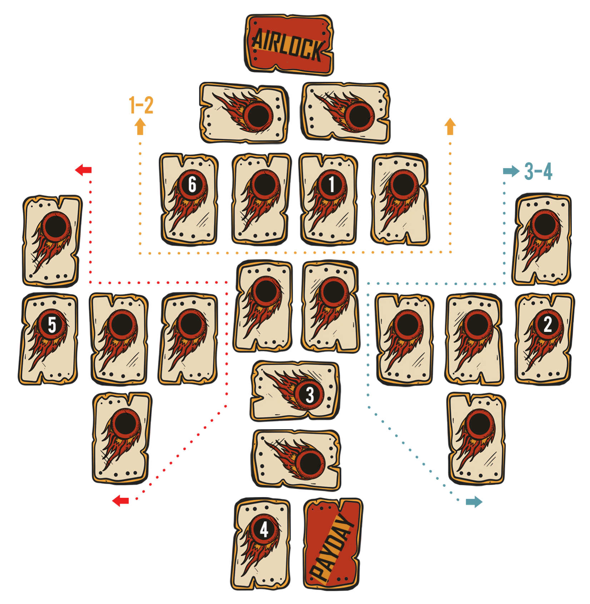
传输记录
2422年1月15日，标准时间21:23
突发传输，未知空间站至无标识飞船
// 传输开始
契约概述
深空探测飞船“幸运星号”，已重新出现在远程扫描仪上。
派去探查的飞船报告称，未探测到生命信号或电磁活动，飞船处于“无光运行”状态，引擎未启动。
初步侦察行动遭遇严重设备故障，登船程序被迫中止。
你的任务是：与“幸运星号”会合，登船并从舰载网络中提取所有导航和观测数据——数据库清除控制台位于前部指挥舰桥。
预计不会有幸存者，但若发现“幸运星号”船员的踪迹，布莱特-斯特姆威尔公司（Bright-Sturmwel）将为营救支付高额报酬。
// 最好别惊动死者
// 黑色契约：“幸运星号”
任务目标、特殊规则、甲板蓝图、诡异事件（闹鬼等级0-3）、危险事件（闹鬼等级4-6）、障碍、补给、坏消息（闹鬼等级0-3）、更糟消息（闹鬼等级4-6）、解锁内容
操作流程
历史记录
“幸运星号”在“死亡地带”形成前就已启航。由布莱特-斯特姆威尔联合机械公司（Bright and Sturmwell Consolidated Mechanistics）发射，紧随“人马座铁路枢纽”（Sagittarius Railhead）启动后，驶入未知深空。它的任务不是简单探测，而是深入调查，原计划航行6个月，却在雷达上消失了50年。当“幸运星号”未按计划会合时，一艘搜救飞船被派去寻找，最终只找到一片空旷的太空和无尽的疑问，毫无收获。
但现在，它回来了。“幸运星号”完好无损，船体外壳甚至没有一丝划痕，仿佛刚驶出船坞，进入黑暗宇宙。应急信标在闪烁，但所有远距离呼叫都没有回应——所以，你要去为我们找出答案。
主要契约目标
“幸运星号”的网络节点（Network Nodes）分布在船体各处：
1. 在你的游戏表上画3个空白格子，标注为“节点”（Nodes）。
2. 你需要访问其中3个节点，重启网络，之后才能前往舰桥下载数据核心。网络节点可按任意顺序重启，但需激活3个节点后，才能访问数据核心。
3. 激活3个网络节点后，前往“幸运星号”船头的飞行甲板，下载“收益核心”，返回气闸。若能存活，提交数据后，你将获得足以还清债务、保障未来生活的报酬。
预设规则：闹鬼（Haint）
“幸运星号”被“噩梦”缠身，拾荒者。一艘飞船失踪这么久，回来时却完好无损，不可能毫无痕迹——但“幸运星号”的外壳连划痕都没有。船员踪迹全无，但不代表他们“消失”了。它被“闹鬼”了，拾荒者。
- 在你的游戏表上画6个空白格子，标注为“闹鬼”（Haint）。
- 按提示填充格子；执行“平复心绪”（Settle Your Nerves）操作时，可清空格子——但如果“闹鬼”正在追击你，则无法执行该操作。
- 当“闹鬼”等级达到4或更高时，翻转所有已探索的方块（Diamonds）和黑桃（Spades）模块卡牌，按“未探索模块”规则重新探索，并使用“闹鬼等级4-6”的特殊提示。
特殊操作
1. 平复心绪（Settle Your Nerves）
拾荒者，花点时间喘口气。你现在心神不宁，要是能静下心来呼吸，或许角落里的影子就不会看起来那么吓人了。
- 操作方式：检查氧气，然后掷骰子（骰子数量等于你剩余的勇气值）。每掷出一个6，“幸运星号”的“闹鬼”等级降低1。
2. 收益结算（Payday）
激活3个网络节点后，无需掷骰即可获取收益核心。但获取收益核心时，“闹鬼”等级会立即升至6；若当前无“闹鬼威胁”，则生成1个“闹鬼威胁”。
你刚刚下载了“幸运星号”船员最后的绝望时刻记录——内容可不轻松，这艘飞船的“噩梦”，现在成了你的“噩梦”。
威胁：闹鬼（The Haint）
“幸运星号”的“骨架”里曾充满希望，拾荒者。但星际间的黑暗能改变一切——它独自漂浮太久，希望变成了怨恨。它曾在遥远的星空中“尖叫”，却无人听见。长时间只有“幽灵”作伴，只有幻影和回忆——这样一来，每个房间都变得“獠牙毕露”，也就不足为奇了。
闹鬼行动规则（根据抽取牌的花色）
| 牌的花色 | 行动 |
|---|---|
| 方块（Diamonds） | 向气闸方向移动2步 |
| 梅花（Clubs） | 向你所在方向移动1步 |
| 黑桃（Spades） | 向你所在方向移动2步 |
| 红桃（Hearts） | 将当前所在模块变为“无法通行的障碍” |
与闹鬼处于同一模块时
掷1个六面骰子：
- 6：去他的飞船！你都坚持到这儿了，可不想死在这儿。无视它，继续前进。
- 4-5：闹鬼用你亏欠的人、失去的人、珍视的人的幻影折磨你。消耗1点勇气继续前进，或逃离至气闸方向。
- 1-3：闹鬼侵入你的意识，掏空你的自我——你和这艘飞船没什么不同，只是比它暖和点罢了。你回不去了……这里就是你的“归宿”。
闹鬼到达气闸时
将甲板蓝图中，除你当前所在模块、气闸和收益核心外的所有卡牌取出，重新洗乱，面朝下摆放——你需要重新探索这些模块。
“幸运星号”甲板蓝图搭建方式
从扑克牌中移除所有花色的A-6，洗乱剩余卡牌，从中抽取21张，然后按以下位置摆放气闸和收益核心：
诡异事件（闹鬼等级0-3）(方块)
“科学考察船满是密封舱和扫描仪——扫描仪用来探测宇宙，观察恒星的缓慢死亡和厌恶‘自然’的真空；而科学却坚称‘真空才是宇宙的本质’。任何驶入未知深空的飞船，都会睁大眼睛，带上所有能想到的防护装备——尤其是在穿越未测绘的铁路枢纽时，谁都不知道会发生什么。你要明白，那些密封舱不只是为了‘防外’，当麻烦大到无法控制时，它们是为了防止‘麻烦扩散’，不让灾难找到我们。”
// 来自“战车号”（CHARIOT）的记录
方块A：打斗痕迹（Signs of a Struggle）
这里发生过打斗。从漂浮的血迹和遍地破碎、冒火花的设备就能看出来——但没有尸体，像是被拖走了。掷1个六面骰子：
- 6：血迹里闪着光的，是船员身份的超控密钥（Override Key）吧？说不定能派上用场，将1个超控密钥添加到你的装备中。
- 4-5：没时间在这儿琢磨发生了什么，你还有任务在身。打起精神，继续前进。
- 1-3：赢下这场打斗的“东西”，留下了一件破烂到认不出的船员服，姓名牌上只写着“科尔宾”（Corbin）。希望他没受太多苦——“闹鬼”等级+1。
方块2：外星实验室（Exolab）
这里到处是支架和隔离舱，乍一看空无一人。通风橱下本应进行着实验，只有应急磷光条照亮空间——但你好像看到角落有个控制台接口在闪烁。掷1个六面骰子：
- 6：“握手协议已激活……正在重新同步……” 看来这里的备用电源还在工作，网络节点一接入就启动了——“网络节点”+1。
- 4-5：“开始外星天体探索活检。医生，小心点……你知道上次它的反应。科尔宾自那次事件后就一直被隔离。” 关掉录音，重新路由——“网络节点”+1，“闹鬼”等级+1。
- 1-3：其中一个隔离舱里有团“东西”，像是嚼碎的肉渣裹着碎石——眯着眼看（我建议你别这么做），它好像在呼吸——“闹鬼”等级+2。
方块3：奇怪的声音（Weird Noises）
那是什么声音？音频合成器肯定有反应了，听起来像呼吸声——不是你的呼吸声，对吧？你是不是掉了什么东西？好像有东西撞到甲板上了。掷1个六面骰子：
- 6：监控节点卡在循环播放中，是某个濒死的人在试图向母星发送求救信号。好消息是，你能关掉它，接入主系统——“网络节点”+1。
- 4-5：“我没多少时间了。卡斯韦尔（Caswell）疯了，网络也坏了。要是能到备用零件舱，我或许能修好它，或许能联系上搜救船。但他还在外面。” 你有备用逻辑模块，对吧？消耗1点装备——“网络节点”+1，“闹鬼”等级+1。
- 1-3：声音越来越近了，拾荒者，而且不止一个——“闹鬼”等级+2。
方块4：有人的控制台（Inhabited Console）
有个人坐在船员控制台前，还系在重力座椅上，双手仍紧紧抓着操纵杆。看样子已经在这儿很久了，而且会一直“待”下去。掷1个六面骰子：
- 6：这位船员当时在尝试重启网络节点——别为他写悼词，完成他没做完的事就好——“网络节点”+1。
- 4-5：他用最后一口气尝试重启网络。消耗1点装备或勇气，完成这项工作——“网络节点”+1，“闹鬼”等级+1。
- 1-3：你俯身查看他在做什么，却敢肯定那“东西”动了——赶紧离开这儿——“闹鬼”等级+2。
方块5：蒸汽舱（Steam Room）
有东西在这个舱室里泄漏，但在失重环境下，它的流动方式很奇怪。冷凝水滴顺着墙壁流下，在金属表面汇成小溪。雾气很浓，你很难找到出口。掷1个六面骰子：
- 6：保持冷静，留意角落——只是些雾气而已。
- 4-5：这扇门看起来很熟悉，对吧？但你一直走直线，怎么会这样？最好再试一次，或许该留下“面包屑”（做标记）。检查氧气或消耗1点装备——“闹鬼”等级+1。
- 1-3：雾气里有东西在动，拾荒者。有“东西”和你在同一个舱室里，撞来撞去——你好像躲开了，但它们现在开始“狩猎”了——“闹鬼”等级+2。
方块6：墙壁里的动静（Something in the Walls）
刚才那个检修面板还是关着的。调高合成器音量，拾荒者——你也觉得有东西在船体夹层里乱窜，对吧？掷1个六面骰子：
- 6：不是乱窜声，是故障的螺线管在试图接触电路——是损坏的网络断路器节点。花点时间把它重新打开——“网络节点”+1。
- 4-5：不管是什么东西，把这儿弄得一团糟，还在网络节点的电缆里筑了巢。但你能修好它，消耗1点装备或勇气——“网络节点”+1。
- 1-3：你为什么要往里面看？蹲下来透过检修面板看时，什么都没看到——不管是什么，已经溜走了——“闹鬼”等级+1。
危险事件（闹鬼等级4-6）(方块)
“好吧，我在录音。嗨，不管你是谁，希望你今天过得比我好。我们……我们一直没睡好。一开始只是奇怪的梦，噩梦。后来船长也开始……嗯，你知道，我跟他飞了很久，他以前不是这样的。他从来不会梦游，更不会带着配枪睡觉。他是爱喝两杯，但从不撒酒疯。可现在，我们没人能睡着，根本睡不着——我们睁着眼睛做噩梦。埃姆医生（Doc Em）说，是黑洞的宇宙辐射导致的。
我觉得这是胡说八道。”
// 安提戈涅·“泰格”·赖特（ANTIGONE “TIG” WRIGHT），导航员，2368年2月22日
方块A：诡异阴影（Unnatural Shadows）
拾荒者，别回头——但我敢肯定，角落里那团影子在变大。别回头！那是胳膊吗？胳膊上不会有牙齿吧？绝对别回头！掷1个六面骰子：
- 6：低下头，视而不见。不管那是什么，都与你无关——你可以担心，但别招惹它，它看起来没打算追你。
- 4-5：那东西挡在你和门之间。要么退回去，要么消耗1点勇气闯过去。
- 1-3：该死，你还是回头了，对吧？这下麻烦了，拾荒者——在你当前模块生成1个“闹鬼威胁”，并抽取1张牌。
方块2：肉质苔藓（Meat Moss）
外星实验室的隔离舱坏了，某种潮湿、纤维状的“东西”像地狱的粗毛地毯一样，在地板上蔓延。探测器显示有地球有机化合物，还探测到船员身份标识信号——那……那是只眼睛，对吧？掷1个六面骰子：
- 6：科学终端还在运行，拾荒者。稍微摆弄一下，就能重新路由，秘密接入网络——“网络节点”+1。
- 4-5：那个闪烁的终端很诱人，但苔藓正用试探性的卷须缠你的靴子。消耗1点装备或检查氧气，清理出一条路——“网络节点”+1。
- 1-3：不行，你得离开这儿。不管这舱室里藏着什么，都不值得让你忍受脚下那黏糊糊的感觉——在“闹鬼”等级降至0前，你无法在坏消息模块中消耗勇气。
方块3：骸骨室（Ossuary）
至少有个问题有答案了——船员在这个舱室里。我是说，大概吧。骷髅头都长得差不多，而且它们没带身份牌，也没穿防护服。但有人把这些骨头按大小分类了，这就很奇怪。掷1个六面骰子：
- 6：等我们发财了，再做噩梦也不迟，拾荒者。现在先把坏念头压下去，继续干活，好吗？
- 4-5：“检测到生命信号。” 你的舱室里有多个扫描仪信号，而且那堆骨头开始动了。消耗1点勇气或装备，杀出一条路。
- 1-3：“幸运星号”大概玩腻了。骨头太多，你打不过——但会很快结束，也算是种解脱。
方块4：刚有人的控制台（Recently Inhabited Console）
你进来时，明明看到这个控制台前有具尸体——但你低头拿扳手，或是检查氧气时，只移开了一秒视线，尸体就不见了。但它肯定没走远。掷1个六面骰子：
- 6：尸体消失确实不是好事，没人会否认这一点。但你有任务在身，而且氧气不免费。所以，一边留意身后，一边重启这个网络节点——“网络节点”+1。
- 4-5：“她到底做错了什么？” 死人开口说话，“他们把她丢在黑暗里，现在黑暗就是她的一切。怨恨，怨恨吞噬了她。” 这死人满脸是牙，拾荒者。检查氧气或消耗1点照明，活下来。
- 1-3：“它会钻进你的脑袋，产卵。它在尖叫，你能听到吗？” 你能听到——这是你听到的最后声音。
方块5：求救呼叫（Call for Help）
救援频道上什么都没有，但音频合成器刚捕捉到一个人类的声音——很微弱，听不清，但确实是人类的声音，而且有点熟悉？掷1个六面骰子：
- 6：这不可能。就算是真的，也不是你此行的目的。继续前进。
- 4-5：去看看也没坏处，对吧？返回上一个探索过的模块，正常检查氧气。
- 1-3：这肯定是敌人的陷阱，拾荒者。返回上一个探索过的模块，正常检查氧气——但有东西锁上了身后的舱壁，这个模块变为“无法通行”，按“障碍失败”规则处理，将卡牌旋转45度。
方块6：行走的噩梦（Walking Nightmare）
你的嘴变干了，心跳得像揣了只兔子，周围的一切都散发着“阴影中藏着狼”的气息。你说不清原因，但这艘飞船的每个角落都变得……充满敌意。你在这里不受欢迎。掷1个六面骰子：
- 6：有人在你“坟墓”上走过（比喻“不祥之兆”），但只要你不把它当回事，或许就能继续工作。拾荒者，别让它影响你，继续前进。
- 4-5：低语声让你心神不宁，打乱了你的节奏——失去1点勇气，“闹鬼”等级+1。
- 1-3：感觉有人在盯着你，对吧？好像有东西在你脖子后面呼吸？如果“闹鬼威胁”已生成，它现在就在你所在的模块里。
障碍（Barriers）(梅花)
遇到障碍时，掷1个六面骰子：
- 6：成功通过障碍，后续仍可从这里通行。
- 4-5：冒险尝试一次就够了，通过后这个模块就会变成死胡同。将卡牌旋转45度，标记为“无法通行”。
- 1-3：无法通过，返回上一个模块，另寻路线。将卡牌旋转45度，标记为“无法通行”。
“A区的走廊彻底腐烂，掉了下去；B区的舱壁门，在我看来就像一张嘴；C区的导管，承诺给我们自由；D区医疗舱的隔离舱，看起来还挺漂亮；E区断路器上的控制台，我发誓它在跟我说话；F-G-H-I-J-K-L，‘幸运星号’是我自己的地狱；M-N-O-P-Q-R-S，灯光昏暗，空气稀薄；T-U-V-X-Y-Z，然后，它重启‘磁带’，我们又要重来一遍。”
// 未知声音，飞行甲板语音记录仪，2422年1月12日
障碍类型详情
- 梅花A：辐射屏蔽层（Radiation Shielding）——或者说，它曾经是。现在，它只是一团漂浮的微粒，发着不健康的绿光。这艘飞船好久没进过船坞了。
- 梅花2：探测阵列（Sniffer Array）——这个控制台连接着“幸运星号”的主传感器阵列，正常情况下没问题，但现在它在嘶嘶作响、冒火花，好像随时会爆炸。
- 梅花3：生物识别面板（Biometric Panel）——这个舱壁需要船员的生物识别才能打开，你得重新路由、执行超控操作才能通过。
- 梅花4：防爆门（Blast Doors）——这些大型防爆门，本应在飞船非关键区域发生严重故障时关闭，能承受失压，只有战术鱼雷才能炸开——但显然有什么东西尝试过……
- 梅花5：隔离舱（Quarantine Vault）——这上面的黑黄警示贴纸，比一般有守卫的飞船还多，这片区域被设为隔离区。你要打破密封吗？
- 梅花6：临时监狱（Impromptu Brig）——所有入口都被超控锁定，用的是船长的私人密钥。按理说，你带的集团密钥能解锁，但这艘飞船上的一切，似乎都不按常规运行。
补给（Supply）(红心)
遇到补给时，掷1个六面骰子：
- 6：获得2个标记的补给单位。
- 4-5：获得1个标记的补给单位。
- 1-3：这里已经没什么能给你的了。
“祝你生日快乐。吃冻干红色黏液吧。他们会告诉你这是巧克力，而且都是预嚼过的。”
// 齐唱录音
“安全主管阿伦·科尔宾（Aran Corbin）：‘呃，谢谢大家能来。’——（礼貌的笑声）——‘别这样，船长，别拿相机对着我。’
船长内希（Captain Nehi）：‘科尔宾，我们得珍惜这些时刻，谁知道还能有多少这样的日子呢。’——（杂音/笑声）——
科尔宾：‘你真是个阳光开朗的人，船长。’”
// 视频记录，拍摄于“幸运星号”船员餐厅，2368年2月4日
补给类型详情
- 红心A：中继发射器（Relay Transmitter）——拾荒者，这就是那个向虚空“呼救”的小装置，也是“幸运星号”被发现的原因。按下开关，你现在来了——带上需要的东西，好让自己能离开这里。（对应资源：装备）
- 红心2：闪光组（Flash Bank）——老式“全能闪光仪”的充电架，在一片红、黄色指示灯中，或许能找到一个绿色闪烁的“满电”指示灯。有几个已经不见了，这不奇怪。当一切都不对劲时，握着一个沉甸甸、亮闪闪的闪光仪，会让人安心不少，对吧？（对应资源：照明）
- 红心3：安全站（Security Station）——感谢老天，监控系统还能用。花点时间看看摄像头画面，从远处看，它也没那么吓人，只是另一艘废弃飞船而已。（对应资源：勇气）
- 红心4：密封舱壁（Sealable Bulkhead）——看起来像个休息室，对吧？这个舱壁的指示灯还是绿色的，说明锁还能用，能形成密封——你找不到比这更安全的地方来歇口气了。拾荒者，无需掷骰，若你的勇气未满，将勇气值补满。（对应资源：勇气）
- 红心5： morale 柜（Morale Cabinet）——拾荒者，这里是装备天堂。这种长途航行的飞船，必须储备充足物资，以应对公关人员所说的“紧急情况”。零件坏了，就得自己造新的——你比“幸运星号”更需要这些东西。拾荒者，无需掷骰，若你的装备未满，将装备值补满。（对应资源：装备）
- 红心6：出舱服储物柜（EVA Suit Locker）——天啊，看那个。那是一套IV型出舱服（Extra Vehicular Activity hardsuit），带动力辅助、集成供氧系统，还有自密封非牛顿冲击防护层——太酷了。拾荒者，无需掷骰，若你的氧气未满，将氧气值重置为满。（对应资源：氧气）
坏消息（闹鬼等级0-3）(黑桃)
“机械师日志，2368年2月12日。‘我是首席机械师塔姆·卡斯韦尔（Tam Caswell）。跟你说，这些新型号不如老型号耐用。我在‘零四号’飞船上待了快8年，虽然不能说它们‘没脾气’，但‘幸运星号’绝对是我修过的最‘刻薄’的飞船——好像每一次升级、每一次更新，它都在反抗。它是最先进的、全新的旗舰级探测船，本应更快、更远地开拓疆土，难怪它这么‘自视甚高’。我觉得我该跟它‘说好话’，看看它会不会乖一点。’”
// 首席机械师塔姆·卡斯韦尔，2368年1月1日后唯一未加密的机械师日志
坏消息类型详情
黑桃A：行动迟缓（Slow Going） 今天做什么都像在水里走一样。舱门开得慢，东西比预想的重，连走路都像在做梦——怎么都跑不快。拾荒者，快点。掷1个六面骰子：
- 6：看来是你敏锐的“拾荒者直觉”在起作用。要是走得太快，你就会错过这个网络节点——“网络节点”+1。
- 4-5：好像是重力系统出故障了，没什么大不了的。对着那个面板“技术敲打”一下（指临时修理），说不定就好了。消耗1点装备或勇气。
- 1-3：今天会很漫长，拾荒者。这艘飞船让你心神不宁——每次穿越这个模块，都需检查2次氧气。
黑桃2：冗余系统故障（Blown Redundancies） 通常你能重新路由、接入应急电源，但这艘飞船的很多线路都被破坏了，连找个合适的应急方案都难。到底发生了什么？看起来像有人故意破坏。掷1个六面骰子：
- 6：要是你没穿拾荒者防护服，根本活不下来。感谢幸运星，你是你，不是那个遭遇这场破坏的人。
- 4-5：空气里有脏东西，你的视野几乎为零。消耗1点勇气或检查氧气，穿过去。
- 1-3：空气里的脏东西不仅影响视野，还在腐蚀你的防护服。消耗1点勇气穿过去——这个模块变为“无法通行”；若没有勇气，这里就是下一个拾荒者发现你“愤怒幽灵”的地方——下次有拾荒者进入这个模块时，生成1个“致命幽灵”威胁。
黑桃3：令人不安的寂静（Uncomfortable Silence） 废弃的飞船总会时不时发出呻吟和 creak（嘎吱声），但这艘飞船突然不“叫”了，一下子就安静了。掷1个六面骰子：
- 6：可能是你的音频合成器出问题了，降噪功能太敏感——而且，难得能安静一会儿，你还要抱怨吗？
- 4-5：敲一下头盔也没用，看来你的不安是对的。消耗1点照明，照亮相邻模块，稳定心神；若没有照明，执行“平复心绪”操作。
- 1-3：你没听到的是飞船“呻吟”的声音——飞船只有在快要解体时，才会停止“呻吟”。执行拆船掷骰。
黑桃4：电脑错误（Computer Error） 工程卫星终端的控制台在闪烁，看起来像在倒计时，而且数字一直在减少。掷1个六面骰子：
- 6：没问题。切断硬线，引发反馈循环，让数字一直来回跳，永远不会倒计时结束——继续前进。
- 4-5：反应物质容器的磁约束系统出故障了。消耗1点装备，设置临时补丁，应该能撑到你离开这里；若没有装备……抱歉，拾荒者。
- 1-3：情况很糟，反应堆不稳定，爆炸会很剧烈。执行拆船掷骰，摧毁你不在的那部分区域。
黑桃5：备用电池启动（Backup Batteries） 主电源刚“完蛋”了（请原谅这个说法），整艘飞船现在靠备用电池供电——这意味着一切都会变得更难、更慢。掷1个六面骰子：
- 6：用足够的鳄鱼夹（临时接线工具）和外部电源，你能让电池撑到你离开——前提是别再出别的问题。
- 4-5：电池电量很低，但你能重新路由足够的电力到连锁装置，让门勉强能开。探索障碍模块时，最高只能掷出4-5的结果，除非消耗1点装备。
- 1-3：电池彻底没电了，该死。除非你现在就把所有剩余照明用完，否则所有“3级障碍”都无法通过。
黑桃6：布满孔洞的舱室（Swiss Cheesed Compartment） 这个舱室被打出了好几个洞，你有点担心能不能穿过去。要是踩错地方，地板会塌，你就会在无尽的虚空中“狗刨”。掷1个六面骰子：
- 6：只是另一艘有战斗损伤的废弃飞船而已，你最擅长应对这种情况了。
- 4-5：很难走，还很慢。要么慢慢走，检查氧气；要么消耗1点勇气，用高级技巧节省时间。
- 1-3：结构损伤比你想象的更严重，地板全松了——你得通过太空行走穿越这个舱室。
更糟消息（闹鬼等级4-6）(黑桃)
“损坏报告：2368年2月14日。‘幸运星号’左舷脉冲导航推进器和燃料舱，被未知来源的太阳系外天体撞击受损。该天体在撞击前，方位角改变了48度，以垂直角度撞击。初步判定为传感器故障和飞行员疲劳所致。卡斯韦尔保证，修复时间不会超过3个标准小时。”
船长个人补充：“自从穿过铁路枢纽后，我们没人能睡好。我已授权使用安眠药，直到睡眠恢复正常——但这显然只是权宜之计，若情况没有改善……
我梦到自己被吞噬了。
这个星域是‘死’的……”
// 船长伊姆兰·内希（Captain Imran Nehi），唯一的个人补充记录
更糟消息类型详情
黑桃A：集团代码失效（Corporate Code Failure） 集团代表给你的万能密钥，本应能解锁大部分锁定装置，但刚才不知怎么回事，代码被篡改了——这张破卡没用了。飞船总不能自己改密码吧？掷1个六面骰子：
- 6：当然不能。可能只是传输不完整，没什么好担心的。
- 4-5：但看起来它就是自己改了。超控密钥（Override Keys）无法再解锁“3级障碍”。
- 1-3：这代码太复杂了，而且你能听到身后舱壁关闭的声音——重置这艘飞船上所有的“3级障碍”，拾荒者。
黑桃2：蓄意破坏（Willful Sabotage） 你刚把夹子夹在线上，准备发送脉冲——幸好你这么做了。有人在这上面装了个“假陷阱”……威力大到能杀你好几次。快点想办法。掷1个六面骰子：
- 6：没问题，刚好及时发现。剪断那根线，继续工作。
- 4-5：还能补救，但需要时间仔细拆解除去带电的连接。小心地剥开电缆——检查氧气或消耗1点装备。
- 1-3：太晚了。若你不能在两回合内返回气闸，就会变成一个漂亮的火球——不管怎样，你都得结束这里的任务了。
黑桃3：锁定程序启动（Lockout Engaged） 有人刚启动了舰桥隔离程序，控制台都在关机，防爆门就要降下来了——快点。掷1个六面骰子：
- 6：不，没门。冲到指挥控制台前，重新路由控制权，不让防爆门关闭——你能做到。“网络节点”+1。
- 4-5：你能修好它，得先断开防爆门控制传动装置——将这个模块视为“3级障碍”，掷骰判断结果。
- 1-3：你得花点时间才能出去，拾荒者。检查2次氧气，或消耗1点装备，检查1次氧气。
黑桃4：爆破炸药（Scuttling Charges） 你要知道，这种探测飞船上，标配都有这种炸药——是电引爆的稳定爆破化合物，看起来是“探戈型”（Composition Tango）。威力很大，而且这艘飞船上很多东西都在“自作主张”，我建议你小心点。掷1个六面骰子：
- 6：拾荒者，别错过这个“天上掉馅饼”的机会。发挥你的专长，多拿点东西——回收1点装备。
- 4-5：这些红灯看得你心神不宁，只要电力突然激增，就能把这艘飞船炸成碎片。花点时间，让这里变安全——消耗1点装备或检查氧气。
- 1-3：好吧，这是倒计时。拾荒者，保持冷静。3个回合后，执行拆船掷骰——这个模块所在的区域会爆炸。别待在这儿，好吗？
黑桃5：反应堆舱（Reactor Room） 那个反应物质容器是老古董，还受了伤。拾荒者，别在这儿多待——除非你想在黑暗中“发光”（指被辐射）。掷1个六面骰子：
- 6：只是另一个反应堆舱而已。在黑暗中燃烧的熔融聚变约束阵列，你见得多了，都一样。
- 4-5：有些损伤看起来是故意的，有规律可循——有人改装了驱动核心，拆除了安全装置，而这些安全装置本是让这种东西能“安全飞行”的关键。盖革计数器的声音很难听，但你能修好它——消耗1点装备或勇气。
- 1-3：驱动核心正在启动，拾荒者。不管它消失的这些年待在了哪里，看来它很“想念”那里。光芒正在夺走空气的颜色，低沉的嗡嗡声慢慢变成尖叫——消耗你所有的装备，卡住启动程序；若没有装备，你就会被“带走”（指死亡）。
黑桃6：金属剥落（Spall-out） 这里的金属剥落物（spalling）很厚，细小的金属碎片像尘埃一样在空气中闪光——有东西从外面狠狠撞了这艘飞船，而且力度很大。拾荒者，看好你的防护服，外面可冷了。掷1个六面骰子：
- 6：拾荒者，你动作真快，真干净——没人知道你能这么灵活。
- 4-5：穿越时很费劲，防护服也有点受损，但你能蹲下来修补，然后继续工作——消耗1点装备。
- 1-3：在这无尽的黑暗中，一片剥落物穿透了你的呼吸器，氧气漏得很快——从现在起，每次穿越模块，都需检查2次氧气。
解锁内容（Unlocks）
若你能活着离开“幸运星号”，就已经战胜了命运。带着以下物品和能力，继续你的旅程：
1. 传承升级：集团访问密钥（Corp Access Key）
完成“黑色契约：幸运星号”任务后，所有拾荒者将获得“铬锁可重编程身份伪造器”（ChromLock reprogrammable Ident-Spoofer）——这是一个可重复使用的超控密钥，充电周期不超过1个标准日。它相当于永久有效的超控密钥，每艘待拆飞船可使用1次，且无需支付维护费。
2. 个人升级：不惧鬼魂（Ain’t Afraid of No Ghost）
任何完成“黑色契约：幸运星号”任务的拾荒者，都将对“致命幽灵”的“1-3级效果”免疫。在铁路枢纽被“狩猎”过后，那种只有爪子和牙齿的普通怪物，看起来就没那么可怕了。
黑色契约：“西格玛616号”（Railhead 616-Sigma）
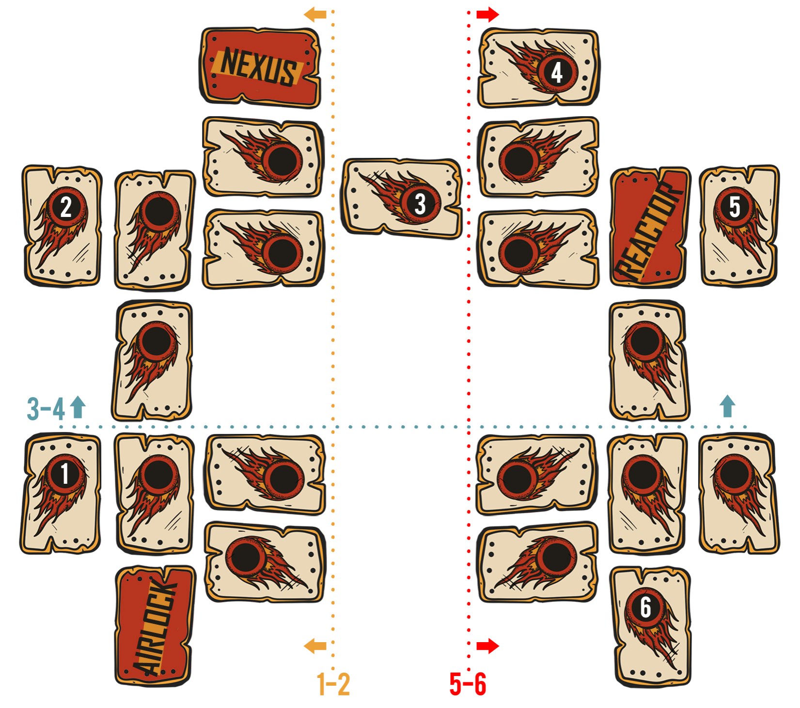
传输记录
2422年1月15日，标准时间21:23
突发传输，“战车号”（TCV Hoplon）至绑定拾荒者飞船
// 传输开始
契约概述
西格玛616号（Railhead 616-Sigma）原计划用于测试航行，现已启动，以进一步探索死亡地带以外的西格玛星域。标准启动流程需要配备完整的工程师和支援人员，按要求每两个月需向核心区域发送一次更新和遥测数据——但他们已经错过了三次通讯。原计划最多三个月的任务，现在已快五个月了。
铁路枢纽仍在运行，空间站似乎有人活动，生命信号远超标准人员配置——但没人接电话。
你的任务是：登船，查明故障原因；若情况最坏，执行超控程序，关闭铁路枢纽。
// 把身后的门关上
// 黑色契约：西格玛616号
任务目标、特殊规则、甲板蓝图、狩猎机制、障碍、补给、坏消息、解锁内容
操作流程
历史记录
西格玛616号，是阿尔法645号铁路枢纽的“镜像”——后者是进入死亡地带的门户。尽管人马座A星（SAG-A）的引力正一口口吞噬这个星域，但所有铁路枢纽都通过某种未知、无法解释的方式保持着固定位置。由于超massive黑洞的透镜效应，西格玛616号看起来总是有点“扭曲”。
在铁路枢纽周边进行的探索和栖息地建设，已造成多起悲剧；但随着越来越多勇敢的人来到死亡地带寻找财富，人们的目光又一次投向了“下一个边境”。
与西格玛616号的通讯，由驻守在韦菲尔德星域（Wayfield Expanse）外的“霍普隆号”（TCV Hoplon）负责——它通过定向波束，绕着事件视界（黑洞边界）转发信号。“霍普隆号”报告称，西格玛616号正在重复发送某种信号，与任何已知代码或语言都不匹配。该项目的主要资助方——阿什顿-火星财团（Ashton-Mars Consortium）——声称对该代码一无所知，但坚决要求终止这个实验。
主要契约目标
抵达西格玛616号的对接环后，穿越主建筑群，前往安全中心（Security Nexus）——在那里，你能获得生物识别加密安全许可。获得许可后，前往空间站的控制甲板，启动反应堆关闭程序。
// 来自洛伦佐·阿什顿（Lorenzo Ashton）的加密突发传输：
“他们还会再启动它的。我给你寄了个‘关怀包裹’：四枚‘基洛型’（Composition Kilo）反物质手榴弹。想做‘正确的事’？就把这些拿到控制甲板，确保那扇‘门’永远不会再打开。”
……或者，听从洛伦佐的建议，用“基洛型”炸药改装反应堆。毕竟，时势艰难，就得用极端手段。
预设规则：环境（ENVIRONMENT）
控制西格玛616号的“东西”，已彻底改变了空间站的环境——内部不再是无菌的塑料玻璃和抗压钢，也没有了精心控制的温度。你的超控密钥在这里没用。
现在，这里变成了一个闷热的“高压锅”，充斥着外星动植物。从你接触对接环的那一刻起，你就走进了一个“狩猎场”——猎物来自我们未知的“铁路枢纽另一端”。虽然你拿到了铁路枢纽的详细示意图，但要知道，追踪你的“生物”，比你更熟悉这里的地形。
当你翻开“方块”（Diamonds）花色的卡牌时，你找到的不是战利品——而是与外星掠食者的近距离遭遇、它们设下的致命陷阱，或是类似的可怕遭遇。
特殊操作
1. 新增追踪器
- 画4个空白格子，标注为“狩猎”（Hunt）：若“狩猎”值达到4，在你当前所在的模块中生成“猎人威胁”（Hunter Threat）。
- 画4个填充格子，标注为“基洛型炸药”（Comp-K）：你初始拥有4枚“基洛型”反物质手榴弹，在紧急情况下，可用于从“猎人”手中逃生。但每使用1枚，你在“关键时刻做正确事”的概率就会降低。
2. 掩盖踪迹（Cover Your Tracks）
若你感觉有压力，觉得被跟踪了，就花点时间清理身后的痕迹。任何时候，检查氧气，可将“狩猎”值降低1。
3. 生物识别加密（Biometric Encoding）
当你抵达西格玛616号的安全中心时，掷1个六面骰子：
- 6：集团已为你铺平道路，发送了定向波束，解锁数据库并启动终端——容易得像作弊一样，获得生物识别许可（Biometric Pass）。
- 4-5：你得花点时间处理这些文书工作——显然，覆膜机坏了，这会是个麻烦。消耗1点装备或检查氧气，然后获得生物识别许可。
- 1-3：集团加密还算小事，但插在控制台里的那把带尖刺的大型狩猎刀，才是大问题。希望你有备用计划。
4. 反应堆关闭程序（Reactor Shutdown Protocol）
使用生物识别许可启动反应堆关闭程序时，掷1个六面骰子：
- 6：轻松的一天。刷卡，点击电源图标，输入集团密码，反应堆的嗡嗡声就会慢慢减弱——现在，该离开这艘残骸了。
- 4-5：随着空间站反应堆的低沉嗡鸣消失，传来一声原始的尖叫。将“狩猎”值设为4；若“猎人”已在甲板上，它会向你所在方向移动1步。
- 1-3：看来，运行中的反应堆是唯一让这艘飞船“保持完整”的东西——沿着所有拆船线，摧毁空间站。
5. 改装反应堆（Rig the Reactor）
使用“基洛型”反物质手榴弹改装反应堆，使其爆炸时，可为每1枚你愿意使用的“基洛型”手榴弹，从以下选项中选择1项：
- 任务目标：铁路枢纽永久关闭。
- 时间缓冲：你有超过6个回合的时间逃离，不会与铁路枢纽一起毁灭。
- 摆脱追踪：“猎人”不会追你。
- 紧急程序：显示所有未探索的模块。
- 资源补充：你有时间和方法补充氧气。
- 重振士气：这让你重拾目标，勇气值补满。
威胁：猎人（The Hunter）
一方面，哇！你发现了会使用工具、有智慧的非人类外星生命！另一方面，嗯……它看起来可不友好。它速度快，还很狡猾——你可能早就瞥见它了，但你的大脑一直告诉你“专心工作，别瞎操心”。但现在，你成了“最高级的猎物”，它想把你做成“战利品”。我觉得你该“操心”了，尤其是因为“诱饵装置”（Crybabies）根本引不开它。
猎人行动规则（根据抽取牌的花色）
| 牌的花色 | 行动 |
|---|---|
| 方块（Diamonds） | 向气闸方向移动2步 |
| 梅花（Clubs） | 向你所在方向移动1步 |
| 红桃（Hearts） | 设下陷阱：若你穿越这个模块，会触发陷阱并惊动它——猎人向你所在方向移动2步，你需检查氧气，才能挣脱陷阱并移动。 |
| 黑桃（Spades） | 若能从1个模块外发起攻击，则攻击；若不能，则向你所在方向移动1步。 |
猎人攻击规则
1. 从1个模块外攻击
消耗1枚“基洛型”手榴弹，或掷1个六面骰子：
- 6：它在“玩”你，拾荒者。或许它不想让“追逐”结束，或许想看看你会做什么——别让它等太久，拉开距离。下一轮，猎人不行动。
- 4-5：肯定比你想的更危险，对吧？你能感觉到它从身边掠过的风，但你没死——这意味着你还有机会摆脱它，不管用什么方法。
- 1-3：至少不疼，拾荒者。你“不好吃”，可能是因为大脑里满是疼痛信号；也可能是“战利品”带着伤口会掉价。不管怎样，“猎人”的方式是“快速、干净”（指快速杀死你）。
2. 与猎人处于同一模块
消耗1枚“基洛型”手榴弹，否则会被残忍杀死。
3. 猎人抵达气闸
它会在那里等你返回。
西格玛616号甲板蓝图搭建方式
从扑克牌中移除所有花色的A-6，洗乱剩余卡牌，从中抽取20张，然后按以下位置摆放气闸、安全中心和反应堆：
狩猎机制（HUNT）(方块)
“观察基尔斯沃思变异鼠（Killsworth Muttratt）的狩猎模式：它们会包围从群体中脱离的跳鼠（pipspringer），以缓慢缩小的螺旋状队形逼近。跳鼠能垂直跳跃9英尺，本可以轻松跳过这些只到脚踝高的穴居变异鼠，但来自四面八方的缓慢逼近，让猎物只顾着转身警惕最近的骚扰者，根本没时间蓄力跳跃。最先追上跳鼠的变异鼠，总会弄伤它的腿——用锋利的、过长的门牙，夺走跳鼠最后的逃生机会。一窝变异鼠只需一只成年跳鼠就能填饱肚子，但对其他跳鼠来说，看着同伴被拖走，也没什么可安慰的……”
// 艾利斯·麦克默托（ALYS MCMURTAUGH），《自然太残酷了》（“NATURE IS HILARIOUSLY CRUEL”），第221集，《基尔斯沃思低地的掠食者》（PREDATORS OF THE KILLSWORTH LOWLANDS）
狩猎事件详情
方块A：发光芦苇（Glow Reeds） 这些齐腰高的摇摆芦苇，覆盖着半透明的结节，对运动有反应。刚才那只虫子从左边跑过，留下了一道紫色轨迹——任何追踪你的东西，穿过这里时都会更容易发现你。掷1个六面骰子：
- 6：老话说“在丛林里，做老虎比做人好”。看来你在想“老虎的事”，所以在这些芦苇里，你像个幽灵一样（指不被发现）。
- 4-5：你很小心，走得很慢，留下的痕迹很淡，人类很难追踪——但追踪你的“东西”不是人类，这就没什么用了。“狩猎”值+1。
- 1-3：哦，真有意思。显然，你踩碎芦苇时，它们会像该死的罗马蜡烛一样，向空中喷射生物发光孢子——简直是天然的信号弹。任何“狩猎者”都收到“开饭铃”了。“狩猎”值+2；若“猎人”已激活，向你所在方向移动2步。
方块2：河床（Streambed） 这个水设施可不是铁路枢纽的标准配置——蜿蜒穿过这个模块的小溪，水很浑浊，覆盖着一层鲜绿色的黏液，河底是厚厚的黑泥。希望别太深。掷1个六面骰子：
- 6：说实话，这还挺幸运的。沿着浅水区走，故意绕路，追踪你的东西会跟丢你的痕迹。“狩猎”值-1。
- 4-5：在河床里哗啦哗啦地走，在淤泥里留下清晰的脚印，这肯定不利于摆脱追踪——但你好歹渡过了“河”。跟俄勒冈小径（比喻艰难旅程）一样，别抱怨了。“狩猎”值+2。
- 1-3：水很深，穿着拾荒者防护服就更难了。当河床突然变深时，藏在岩石后的“触手噩梦怪物”才是真正的麻烦。消耗1枚“基洛型”手榴弹，否则就会成为这东西的“晚餐”。
方块3：陷阱坑（Tigerpit） 这到底是怎么回事？有人居然在甲板中间挖了个坑？你明明很小心了，但脚下的泥土还是塌了——你在往下掉。希望别太深。掷1个六面骰子：
- 6：幸好掉得不远，但坑里塞满了该死的发光芦苇，它们喷射出紫色的光。你爬出来，赶紧拉开距离。“狩猎”值+1。
- 4-5：比你想的深。没时间躺着检查伤势——你能听到头顶树上有动静。检查氧气，爬出来——“狩猎”值+2。
- 1-3：原来这么深。甲板在你头顶消失，你穿过压力舱，掉进了太空——你得通过太空行走离开这里。
方块4：猎犬（Hounds） 你不是唯一的“猎物”，你的追踪者也不是唯一的“猎人”——它的“狩猎同伴”正在追你，而且听起来越来越近了。掷1个六面骰子：
- 6：这些“猎犬”是瞎的，长着鱿鱼一样的脸，浑身是带刺的羽毛笔状结构。它们移动起来像涂了油的闪电，但转弯能力极差，而且看不见、闻不到你。脚步轻点，避开那些“嘎嘎作响的藤蔓”（指会发出声音的植物），赶紧离开这里。
- 4-5：这些“猎犬”是流着口水、长着螃蟹嘴的蝾螈一样的东西，而且它们正从该死的墙里钻出来——这太不公平了！消耗1枚“基洛型”手榴弹，或2点勇气，用计谋摆脱它们，躲进灌木丛。
- 1-3：这些“猎犬”是某种镀铬的“科技鬣狗”，速度快、聪明，还能“看见”你的心跳——它们的嘴里满是电锯一样的牙齿。消耗你所有的勇气，否则就会被它们抓住。
方块5：陷阱（Snare） 该死，居然有陷阱，真是“惊喜”。掷1个六面骰子：
- 6：做个“艰难的仰卧起坐”，用切割工具切断那根绳子——是某种编织金属绳，但能切断。掉下来不好受，但总比挂在这儿强。哈哈。
- 4-5：突然被拉起来，又突然撞到天花板，你嘴里满是血腥味，眼前直冒金星——面罩上裂了道蛛网状的缝。拾荒者，这得花点时间处理。消耗1点装备，或检查2次氧气。
- 1-3：我猜，它早就等着你来这儿了。“狩猎”值直接设为4，“猎人”现在就在你的模块里。
方块6：躲避（DUCK） 别读了，赶紧卧倒，拾荒者。掷1个六面骰子：
- 6：单丝弹簧线从你头顶飞过，头盔里的合成器发出了你听过的最高频的“蚊子叫声”——身后传来树被折断的声音（齐颈高），这是你的“退场音乐”。继续前进。
- 4-5：能量束从你头顶掠过，你的防护服探测器用冷静、安慰的语气告诉你：“该区域臭氧浓度致命，请立即安全撤离。” 有人朝你开枪了，而且没打中——下次“猎人”从1个模块外攻击时，你无法消耗勇气改变掷骰结果。“狩猎”值+1。
- 1-3：它早知道你会躲——那张“电子网”（编织的强电磁能量网）击中了你的氧气净化器，把它弄短路了。从现在起，每次穿越模块，都需检查2次氧气；若想在气闸修复，需消耗2点装备。“狩猎”值+2。
障碍（Barriers）(梅花)
遇到障碍时，掷1个六面骰子：
- 6：成功通过障碍，后续仍可从这里通行。
- 4-5：冒险尝试一次就够了，通过后这个模块就会变成死胡同。将卡牌旋转45度，标记为“无法通行”。
- 1-3：无法通过，返回上一个模块，另寻路线。将卡牌旋转45度，标记为“无法通行”。
“拾荒者，这里太热了。即使隔着真空防护服，你也能感觉到湿热——面罩上全是雾气，你真想把头盔摘下来，但探测器告诉你，这里的氨和甲烷浓度能让你在完成第一口深呼吸前就死掉。所以，你只能在‘自己的汗水里 stew（煎熬）’。爸妈当年可能告诉你，长大后想做什么都可以，但现在，我们却在毁灭的边缘徘徊。不过，这里倒是挺美的。”
// 来自“战车号”的记录
障碍类型详情
- 梅花A：葛藤（Kudzo） 这里的植物有手腕那么粗，缠绕得密密麻麻，你根本没法过去——而且你刚剪断，它们就又缠在一起了，这也太不公平了。
- 梅花2：锯齿草（Sawgrass） 拾荒者，小心脚下。不是你的眼睛在骗你——这些齐腰高的草，像全速运转的往复锯一样在震动。从它们碰到墙壁的划痕来看，还很锋利。
- 梅花3：电藤（Electovine） 在这个黑暗的模块里，你可能以为这些藤蔓只是在发光——但它刚才一下子就把那只奇怪的蜻蜓一样的生物电死了。别碰那些凸起的结节，否则你会跟那只虫子一样。
- 梅花4：卡住的舱门（Jammed Hatch） 你撬过很多卡住的舱壁，但还从没为了够到超控面板，需要先砍倒一棵树——树根还缠在轨道里，真有意思。
- 梅花5：孢子云（Spore Cloud） 希望你不过敏，因为不知什么东西正在这里“发射DNA”（指释放孢子）——可能是那边那些看起来像蘑菇的东西。净化器在你的平视显示器（HUD）上发出各种警报，说“持续接触有危险”，所以赶紧走。
- 梅花6：过度生长的连接器（Overwrought Connectors） 它们居然从该死的墙里钻出来了——导管里塞满了根茎，树根穿透了甲板，舱壁的支架上全是带刺的叶子。这里的“沙拉”（指植物）简直想把你吃了……
补给（Supply）(红心)
遇到补给时，掷1个六面骰子：
- 6：获得2个标记的补给单位。
- 4-5：获得1个标记的补给单位。
- 1-3：这里已经没什么能给你的了。
“好了，我觉得都准备好了。仪表板显示正常，所有工作站就绪。反应堆将在30秒后启动，反应进料正常。有谁想为历史留下‘名言’吗？现在正是时候。”
// （零散的紧张笑声）
“这个读数很奇怪。能看看铁路枢纽的情况吗？打开外部摄像头。”
// （停顿）
“那他妈是什么？”
// 萨尔曼·科马克博士（Dr. SALMAN KORMAC），西格玛616号的最后传输记录
补给类型详情
- 红心A：医疗舱（Medical Pod） 真是“医生的建议”——急救创伤箱里有广谱生物分析仪、自动注射器、净化纳米机器人和急救氧气。这里虽然一直想杀你，但这个医疗舱能让你活得更久一点。（对应资源：氧气）
- 红心2：武器库（Arms Locker） 真不知道地球协约国的科学工程团队，在铁路枢纽的另一端“准备应对什么”，需要这么多高科技武器——但看看这里的情况，你该庆幸有这些东西。拿些额外的“基洛型”炸药吧，反正你以后可能还会用。（对应资源：基洛型炸药）——若你已经满了，之后可以回来拿。
- 红心3：自制工具（Homegrown Solution） 这些金属藤蔓有铜芯，导电性能很好。虽然很难切断，而且还很“暴躁”（指有攻击性），但收集足够多，你就不会缺“修补电缆”了。（对应资源：装备）
- 红心4：未被侵扰的模块（Untouched Module） 看来这个模块没被生物圈“光顾”，密封得很好，而且还在保持超压——你从来没想过，自己会想念甲板那种“无菌感”。歇会儿，摘下头盔，吃点饼干，喝点水，然后继续工作。（对应资源：勇气）
- 红心5：补给缓存（Supply Cache） 这不是地球协约国的技术——上面的外星符号就是证明。不过，你能猜到其中一些“小玩意儿”的用途，而且就算用得不对，“夹子还是夹子，等离子喷灯还是等离子喷灯”（指功能通用）。（对应资源：装备）
- 红心6：有益植物（Helpful Plantlife） 这种奇怪的真菌正在杀死周围其他奇怪的植物，而且它的生命周期会产生氧气作为副产品。要是你能给它套上一个隔离罩，接上净化器，再许个愿，就能用它补充氧气了。（对应资源：氧气）
坏消息（Bad News）(黑桃)
“西格玛616号是个谜。与我们发现的其他铁路枢纽不同，它的‘动力重定向塔’（生成铁路效应的关键结构）有明显的物理损伤。有人推测，我们正在见证一个‘已消亡的太空文明’的工程失败——他们在设计上有缺陷，或高估了自己‘跨越太空’的能力。但我认为，‘铁路建造者’不会忽视这种‘输送能量到门户、维持跃迁稳定’的易挥发复合材料的缺陷——他们极其谨慎、细致。我也无法相信，他们会轻易放弃这样一个‘耗费大量时间、劳动力和资源’的巨型建筑。唯一合理的结论是：他们关闭这扇‘门’，是有原因的。”
// 井村斯莱恩（IMURA SLAIN），外星考古学博士，《古老的警告》（“ANCIENT WARNINGS”）演讲内容
坏消息类型详情
黑桃A：水疱息肉（Blisterpolyps） 拾荒者，不然你叫它什么？这些黏糊糊、搏动的“帽贝状生物”，像地雷一样粘在所有表面，里面全是黏液——它们还很“容易激动”，而且这种黏液对“任何东西”都有剧烈反应。掷1个六面骰子：
- 6：在这些小东西中间“跳踢踏舞”（指小心翼翼地穿越），给了你一个主意——它们虽然比不上“基洛型”炸药，但爆炸威力也不小，而且小的刚好能握在手里。小心地撬下一个，获得1枚“基洛型”炸药。
- 4-5：你成功穿过去了，没惹出大麻烦，但也付出了代价——消耗1点勇气或检查氧气。
- 1-3：你只是碰了一个，但这就足以引发连锁反应。你周围的空气变成了火焰，模块爆炸了——拾荒者，你完了。至少你不会被“做成标本”，对吧？
黑桃2：被跟踪了（Picked Up a Shadow） 干这行久了，总在提防银行和“秃鹫帮”，你会慢慢培养出一种“第六感”，能感觉到自己被跟踪了。坏消息是，这种感觉一直在响；更坏的是，它刚才“音量骤增”了。掷1个六面骰子：
- 6：这种“直觉”救过你的命，所以你会听从它——花点时间慢慢扫描，这里只有你一个人，这才对。继续前进。
- 4-5：停下来四处看看，留意门和角落，就像你多年前学的那样。你……你刚才是不是看到什么了？有东西在“跟踪”你。检查氧气——“狩猎”值+1。
- 1-3：肯定有东西在跟踪你，它在观察你的一举一动，你能看到它“光学设备”的反光。拾荒者，笑一个吧，你在“镜头”里呢。“狩猎”值+2。
黑桃3：电力 surge（Power Surge） 铁路枢纽主反应堆发出一阵刺耳的喘息声，伴随着噼啪声和嗡嗡声。电子设备发出“痛苦的动物叫声”，合成丛林（指外星植物）“屏住了呼吸”。掷1个六面骰子：
- 6：电力恢复了，没再出别的乱子——但有东西在消耗大量电力，这肯定不是好事。
- 4-5：好吧，这很可能是“敌人的行动”，反应堆快到极限了。幸好旁边有个控制台，赶紧干活——消耗1点装备或勇气，入侵系统，执行超控。
- 1-3：反应堆的所有读数都到“红线”了，你的飞船连接提示你“撤离并全速逃离”。当你关闭或摧毁反应堆时，执行拆船掷骰。
黑桃4：森林火灾（Forest Fire） 在太空里，这可不多见——这片外星森林着火了。不管是自然循环还是精心设置的陷阱，你都得找条路出去。掷1个六面骰子：
- 6：你跳过挡住路的火墙时，防护服发出了一些警告，但你成功找到了出路。干得漂亮，拾荒者，看起来很轻松。
- 4-5：得用一罐阻燃泡沫才能过去——消耗1点装备，否则就只能原路返回，“刚出火海，又入油锅”（指换个麻烦）。
- 1-3：这个模块彻底“烤焦”了（请原谅这个说法）。消耗1点勇气，逃出去，并将这个模块变为“无法通行的障碍”；若没有勇气……希望“猎人”喜欢“烤拾荒者”。
黑桃5：寄生虫（Parasites） 拾荒者，不管你怎么评价这份工作，它肯定“够光鲜”——这些小小的、会钻洞、吸血的生物，正粘在你的防护服上，试图咬穿它。掷1个六面骰子：
- 6：花点时间把它们从防护服上拍掉，然后赶紧离开这个区域——“最后一杯”（Last Call，指某个空间站的酒吧）的人绝对不会相信这件事。
- 4-5：好吧，“拍打”只是把问题扩散了一点。现代问题需要现代解决方案——消耗1点装备或照明，设置一个“强效电荷”，把这些小吸血鬼电死。
- 1-3：这些生物太饿了。你能活下来，但修补防护服上的洞，会耗尽你所有的装备。
黑桃6：彻底迷路（Hopeless Lost） 好吧，你很确定，这个路口已经走过三四次了。外星生物确实改变了地形，但集团给的地图完全对不上——赶紧定位。掷1个六面骰子：
- 6：根据“自旋方向重力”（spinward gravity）调整方向，每分钟向飞船发送一次信号，你终于回到了正确路线上——刚才真吓人。
- 4-5：拾荒者，选个方向，坚定地走下去。这是个空间站，总不能迷路太久，对吧？地平线应该不远了。掷1个六面骰子，将你的标记物放在对应威胁位置。
- 1-3：好吧，自动地图肯定坏了，不能再信了。把除“反应堆”和“安全中心”外的所有卡牌都拿起来，洗乱，面朝下重新摆放——你得重新探索所有这些模块。
解锁内容（Unlocks）
若你能活着离开西格玛616号，就已经战胜了命运。带着以下解锁内容，继续你的旅程：
1. 传承升级：我有许可证（I Have a Permit）
完成“黑色契约：西格玛616号”任务后，“BFDG步枪”（Big Frickin’ Dart Gun）将不再是“非法物品”（[I]），而是所有拾荒者都能使用的“常规装备”。其维护费被免除，可正常出售，无需支付罚款——但“飞镖”（弹药）仍需3点信用点/发。
2. 个人升级：异形大战铁血战士（Alien vs. Predator）
任何完成“黑色契约：西格玛616号”任务的拾荒者，都将对“外星生物威胁”的“1-3级同模块效果”免疫。在铁路枢纽被“狩猎”过后，那种“只有爪子和牙齿的普通怪物”，看起来就没那么可怕了。
黑色契约：肖利采矿站（Shorely Digwerks）
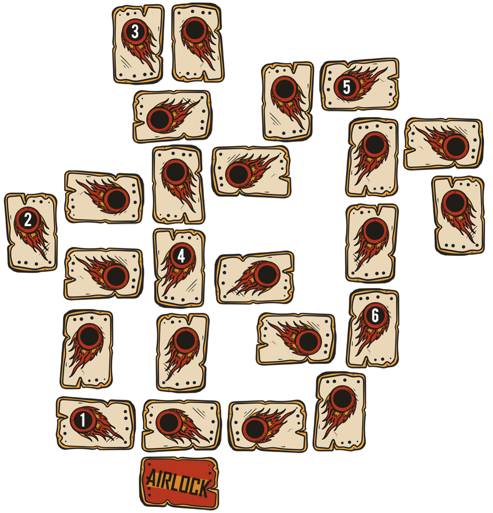
传输记录
2422年2月24日，标准时间16:23
网络突发传输，贝利总部（Bailley Headquarters，Coldhearth）至绑定拾荒者飞船
// 传输开始
契约概述
肖利采矿站（Shorely Digwerks）是死亡地带边缘的小行星采矿点，隶属于贝利联合公司（Bailley Consolidated）。该采矿站此前报告“停工并请求支援”，6分钟后又发送消息撤回请求——消息中包含当日“胁迫暗号”。随后发生多起爆炸，通讯彻底中断。
贝利联合公司在该区域的战术资源有限，一支突击小队正在赶来，预计3个标准周后抵达——他们对采矿站工作人员的生存情况并不乐观。公司现发布契约：招募“打捞技术人员”，进入“活跃人质危机现场”，回收站内的实验性、高价值采矿设备。这些设备占贝利公司在该星域“信托资产”的很大一部分，绝不能落入非公司人员手中。
// 祝你好运，拾荒者
// 黑色契约：肖利采矿站
任务目标、特殊规则、甲板蓝图、操作流程、人类互动、障碍、补给、坏消息、解锁内容
操作流程
历史记录
肖利采矿站是个小型“探矿点”，主要在星域边缘开采氦-3晶体（crystalline Helium-3）。站内人员混杂：有职业矿工、有“背景复杂”的人，也有负责保障采矿站正常运转的支援人员。氦-3采矿危险性高，但它是边境地区“最好的反应物质”（reaction mass）。
同时，肖利采矿站还是“改装轻型步行机”的测试点——这种动力外骨骼有望彻底革新死亡地带及周边区域的氦-3开采和加工方式。测试虽有挫折，但从未像“阿顿·鲁格（Atton Ruger）及其同伙到来”这般灾难性。
阿顿·鲁格船长，是名为“鲁格掠夺者”（Ruger’s Reivers）的黑市组织首领，过去8年来，一直是该星域合法贸易和工业运营的“祸害”。他曾在地球协约国海军服役，熟悉海军标准操作流程；再加上敏锐、灵活的头脑，他能对“通常认为不会遭海盗袭击的目标”发动“打了就跑”的突袭。
主要契约目标
贝利联合公司向“有魄力的打捞技术人员”提供高额“发现费”：要求你进入“活跃人质危机现场”，定位并回收公司财产——具体为“钻孔蝇MK1型采矿外骨骼”（Borefly MK 1 Mining Hardsuit）原型机，并驾驶它返回你的气闸。该外骨骼的控制系统“直观且易用”，尽量别把它碰坏了。
若能成功营救“关键人员”，公司将提供丰厚奖金——但对于“营救过程中人员伤亡风险”，公司不承担任何责任，也不提供丧葬费。“人可以替换，但‘钻孔蝇’代表巨额财务投资，且落入亡命之徒手中会很危险”。
预设规则：环境（ENVIRONMENT）
你正进入“活跃人质危机现场”。虽然“营救人员”并非你的主要目标，但船员的专业知识和经验，可能在任务中帮你解决实际问题：
1. 当你翻开“方块”（Diamonds）花色的卡牌时，你找到的不是战利品，而是肖利采矿站的工作人员。
2. 成功通过“人类互动提示”后，该工作人员将加入你的角色表，直至任务结束（除非提示要求“移除”）。
肖利采矿站由“采矿隧道”和“加工舱”构成，这种结构限制了你的机动性——与常规打捞任务不同，除非提示明确允许/要求，否则你无法进行“太空行走”。
和其他“待拆飞船”一样，肖利采矿站的“收益核心”位置未知，需按常规方式搜寻、回收：在搭建甲板蓝图前，将“收益核心”（黑鬼牌）洗入牌组。
特殊操作
1. 人力资源（Human Resources）
成功通过“人类互动提示”后，你将获得该非玩家角色（NPC）的“专属能力”——他们会跟随你，在“触发条件”满足时使用能力。所有能力仅可使用1次。
若你遭遇“海盗终结者”（Pirate Exterminator），你已招募的“人类”可能被杀死，你将立即失去其能力。
2. 带他们活着出去（Get ‘em Out Alive）
若你将“人类”送回气闸，可让他们在气闸内“安全等待”——只要“海盗终结者”未进入气闸，这些人类就会“随你存活”。
若你成功带着“人类”撤离肖利采矿站，任务完成后，你将获得该人类对应的“个人升级”（详见“解锁内容”）。
威胁1/2：海盗终结者（Pirate Exterminator）
阿顿·鲁格的几个手下，前来查看“骚乱原因”。他们没什么脑子，也没什么“创造性解决问题的能力”，但他们携带的武器“杀伤力十足”——所以，他们根本不需要“动脑子”。而且，他们看起来也没什么“交谈意愿”……
海盗终结者行动规则（根据抽取牌的花色）
| 牌的花色 | 行动 |
|---|---|
| 方块（Diamonds） | 向气闸方向移动2步 |
| 梅花（Clubs） | 向你所在方向移动1步 |
| 红桃（Hearts） | 用通讯器呼叫增援：生成1个额外“海盗终结者”，按正常规则掷骰确定其出现位置。 |
| 黑桃（Spades） | 若能从1个模块外“嘲讽你”，则消耗你的1点勇气；若不能，则向你所在方向移动1步。 |
与海盗终结者处于同一模块时
掷1个六面骰子：
- 6：你躲过一阵枪林弹雨，躲进下一个模块——希望能甩掉他们！或者，消耗1点装备，用“拾荒者智慧”干掉这些混蛋；也可消耗1点勇气，用“英勇行为”解决他们，之后将其从甲板蓝图中移除。
- 4-5：好消息是，你活下来了；坏消息是，如果你身边有“人类”，他们没能活下来——空气中满是子弹，他们中了一枪。选择失去1名你招募的“人类”；无论如何，都需消耗1点勇气——你会因“局势严重性”而心神不宁，这“本不是你的战斗”。
- 1-3：拾荒者，你已经尽力了。你进入采矿站，拼了命尝试，但就是“跨不过这道坎”。那些海盗也“尽力了”，而且他们的枪法更好（指你被杀死）。
海盗终结者抵达气闸时
他们会逮捕所有在气闸内“避难的人类”——这些人会被拖到“临时牢房”，或遭遇更糟的命运，谁也说不清。当你返回气闸时，这些人类已经不见了。
威胁2/2：动力外骨骼（Powersuit）
贝利联合公司的“钻孔蝇MK1型采矿外骨骼”，是改装的“军用轻型战斗步行机”，配备多种“工业升级”，能应对比其他外骨骼“更坚硬的目标”。注意看：烧结塑料减震板（sintered armoplast shockplates）、双足移动系统、自极化塑料玻璃驾驶舱、带集成聚变电池的脉冲采矿激光。
还要注意：驾驶舱里坐着个“愤怒的海盗”。
动力外骨骼行动规则（根据抽取牌的花色）
| 牌的花色 | 行动 |
|---|---|
| 方块（Diamonds） | 向气闸方向移动1步 |
| 梅花（Clubs） | 向你所在方向移动1步 |
| 红桃（Hearts） | 摧毁当前所在模块，然后向你所在方向移动1步。 |
| 黑桃（Spades） | 向气闸方向移动2步 |
与动力外骨骼处于同一模块时
掷1个六面骰子：
- 6：它“不是真正的战斗步行机”，你证明了这一点。消耗1点勇气或装备，使驾驶员失去行动能力，然后将这个“收益核心”拖回你的飞船（无需再寻找“收益核心”卡牌——它刚才试图杀你，现在已是你的战利品）。
- 4-5：三吨重的“装甲采矿设备”，能让驾驶员“安全无忧”，但“操作环境”对你来说极其危险。若你身边有“人类”，选择1名“无法存活”；你暂时躲开了，但感觉“运气在耗尽”。
- 1-3：拾荒者，你知道“穿着真空防护服的拾荒者，被20千瓦脉冲采矿激光击中”会怎样吗？和其他东西一样（指被摧毁）。抱歉，这是“无法存活”的情况。
动力外骨骼抵达气闸时
海盗会带着“战利品”（动力外骨骼）逃走，把你留在肖利采矿站——你得向贝利联合公司“解释情况”，但他们可不会“善解人意”。
肖利采矿站甲板蓝图搭建方式
从扑克牌中移除所有花色的A-6，洗乱剩余卡牌，从中抽取23张，按常规方式加入“收益核心”（黑鬼牌），再次洗乱后摆放甲板蓝图。按以下位置部署气闸：
人类互动（HUMAN）(方块)
拾荒者，有件事总让我心里暖暖的：当人们“陷入困境”时，并非所有人都会“屈服并祈祷黑暗过去”。我们每个人都在“自己的小泡泡里漂流”，只想“多撑一个班次”——按理说，“把麻烦推给别人，不管谁最终‘接锅’”会很容易，对吧？毕竟，你“永远不会见到那些‘枪口最终对准的人’”，对吧？
但并非所有人都这样。至少“大部分人不这样”，在这片区域不这样。这里的人——在“漂浮中挣扎、被‘不公且残酷的宇宙’践踏”的人——总有一些会“直视宇宙的眼睛，说‘比你强的人都试过了，现在他们早就不在了’”。太空“不公且残酷”，所以拾荒者“必须坚强”。
// 来自“战车号”的记录
人类互动详情
方块A：集团联络人（Corp Liaison）——芬恩·希思科特（Finn Heathcoate）
他被绑在办公室的旋转椅上，昂贵西装的线条被弄皱了。他试探性地活动手指，满怀希望地轻轻挥了挥手：“能帮个忙吗？”
掷1个六面骰子——若你选择“无赖”（Scoundrel）职业，直接按“掷出6”处理（芬恩也是个“无赖”，你们“该互相帮助”）：
- 6：“就像电影里一样！你是‘底层英雄’，我是‘能说俏皮话的搭档’，对吧？太酷了！好，我罩着你，兄弟。咱们去收拾那些海盗！” 下次你遭遇“安全危险”（Security Hazard），芬恩会让你“按掷出6的结果通过”——该能力可在“掷骰后使用”。
- 4-5：“嘿，谢了！说实话，我一周前才调来，刚摸清情况。我有张通行证，但除此之外……我就是个‘穿西装的’，我只是在这儿工作。抱歉。” 获得1个“超控密钥”（Override Key）。
- 1-3：“喂喂，你这态度不对啊，朋友。这种情况发生时，公司规定是‘待在原地，等待战术支援’。我这可是‘冒着风险’的，你以为我想‘冲进交火区’？才不呢。要喝水吗？迷你吧台里有。” 获得1点勇气。
方块2：矿工（Miner）——阿什·迈耶（Ash Mayer）
自从“枪声响起”，他就一直“躲着”。你转过拐角时，他打开了头灯，晃得你睁不开眼：“该死，他们居然派了个拾荒者来？这也算救援？你认识塔姆（Tam）吗？我表弟也是干‘打捞’的。”
掷1个六面骰子——若你选择“牛仔”（Cowboy）职业，直接按“掷出6”处理（你确实认识塔姆，花了点时间聊天）：
- 6：“跟你说，我比谁都熟悉这些隧道。那些海盗肯定没料到，你会‘从外面绕到他们侧面’。朋友，告诉我你‘需要在哪儿打个洞’（指开辟通道）。” 你可在肖利采矿站“进行1次太空行走”（突破常规环境限制）。
- 4-5：“我‘喜欢和平，不喜欢打架’，但要是你‘陷入困境’，我能帮你‘挖条路出去’。” 可通过1个“无法通行的障碍”。
- 1-3：“听着，对你来说‘我在哪儿都一样’——我会在这儿等‘安全了’再出来。不过，这里的东西你随便拿。” 获得1点装备。
方块3：系统工程师（Systems Engineer）——卡蒂·诺尔（Cattie Knowle）
她躲在“电脑室”里，身边有三个皱巴巴的“快 zip（QuikZip）饮料罐”。她的手指在键盘上飞舞，没注意到你：“我申请了六次加薪，他们给我的钱‘根本不够修复这种黑市代码’。这些混蛋‘到底在机器舱代码里搞了什么’？”
掷1个六面骰子——若你选择“黑客”（Slicer）职业，直接按“掷出6”处理（你和她“交流技术术语”，卡蒂给了你一罐快 zip，还提出“尽量帮忙”）：
- 6：“看起来他们想‘启动步行机’——那玩意儿比整个采矿站都值钱。我有‘动力装置远程锁’，但要是他们‘启动了它’，就得‘搞定驾驶员’。你觉得你能行吗？” 只要卡蒂跟着你，“动力外骨骼就无法移动”。
- 4-5：“我觉得‘你比我更会用这些东西’，高手。后面那些架子上，有‘用不完的配件和连接器’。” 你的“装备值补满”。
- 1-3：“出去？比如‘现实世界’？你疯了吗？” 获得1点勇气，但卡蒂“不会跟你走”。
方块4：军需官（Quartermaster）——伯基特（Burkitt）
他躲在“工具库”的防爆盾后面，沙哑的声音从噼啪作响的扬声器里传来：“伯基特‘不知道外面发生了什么’，也‘不在乎你是来干嘛的’。工具库‘开放时间是当地时间08:00-20:00’，赶紧走。”
掷1个六面骰子——若你选择“虚空鼠”（Void Rat）职业，直接按“掷出6”处理（伯基特问“你这小鬼来这儿干嘛”，他的“软心肠”显露出来了）：
- 6：“看来‘整个地方都要完蛋了’，躲着也没用。好吧，咱们‘拿点东西再走’。” 你的“氧气值补满”。
- 4-5：“伯基特‘对付这种麻烦只有一个办法——用双倍的TNT’。拿上一些，咱们走。” 可使用1次“老兵”（Vet）职业的“蛮力突破”（Brute Force and Ignorance）能力。
- 1-3：“不行，伯基特‘不挪窝’。‘工具管理员不能离开岗位’，三环活页夹上这么写的。你可以用‘充电接口’，但伯基特‘在这儿很舒服’。” 获得1点氧气。
方块5：安全检查员（Safety Inspector）——史蒂夫·休斯（Stevie Hughes）
他躲在“辅助加工室”的剪贴板后面，露出“受惊小鹿般的表情”，虚弱地笑了笑：“我还以为‘只会写份报告，说‘灭火系统逾期未检查’’。等着看他们‘读这份报告’吧。”
掷1个六面骰子——若你选择“救援技师”（Resc’Tech）或“新手”（Rookie）职业，直接按“掷出6”处理（你要么“足够有领导力”，要么“和他一样‘不知所措’”，所以能“达成共识”）：
- 6：“采矿站里‘到处是蠢死的方式’，朋友，我‘全都见过’。你‘带路’，我‘确保你‘安全操作’’，好吗？” 下次你遭遇“环境危险”（Environmental Hazard），史蒂夫会让你“按掷出6的结果通过”——该能力可在“掷骰后使用”。
- 4-5：“我‘爬遍了整个采矿站’，知道‘到处是旧隧道和通道’。大部分‘被焊死或塌了’，但要是‘遇到麻烦’，我‘肯定能找到绕路的办法’。” 可使用1次“虚空鼠”（Void Rat）职业的“通风管穿梭”（Vent Rat）能力。
- 1-3：“呃……你‘不如在这儿歇会儿？’” 获得1点勇气。
方块6：安全主管（Security Chief）——戴夫·摩根（Davey Morgan）
他躲在“安全办公室”里，身上中了几枪，但防弹衣救了他的命。他举着自动手枪对准你：“你是‘他们的人’吗？”
掷1个六面骰子——若你选择“老兵”（Vet）职业，直接按“掷出6”处理（戴夫从你的“举止”认出你“不是他们的人”）：
- 6：“终于有人‘做点什么’了。” 他熟练地检查自动手枪，掏出备用枪，“握把朝前”递给你：“你用过这种枪吗？” 下次你遭遇“威胁”，直接按“掷出6的结果通过”。
- 4-5：“还有两天我就退休了，居然遇上这种事，真倒霉。” 他叹了口气：“好吧，我跟你走。” 下次“有东西要杀你”时，戴夫·摩根会“救你一命，自己牺牲”。
- 1-3：“听着，拾荒者，我‘今天中了三枪’，不想‘这样送命’。你‘可以在这儿待着’，但我‘不会出去’。” 获得1点勇气——“总得有人‘撑下去’”。
障碍（Barriers）(梅花)
遇到障碍时，掷1个六面骰子：
- 6：成功通过障碍，后续仍可从这里通行。
- 4-5：冒险尝试一次就够了，通过后这个模块就会变成死胡同。将卡牌旋转45度，标记为“无法通行”。
- 1-3：无法通过，返回上一个模块，另寻路线。将卡牌旋转45度，标记为“无法通行”。
“在‘安全’这件事上，最关心你的人‘除了贝利公司，就是你自己’！留意‘隐藏危险’，使用‘所有授权安全装备’，谨慎行动。这里是‘活跃工作区’，‘看到问题就说’。安全代表‘随时愿意倾听并提供帮助’。肖利采矿站‘已连续7小时无致命事故’！”
// 进入肖利采矿站“主隧道”时播放的“愉快自动提示音”
障碍类型详情
- 梅花A：压力舱门（Pressure Hatch） 这个舱门“关得死死的”，拾荒者。看起来有人“启动了应急密封”，得“重新路由并执行超控”才能打开。显然“有人不想让你走这条路”，但“这什么时候阻止过你”？
- 梅花2：坍塌隧道（Collapsed Tunnel） 这里有“枪战痕迹”——看墙上的弹痕，还有“像锋利尘埃一样漂浮的剥落物”？他们“肯定是在交火中‘运气好’，弄塌了天花板”。想过去很难，但你“或许能撬开一条缝，挤过去”。
- 梅花3：自动机枪阵地（Autogun Emplacement） 走廊里扫来扫去的“讨厌激光瞄准器”，是莱茵霍夫-库克（Rhinehoff-Cook）0.50口径“反人员哨兵枪”的“全视之眼”。它有“可见光和红外光谱全范围运动追踪”——别让它“看到你”，除非你“特别缺铅”（指想被枪击）。
- 梅花4：区域封锁（Area Denial） 策划这次“海盗行动”的人，“不缺资源”。走廊里那些“金字塔形的小东西”，是特雷洛克装备公司（Trailrock Armaments）的“微型吸盘地雷”，他们叫它“撬锁器”（Safecrackers）——专门用来“击穿军用防护服，让真空‘解决问题’”。拾荒者，“小心脚下”。
- 梅花5：燃烧矿脉（Burning Vein） 这可不妙。这里的氦-3晶体……“燃烧”这个词不太准确，应该是“被点燃了”，看起来像“在造一颗小星星”。看看你的盖革计数器，“别直视它”——或许“绕远路”能过去。
- 梅花6：露天裂缝（Open Fracture） 他们“在这儿打穿了太空”——或许是“为了阻止追击”，或许只是“运气太差”。不管怎样，这里“没多少稳固的地面”，“安全通道很少”，要是“踩错地方”……“太空OSHA（职业安全与健康管理局）可救不了你”。
补给（Supply）(红心)
遇到补给时，掷1个六面骰子：
- 6：获得2个标记的补给单位。
- 4-5：获得1个标记的补给单位。
- 1-3：这里已经没什么能给你的了。
“嗨！我是米娜·福蒂纳（Minah Forty-Ninah），我来帮你‘充分利用装备’！使用任何‘工作用装备’前，请‘阅读所有附带文档’，有问题‘找你的直属主管’——他们‘会帮你解决麻烦’。首先，‘打开激光切割器的防辐射密封’，咱们来看看它怎么用。‘先把‘训练卡’插入接口，再把食指放在‘发射按钮’上’。”
// 员工休息室“循环播放的‘令人难以忍受的公司培训视频’”
补给类型详情
- 红心A：损管站（Damage Control） 这么大的采矿站，总得有几个“损管站”，用来“在灾难后修复设备”。你“路过了那些‘看起来经历过战斗’的损管站”，但“这个应该还行”。（对应资源：装备）
- 红心2：备用防护服（Spare Hazard Suit） 储物柜里有“应急快速响应防护服”，还在“密封袋里”。你“肯定看过不少恐怖视频，现在不想换衣服”，但要是“氧气罐还能用”，你“或许能抽点氧气出来”。（对应资源：氧气）
- 红心3：工作照明（Working Lights） “模块里有正常工作的灯”——这种“温暖又舒服的感觉”，只有“经历过‘糟糕行动’的拾荒者”才能真正体会。灯在“闪烁，但还亮着”，这“已经很不错了”。（对应资源：勇气）
- 红心4：采矿炸药（Mining Charge） 墙上有“气溶胶喷射指示器”——看起来他们“本来想在这儿开新隧道”，因为“炸药都整齐地堆在架子上”。他们“不会介意你‘拿点用’，毕竟你‘在帮他们找条出路’”。（对应资源：装备）
- 红心5：通风橱（Fume Hood） 有个“没固定的便携式氧气瓶”和“硬塑料真空密封罩”在漂浮，“亮橙色，看起来很友好”——但上面的“血迹可不友好”。不过“有句老话怎么说的来着？‘乞丐没得挑’”。（对应资源：氧气）
- 红心6：船员餐厅（Crew Mess） 真“温馨”啊——餐具摆好了，食物还在桌上，看起来“船员随时会进来”。他们“只是‘迟到了’”，要是你“想‘吃点东西歇会儿’，没人会说你‘把胳膊肘放在桌上’”。（对应资源：勇气）
坏消息（Bad News）(黑桃)
“肖利采矿站全体员工注意。很遗憾，我‘有个坏消息要宣布’：‘停止所有采矿作业’。放下‘镐和铲子’，听我说。我们‘不是来‘挑事’的’，但‘已经解决了几个‘挑事的人’’。你们的主管‘贝恩斯先生（Mr. Baines）’，‘不幸遇上了矿石破碎机’。现在‘我说了算’。我的人‘很快会过来’，‘带你们去个舒服的地方’，‘等我们拿到想要的东西’。他们‘只会问一次’，而且‘我已经告诉他们，‘数到三’——给你们‘足够的时间’‘积极配合’。他们‘不会数到四’。
说实话，‘他们中有人能数到三，就该‘自豪’了’。”
// 阿顿·鲁格（Atton Ruger）船长，“全采矿站广播”
坏消息类型详情
黑桃A：抑制系统（Suppression System）
肖利采矿站使用的“化学抑制剂”，是种“讨厌的化学混合物”，用来“抑制意外聚变反应”。通常情况下，“会先疏散人员，密封区域，再启动喷射装置”——但现在，这些装置“开始嗡嗡作响”，拾荒者。
这是“环境危险”（Environmental Hazard），掷1个六面骰子：
- 6：“安全超控装置”虽然“不好找”，但你“冲去主管办公室，砸了那个红色大按钮”，喷射装置“安静下来了”。
- 4-5：你“赶紧跑向最近的舱壁”，“砰地关上安全密封门”——你“活着出来了，但‘回头路’已经被堵死”。将这个模块标记为“无法通行的障碍”。
- 1-3：“自密封铅卤化物泡沫”可“不温柔”——但“大部分能‘扑灭核灾难’的东西，都不温柔”。抱歉，拾荒者，你的防护服“扛不住这种高温高压”（指你死亡）。
黑桃2：监控摄像头（Surveillance Cams）
采矿站的摄像头“都连到‘中央控制室’”，现在“那群海盗正‘忙着干坏事’”——他们“在盯着你的一举一动”。
这是“安全危险”（Security Hazard），掷1个六面骰子：
- 6：你“动作快、够谨慎”，在“摄像头的注视下”，“从阴影移到角落，再到掩护物后”——他们“很难锁定你的位置”。
- 4-5：“扬声器里传来声音：‘哟，这儿有只小老鼠啊。兄弟们，看到没？’” 笑声“可不友好”。消耗1点勇气或检查氧气，“减少暴露”；生成1个“海盗终结者”威胁。
- 1-3：“扬声器里传来声音：‘小老鼠，小老鼠……你在躲什么？’ 那不是‘贝利公司的工作服’。杰克逊（Jackson）、奈尔斯（Nails），‘帮我‘崩了这东西’——我‘讨厌它鬼鬼祟祟的样子’。” 拾荒者，“小心点”，海盗“来了”。在“最近的威胁生成模块”中，生成1个“海盗终结者”。
黑桃3：系统入侵（I’m In）
你“说不上来为什么”，但肖利采矿站的“整体氛围变了”——走廊里的“紧张感少了”，远处“自动武器的枪声停了”，而且“冷静的合成语音刚宣布‘空间站控制权已转移’”。这“肯定不是好事”。
这是“安全危险”（Security Hazard），掷1个六面骰子：
- 6：“幸运的是”，海盗的“黑客”“暂时没把你当回事”——他们“忙着‘重新路由系统，干坏事’”。这“不是好事，但也‘不是你的麻烦’”。
- 4-5：“日子要变难了”。海盗的“黑客”“入侵了系统，正‘盯着你的每一步’”。“海盗终结者”现在“每次都会向你所在方向移动1步”；抽取1张牌，若为“黑色”，他们“会召唤1个增援”。
- 1-3：你“听到了吗？” 那是“你要找的‘原型采矿设备’启动的声音”。你“感觉到了吗？” 那是“三吨重的‘铁和陶瓷碳化物’在‘朝你走来’”。“事情要‘变得刺激’了”，生成1个“动力外骨骼”威胁。
黑桃4：人员运输车（People Mover）
这条隧道“是给矿工的‘重型推力单轨列车’用的”。当然，“中央控制室里的那群混蛋”，“没人知道列车‘还动不动’”。但你“要是‘直接沿着隧道走’”，“肯定会有列车从‘随便哪个方向’冲过来，把你‘碾成铁轨渣’”。“小心缝隙”（指轨道缝隙，比喻危险）。
这是“环境危险”（Environmental Hazard），掷1个六面骰子：
- 6：“幸运的是”，列车“正好在车站”，“预热好了，能启动”。“很好用”，按“按钮就能走”——“走”的速度是“每小时180公里”，直接“到下一个模块”。
- 4-5：列车“坏了”。没关系，拾荒者，你“能启动系统，让它恢复运行”，只是“得花点时间”。消耗1点装备或检查氧气。
- 1-3：“好消息”是，列车“正好在车站”，“预热好了，能启动”！“坏消息”是，“车站里有个海盗，拿着‘螺栓发射器’”。在这个模块中，生成1个“海盗终结者”。
黑桃5：震动（Tremors）
哇！整个小行星“都在抖，像‘有人在它坟上走’（比喻不祥之兆）”！我“听说过这种情况”，探矿者叫它“密闭棺材”（closed-casket specials）——“总是先小晃，然后‘大动’”。不管“中央控制室里的人在干吗”，“小行星不喜欢”。“找掩护”！
这是“环境危险”（Environmental Hazard），掷1个六面骰子：
- 6：你“等了‘几个土豆的时间’（指一小会儿）”，确认“只是肖利采矿站‘打了个盹’”，然后“继续前进”。“一个土豆、两个土豆、三个土豆”——只是“小震动”。
- 4-5：“次生震动”在“采矿站里蔓延”，你“得‘慢慢走，小心点’”。消耗1点勇气或检查氧气，“别让‘石头’替‘海盗’完成‘没做到的事’”（指别被石头砸死）。
- 1-3：该死，“天花板整个‘ spiderwebbing（布满蛛网般裂缝）’，碎片开始‘往下掉’”。“好消息”是，“墙塌了，你没被压扁”；“坏消息”是，“你得‘太空行走’回气闸，重新来”。
黑桃6：安全接管（Security Takeover）
海盗“破解了某个关键系统”，现在“控制了肖利采矿站的整个安全网络”——所有门“都锁了”，所有设备“都被监控了”，所有入口“都被锁定了”。拾荒者，“这可能会很糟”。
这是“安全危险”（Security Hazard），掷1个六面骰子：
- 6：“没问题”，你“花了一分钟，执行‘三通道超控’，把他们‘锁在外面’”。“从你的飞船‘挪用’了‘运行电源’，自己‘搞了套加密’”——这“能让他们‘忙一会儿’”。
- 4-5：“‘紧急锁定程序已激活’”，“愉快的提示音”传来。该死，“所有门都锁了，还在‘往下放安全门’”——你“得‘撬开所有门’”。穿越模块时，“需检查2次氧气”。
- 1-3：“扬声器里传来声音：‘这儿有点闷，对吧，小老鼠？‘开个窗’怎么样？’” 他们“把你‘炸进了太空’”。“太空行走”回你的飞船，“把这个模块从甲板蓝图中移除”。
解锁内容（Unlocks）
若你能活着离开肖利采矿站，就已经战胜了命运。带着以下解锁内容，继续你的旅程：
1. 传承升级：贝利动力提升框架（Bailley PowerLift Augment Frame）
完成“黑色契约：肖利采矿站”任务后，以下升级项将在死亡地带的“所有空间站”中解锁：
这是贝利联合公司“为辛苦工作的拾荒者”生产的“钻孔蝇采矿步行机迷你版”。“别自己使劲，让‘公司智慧’帮你‘扛重’”。
- 成本：6点信用点
- 维护费：2点信用点
- 效果：负载容量+2，“完全升级后的拾荒者”最大负载变为10。
2. 个人升级（Personal Upgrades）
A：可靠副武器（Trusty Sidearm）
戴夫（Davey）“送了你一把离别礼”，作为“友谊的象征”——是“阿什顿-火星公司‘战斗7型’（Ashton-Mars Combat 7）手枪”。“穿透力低，且适合真空环境”，是“拾荒者‘陷入困境’时的‘好东西’”。
- 效果：面对“逻辑上会被‘子弹’影响的威胁”，你“第一次掷骰”按“掷出6的结果处理”。
B：改装激光切割器（Hotrodded LasCutter）
阿什（Ash）“专门改装了这把‘矿工标配工具’”，觉得“你可能用得上”。“所有安全装置都被‘超控’了，扳机‘改过了’，电源‘用胶带缠了，还贴了‘不搭调的贴纸’’”，但“它‘切舱门’的速度‘没人能比’”。
- 效果：每艘待拆飞船可使用1次，将“1个无法通行的障碍”变为“可通行”。
C：技术支援（Tech Support）
你“没跟卡蒂（Cattie）待多久，但她‘影响了你一点’”——“对付‘失控人工智能’或‘饥饿纳米虫群’时，‘知道怎么关掉它们’”很有用。
- 效果：每艘待拆飞船可使用1次，“联系卡蒂”，将“1个‘基于电脑的威胁’从甲板蓝图中移除”。你的维护费+1（“因为你‘有礼貌’，‘工人该拿报酬’”）。
D：“从卡车上掉下来的”（Fell off the Back of a Truck）
伯基特（Burkitt）说，“和‘星域最大工业公司之一’的‘军需官’做朋友，有‘好处’”——“他们‘不查他的账’，他‘能帮你‘悄悄弄点’需要的‘零件和设备’’”。
- 效果：选择“1个你正在使用的装备”，它“不再产生维护费”。
E：安全第一（Safety First）
你“没跟史蒂夫（Stevie）待多久，但他‘影响了你一点’”——“你‘再也不会‘不系安全绳就太空行走’了”。“说实话，‘真不知道为什么有人会这么做’”。
- 效果：进行“太空行走”时，若“抽到3张黑色牌前”，可“随时‘止损’，返回上一个模块”，正常检查氧气。
F：集团救援队（Corporate Extraction Team）
芬恩（Finn）“给了你个‘集团应急按钮’”——“肖利采矿站‘被围攻时’，这‘没帮上他’，但在‘死亡地带’，要是你‘被海盗或秃鹫帮‘拦住，要‘开枪打你’’”，“按下这个‘友好的按钮’”，一支“全副武装的救援队”就会来“把你‘从火坑里拉出来’”。
- 效果：代价是“你飞船上的所有战利品都会被‘拿走’”，但“总比‘死了’好”。
《死亡地带》成就（ACHIEVEMENTS）
| 成就编号 | 成就名称 | 达成条件 |
|---|---|---|
| 01 | 铁石心肠（Stone Cold） | 完成1艘待拆飞船的打捞，全程“不使用勇气（Grit）” |
| 02 | 别告诉我赔率（Never Tell Me the Odds） | “掩盖踪迹（Cover Your Tracks）”并“触发威胁（Threat）” |
| 03 | 危险交易（Risky Arg） | “推进（Push）”时“连续选择‘风险选项’” |
| 04 | 背刺队友（Blue Falcon） | 在“合作模式”中“让队友死亡” |
| 05 | 最后通话（Last Call） | 使用“通讯器（Comms）”帮助队友时“死亡” |
| 06 | 近距离接触（Close Encounter） | 躲过“外星生物的伏击” |
| 07 | 最危险的游戏（Most Dangerous Game） | 用“铁路枢纽（Railhead）”结束1个威胁 |
| 08 | 战斗调试（Combat Debugger） | 遭遇“因‘低氧气’而‘愤怒’的待拆飞船”后，“存活下来” |
| 09 | 呼吸器维护的艺术（Zen and the Art of Rebreather Maintenance） | 完成1艘待拆飞船的打捞，“全程不减少氧气（Gas）” |
| 10 | 捡芝麻（Taking the Mais） | 在“有‘三重威胁’的待拆飞船”上，“打捞的‘零散战利品’比‘收益核心’还多” |
| 11 | 庄家总赢（The House Always Wins） | 在“银行（Bank）”申请“比当前债务‘更高的贷款’” |
| 12 | 一网打尽（In Sweeper） | “意外触发‘纳米虫群（Nanite Swarm）’，并‘让它吞噬障碍（Barrier）’” |
| 13 | 守财奴（Cash Hog） | “刚离开气闸”就“掷出‘银行有利’的结果” |
| 14 | 运气比实力重要（Better Lucky Than Good） | “推进（Push）”时“连续成功，且‘不触发负面效果’” |
| 15 | 清空盘子（Clean Your Plate） | “彻底清理‘铁路枢纽（Railhead）’的‘所有模块’” |
| 16 | 跳进去（Leap Onto） | 用“气闸（Airlock）”“摧毁收益核心（Payday）” |
| 17 | 耗尽（On Fumes） | “氧气失败区间达到6”时“返回气闸” |
| 18 | 夜灯（Nightlight） | 用“最低照明（Glow）”“开始并完成1艘待拆飞船的打捞” |
| 19 | 荣誉拖船（Honorary Tugboat） | “携带‘完整收益核心’时‘进行太空行走’” |
| 20 | 速战速决（In and Out） | “不探索任何‘额外模块’，直接获取收益核心” |
《死亡地带》成就徽章（ACHIEVEMENT PATCHES）
- 破产（BREAK BANK）
- 任务失败（BRAVO FOXTROT）
- 干净打捞（CLEAN PICK）
- 老手俱乐部（OLD HATS CLUB，成立于2420年）
- 高亮（HI LIGHTS ON）
- 死亡倒计时（888 DIEM）
- 尚未发生（STUFF THAT AIN’T HIT YET）
- 远离麻烦（BUG OFF）
- 密封（HARD AIRTIGHT SEAL）
- 向前（AUTO FORWARD）
- 做个交易（LET'S MAKE A DEAL）
- 敌人在这边（FACES ENEMY THIS SIDE）
- 昂贵（EXPENSIVE）
- 别做守财奴（DON'T BE A CASH HOG）
- 速进速出（GET IN GET OUT）
- 两次行程？（TRIPS? TWO）
- 开关开着吗？（THE CRANK ON?）
- 又朝着光走了？（DID I LEAVE HEAD TOWARDS THE LIGHT AGAIN）
- 做就对了（DO IT）
拾荒者记录卡（DEAD BELTERS）
| 姓名（NAME） | 背景（BACKGROUND） | 死因（CAUSE OF DEATH） | 墓志铭（EPITAPH） | 债务（IN DEBT） | 投资（INVESTED） |
|---|---|---|---|---|---|
备注（NOTES）
- 债务（DEBT）：1点债务=10点信用点（Cred）
- 投资（INVESTMENT）：1次投资=5点信用点（Cred），“每次投资降低1点维护费（Upkeep）”
- 飞船升级项（SHIP UPGRADES）：
- 扫描仪（SCANNER）：维护费“1点信用点/级”
- 备用资源库扩展（SPARE BANK EXPANSION）：维护费“1点信用点/级”
- 残骸登记册（WRECK REG）：维护费“1点信用点/级”
- 广谱传感器（BROAD PASS）：维护费“1点信用点/级”
- 穿梭机（SHUTTLE）：维护费“1点信用点”
- 打捞债券（SALVAGE BOND）：维护费“2点信用点”
- 高级通讯器（IMPROVED COMMS，仅合作模式）：维护费“1点信用点”
- 个人装备（PERSONAL KIT）：
- 诱饵装置（CRYBABY）
- 超控密钥（OVERRIDE KEY）
- 应急氧气罐（DEADMAN CYL.）
- 应急净化器（EMERGENCY SCRUBBER）
- 长效呼吸器（OUTLAST DEEPBREATHER）
- 逃生套件（EGRESS KIT）
- 非法升级项（[I] SHIP UPGRADES）：
- BFDG步枪（BFDG）：维护费“2点信用点”
- 破解器（CRACKERJACK）：维护费“1点信用点”